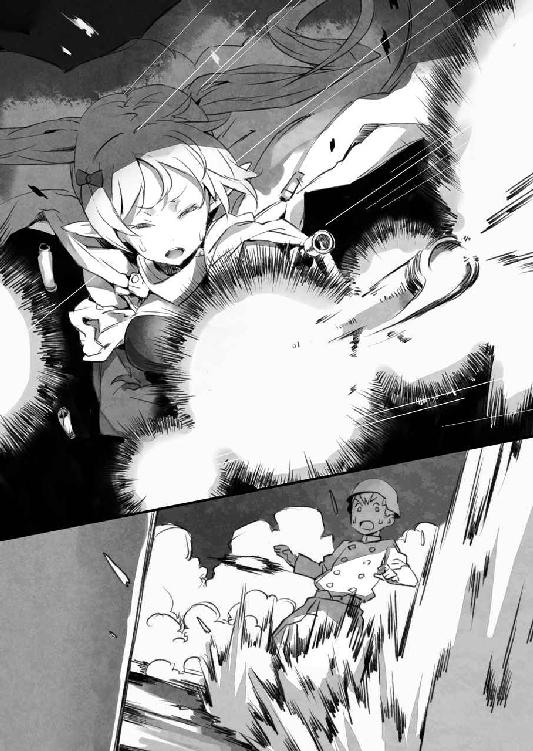

| アウトブレイク・カンパニー 萌える侵略者 05 | |
| 榊一郎 | |
| 講談社 (2013) | |
ebpaj-guide-1.0
口絵・本文イラスト／ゆーげん
デザイン／塚原麻衣子（ムシカゴグラフィクス）
第一章 気がつけば別の国
眼が醒めると、僕の日常は唐突に終了していた。
「............」
ぼんやりと天井を見つめること──数秒。
見覚えのない天井を眺めながら、僕はほとんど反射的にこう呟いていた。
「......知らない、天井だ......」
そろそろ古典の域に入り始めている某有名アニメの台詞が、咄嗟に口をついて出る──そんな僕の業の深いオタクっぷりは相変わらずで。そういう意味で僕自身は平常運転なのだけれど。
なんだこの──既視感!?
僕はちょっと前にも、同じ台詞を、同じような状況で、口走った覚えがあった。
「というか、本当に知らないんだけど」
僕は、改めて眼の焦点を天井に合わせた。
いつも通りであるならば、僕が目覚めたとき、最初に見るのは、凝った模様の彫刻と、半球状に近い造りをしている天井だ。
それは僕が、分不相応にも天蓋付きベッドでいつも眠っているからで、天井といっても実際の天井とは、また違うわけなのだけれど......ともあれ今では、もう僕にとって、眼が醒めて最初に見る天井は、それが当たり前になっていた。
それなのに──
「............」
今僕の眼の前にある天井は、なんの装飾も施されていない、真っ白な平面のもの。
どちらかといえば、もう半年以上帰っていない、日本の僕の家の、自室の天井に近い。
......ということは。
「──まさか」
僕はベッドの上で飛び起きながら言った。
「今まで全部夢オチかッ!?」
愕然と叫ぶ僕。
すべては、冴えない自宅警備員が見てきた夢なのか!?
あんなこともこんなことも、何もかもが実体のない青春の日の幻!?
そんなに僕の無意識領域は現実から逃避したがっていたのか!?
夢幻泡影か!? 現世は夢、夜の夢こそ実か？ 胡蝶の夢か!? 実は我に返ると交通事故で植物状態になったの●太の見ていた夢だったのか!?
そもそも現実とは何なのか!?
............などと。
一瞬、中二病方向に錯乱しかかった僕だが、すぐに気付いた。
これは日本の、僕の部屋──でもない。
もしそうであれば、まず僕が眼にするのは、アニメ『レンタル☆まどか』のヒロイン、まどかの等身大ポスターであるはずだ。ブラック企業に勤めながらも健気に頑張る魔法少女。だが彼女のどこか気弱げな笑みは、そこにない。
「......どこだ？ ここ......？」
そもそも、今僕が眠っていたベッドは、天蓋付きのものでこそないが、大人が三人は寝転ぶことができるんじゃないかというほどに、大きい代物だった。こんなベッドが、日本の僕の家にあるわけがない。
日本の家じゃない。
でもエルダントの屋敷でもない。
じゃあここは──どこ？
「............」
僕は少し警戒しながら、ゆっくりと部屋の中を見回す。
その部屋は、やはり見覚えのない内装になっていた。広さは屋敷の寝室とほぼ同じくらい──つまり二十畳ほど。
窓は厚いカーテンで覆われているが、その隙間からは微かな白い光が部屋の中に差し込んでくる。その光のおかげで、部屋が暗闇に包まれることはなく、僕は部屋の様子を見ることができた。
部屋にある家具は、僕が眠っていたベッドと、机と椅子。家具自体は少ないけれど、壁紙には細かな模様が入っていたり、カーテンには刺繡があったり、絵画が飾られたりしていて、殺風景というわけでもない。
ただ──
「......なんか......」
違うのだ。
全体的にエスニックというか、エルダントの屋敷を中世ヨーロッパ系のデザインだとすると、こちらはアジアン・テイスト、もしくはアラブ系寄りというか。なんだか民族っぽいというか。まあ僕に文化人類学とかそっち方面の素養はないけど、ぱっと見、背景の文化が違うような印象だった。
「......って、マジでここどこ？」
呟きながら──また既視感を覚えて、僕は溜め息をついた。
ベッドは違う。部屋も違う。
けれど眼が醒めたら、まったく知らない場所で当惑する──という状況に、僕は覚えがあった。
「まさかねー」
あんなことが、二度も三度もあるはずないじゃないか。
日本政府に騙されて、自衛隊に攫われて、気がついたら異世界で。
そんな無茶苦茶な話がそうそうあるわけがない──
「............まさか」
──はずなのだけど。
僕はふと気付いた。
視界の端に──それを見つけてしまった。
「──！」
思わずそちらを振り返る僕。
そこには、一人の少女が黙然と立っていた。
壁際に、まるで、室内の装飾の一部であるかのように。
この出会いにも、僕は覚えがあった。
つまりこれは──
「ループか!?」
思わず僕は吼えていた。
「ループものなのか!? エンドレスで八回か!?」
僕の記憶はそのままに、見えざる何者かの手によって世界は巻き戻され、同じ事象が繰り返されているのか!? 僕達はどうしたら、この繰り返しの迷宮から脱出することができるのだらふかッ!?
......などと少し古典調に考えてから、僕は気付いた。
壁際の少女が──動じない。
僕がいきなりわけの分からないことを──彼女にとっては──叫んでいるのに、ただ静かに立って僕の方を見つめている。
なんなのいったい。というか......
「ミュセルじゃない......？」
彼女なら、びっくりして小さく悲鳴とか上げそうなものだけど。
それとも、僕の奇行にはもう慣れた？
でも......
「............」
僕は眼を細めて、その少女を改めて観察した。
やや暗がりのようになっている場所にいたので、最初は分からなかったけれど──
「──ややっ!?」
髪は黒、いや......緑色？
薄闇の中で光る瞳も翡翠のような鮮やかな緑だ。
だが僕の視線を釘付けにしたのは髪の色なんかじゃない。
彼女の髪はやや短めで、ボーイッシュな感じだけど、だからこそそれは目立った。
髪を搔き分けてぴんと立つそれは──
「獣っ娘キターッ!?」
僕は思わずそう叫んで拳を握りしめていた。
そう！
それはケモノミミ！
ボリュームを抑えたショート気味の髪だからこそ目立つ、その耳！ むしろ髪よりも存在感たっぷりにその少女の容貌を特徴付けている！ 犬か猫を想わせるその短い毛に覆われた耳が、髪を搔き分けてちょこんと上を向き、存在を主張しているではないか！
「おお......っ」
僕は感動に打ち震えた。
いや。ケモノミミ少女を見るのは、別にこれが初めてというわけじゃない。
うちの屋敷にはエルビアというウェアウルフの獣っ娘がいる。彼女は性格的にも明朗闊達といった感じで、実に獣っ娘のポイントを押さえている。獣っ娘に──特に犬系の半獣人キャラに基本要素として求められる、活発さや人懐っこさ、それを人格レベルで過不足なく備えているのだ。素晴らしい。
しかし。しかしだ。
獣っ娘は何も犬系だけに限らない。
そう。むしろ基本は古典とも聖典とも言うべき『綿の国☆』のチ●猫に求められる通り、ケモノミミ少女は本来、猫がモチーフであるべきなのだ！
そう、要するに、眼の前の少女は猫系だった。
たぶん──ウェアタイガーなのだろう。頰や身体──お腹の一部や腕など──に明らかに色の違う体毛が混じっているからだ。それがまるで入れ墨のようにも見えて、独特の雰囲気を醸し出している。
え？ 何故そんなお腹の肌の色が分かるか？
それはもちろん──剝き出しだからだ。
なんということでしょう、その少女は、半裸だったのです！（僕、大興奮）
少女の衣装は、僕達の世界のアラブとかその辺の文化を想わせる代物──もっと端的に言えば『千夜一夜物語』に出てきそうな代物だった。
胸とか腰とかの要所──つまり『ああ、ここだけは、ここだけは駄目ッ！』的な部分のみを厳選して、幾何学模様の入った小さな布で覆い隠しているだけなのだ。おへそなんかは丸出しで、そして何故か、スケスケの薄い紗で、腕やら脚やらを飾っている。覆っているのではない。色も形も外から丸わかりだからだ。
ちなみにこの少女、体型的には、決して豊満ではない──というか明らかに幼いというか、胸はほとんど膨らんでおらず、腰もあんまりくびれてない。ぶっちゃけ幼児体型だ。
だけど──いや、むしろ、だからこそこの衣装の破壊力は強烈だった。
ある意味で全裸よりも扇情的というか、隠しているからよけいに、そのほんの少しの小さな障害物の下が気になるというか、秘してこそ花というか！ 幼い身体だけに、それは背徳的とも倒錯的ともとれる雰囲気を生み出してくれる！
全裸の一歩、いや、半歩手前に踏み留まることで醸し出される、これが、これこそが、エロス！
............などと。
迂闊に力説すると周りがどん引きしそうなことを考えつつ、僕はその少女を改めて見るのだけれど。
......あれ？
「君......誰......？」
いまさらながらに僕は気付いた。
もしこの状況が『繰り返し』モノであるならば、立っている少女はミュセルであるべきで。ミュセルは、人間とエルフのハーフではあるけど、断じて獣っ娘ではない。まあ僕の趣味を察して獣耳と獣尾をくっつけて起こしに来てくれたって可能性は、ないわけじゃないけどね。
でもその少女は、明らかに初対面だった。
まだ幼さを残す顔立ちで、眼はぱっちりと大きく、鼻筋も通っている。引き結ばれた唇は小さい。幼い容姿、という点では某皇帝陛下をついつい連想しがちなのだけど、実際に相対して受ける印象は、まるで違う。
むしろ逆だ。
微動だにせず、喜怒哀楽の別がない、緩い無表情で僕を見つめてくるメイド少女。ひどく物静かな印象だ。まるで──人形のような。
いったい誰なんだ、この子？
「えーと......」
僕は額に手をやって記憶を探った。
ここで目覚める前の──最後の記憶を掘り起こす。
確か僕は朝早くにエルダントの屋敷で眼を醒まして。二度寝する気にもならなかったので、暇を持て余して、屋敷の周りを散歩することにして。
それで......
「............んー？」
ダメだ。そこからの記憶が曖昧で分からない。
なんだか頭が重い。よく眠ったはずなのに、寝不足のような感じというか。
とにかく、そこに目的のものがあるのが分かっているのに、どうしても手が届かない感じ。
これはどうにもならない。
なので、僕は少女に尋ねることにした。
「ねえ」
「............」
少女は何も言わない。
ただし無視しているのではないみたいで、小首を傾げて僕を見る。
うわっ。この無垢っぽい仕草が、仕草がっ。
と──萌え上がる気持ちをとりあえずは脇に置いといて、僕は尋ねた。
「君誰？ ここどこ？」
「............」
とりあえず答えてくれようとはしたのだろう。
獣っ娘は唇を開いて──
「ここは東都ボルフォイ。バハイラム王国だ」
しかし声は、彼女とは別のところから来た。
「......!?」
声につられて僕はそちらを振り返る。
そこには、他の部分に比してずいぶんと殺風景な──扉があって。
それを半ばまで開きながら、一人の若い娘が部屋の中に入ってくるところだった。
（......軍人？）
そんな言葉が僕の脳裏を過る。
こちらは半裸ではなく、何やらもっとお堅そうな衣装──というかぶっちゃけ軍礼服っぽいものを身につけていた。基本の生地は地味で装飾性には乏しくても、肩や襟や袖口といった部分──要所要所には、眼を引くような、鮮やかな色が使われている。腰には長剣も提げられていた。
だけど......僕がいちばん驚いたのはその娘の衣装そのもの、ではなかった。
「え......」
僕はその娘に見覚えがあったのだ。
いや。正確には──僕が知っているある娘に、顔立ちがうり二つだったのだ。
（エルビア？）
そこにいた少女はエルビアにそっくりだった。
顔立ちも、髪型も、身長も、頭に獣耳が生えているところも、エルビアそのものだった。
ただ──色だけが違う。
髪も獣耳も暗色であるエルビアと違い、今眼の前にいるエルビアそっくりさんの色は、白だった。顔だけ見れば本当にエルビアにそっくりっていうか、ゲームの２Ｐキャラみたいだ。
「な、何その格好？ イメチェン？」
というか、この間やったコスプレが癖になった？ ──ンなわけないか。
ただ、エルビアは普段から、下着なんじゃないかと思うほどに、露出度の高い服を纏っているから......むしろこういう肌をほとんど露出しない、お堅い雰囲気の格好は、ものすごくギャップを生む。
これがまたなんというか、新鮮で。
映画撮ったときの、セーラー服のエルビアも可愛かったけど、これはこれで──
「......いめちぇん？」
２Ｐエルビア（仮名）は、僕の言葉に眉根を寄せた。
「貴様は何を言っているのだ？」
「............あれ」
僕は思わず眼を瞬かせた。
エルビアじゃ──ない。
いや。エルビア本人と違うってのはなんとなく分かっていたのだけど、容姿がそっくりだから性格も同じなのか、と無意識の内に思い込んでいたみたい。
だけど、この２Ｐエルビア（仮名）は口調も声音も、まるでエルビアと違う。
そもそも僕は──エルビアのこんな表情は、見たことがない。
僕の印象では、彼女は天真爛漫というか、いつも明るい笑顔を浮かべていて。
少なくともこんな表情は──相手を睨み据えるような、きっつい印象の顔は、見せたことがない。無表情という意味では先の獣っ娘メイドさんと同じだけど、こちらは、強い意志の力で表情を押さえ込んでいるような印象。
なんというか......表情って重要だと、改めて思い知らされた気分だった。
顔は同じなんだけど、表情が違うだけで、受ける印象がまったく違う。
「あの......君、誰？」
「私はアマテナ・ハーナイマン」
扉を閉めると──がちゃりと音がしたのは、オートロックのような感じで鍵でも掛かったのか──２Ｐエルビアは、ベッドから起き上がった状態のままの僕の許へ、歩み寄ってくる。
ハーナイマン。それはエルビアの苗字と同じだ。
つまりこの人は、エルビアの血縁者なんだろうか。だったら見た目がそっくりなのも納得はできる──まああまりにも似すぎている気はするけれど。
ひょっとして双子とか？
僕はただ呆然と眼の前の２Ｐエルビア、もといアマテナを見つめる。
そして──改めて気付いた。
「......バハイラム？」
さきほど、確かにアマテナはそう言った。
東都ボルフォイ。バハイラム王国。
つまり──ここは神聖エルダント帝国ではなくて。
バハイラム王国っていうのは、確か、神聖エルダント帝国のお隣さんで。
確か戦争状態っていうか、延々、国境紛争を繰り返していて。
でもってエルビアは、確か、その国の放った密偵で──
「バハイラム！」
どこかに残っていた眠気は、一瞬にしてすっ飛んでいた。
いまさらのように大慌てで回転を始める僕の頭脳。遅すぎるよ！
「なんで僕がバハイラムに!?」
「............」
「──っていうか、みんなは!?」
「............」
アマテナは冷厳な視線を僕に向けるだけで、何も答えない。
もう一度僕は、今度は必死に、ここで目覚める前のことを思い出す。
散歩していて──目覚めたらここにいた。
最後の記憶は？
確か何か植え込み近くで物音がして、そちらを見に行ったら──何かが眼の前を覆ったかのような......そこから、ぶつ切りみたいな感じで、記憶が途切れていて。
「......って」
つまりそれは。
あれか。洋物の映画なんかでよく見る、クロロホルムとかの麻酔薬嗅がされて意識を失うとかのパターンか。
つまり──僕は、連れてこられたのだ。攫われたと言い換えてもいい。
誘拐。拉致。
でもってこの部屋はたぶん、監禁のための......『檻』。
不吉な連想ばかりが、頼みもしないのに立て続けに湧き上がってくる。
「いいい、いったい何が目的だ!?」
そう思って見ると、アマテナの、エルビアそっくりの顔は、むしろ不気味にすら思えてくるから不思議と言えば不思議だ。友達がいきなりある日、理由も分からず自分を殺しに来るような──理不尽な恐怖。
一ミリでもアマテナから離れようと、僕はお尻だけで後ずさる。ベッドは広く、多少後ろに下がることはできたが──それでも所詮、ベッドはベッド、すぐに行き詰まって僕は壁に背中を付ける状態になった。
「............」
対してアマテナは表情を変えることなく、ただ僕を見下ろしている。
その顔からは、アマテナが何を考えているのかはまったく分からない。
前述の通り、見た目がエルビアに近いからこそ、なお、怖い。
「なんで僕を──さ、攫ったの？」
「......現状ではそれを説明する許可が出ていない」
アマテナはそう言った。
許可。許可って何？
というか『攫った』の一言に否定の言葉が返ってくるのを実は期待していたのだけど。
アマテナはまったくそれについては触れなかった。肯定したも同然だ。
しかし本当に──何故？
「............」
アマテナはくるりと踵を返して僕に背を向ける。
その仕草一つとってみても、なんだかこう機械的というか、妙に──硬い。まるで軍隊の行進を見ているかのような、杓子定規な感じがすごくするのだ。
後ろ姿には、髪と同じく白い尻尾が垂れ下がっている。
こういうところもやはりエルビアと違う。彼女の場合はふわふわのそれがいつも落ち着きなく動いていたように思うけど──アマテナのそれは、糊付けしたかのようにカチッとしていて、微動だにしない。
そして──アマテナが扉を叩くと、またがちゃりと音がして鋼鉄製のソレが開いた。どうやら、内側からは開けられないようになっているらしい。
「クラーラ、後は頼んだ」
アマテナは扉を閉めながらそう言う。
「はい」
そう応じるのは──今までずっと無言だった半裸の獣っ娘だ。
どうやらこの子、クラーラというらしい。
しかし......
「いったい何が......？」
僕は、ただただわけの分からない状況に投げ出され、途方に暮れていた。

僕の名は加納慎一。
自分で言うのもなんだがどこにでもいる普通の高校生だ。
いや──高校生だったというべきかもしれない。まだ高校に僕の学籍が残っているかどうか、甚だ怪しいし。
ともあれ。
僕は......オタクだ。
要するにアニメや漫画やゲームやラノベを趣味嗜好として嗜む、まあ、アキバ系のマニアである。これも別に取り立てて珍しい存在ではないだろう。それこそ週末のアキバやらコミケやらワンフ●スやら、行くところに行けば大量に見かける。
ただ──
そんなオタクの中でも、僕のように、官憲にだまくらかされたうえ、異世界にオタク文化を布教することを目的とした、異世界初の総合エンタメ商社〈アミュテック〉の総支配人に据えられちゃう、なんて数奇な運命を負っている奴はそうそういないだろう。
そう。異世界だ。
今の日本は秘密裏にではあるが異世界との交流がある。
それは、自殺の名所とも呼ばれている富士の樹海で、とある穴が発見されたことが始まりだった。
その穴は、どういう原理でなのかは未だに解明されていないけれど、異世界へと繫がっていたのだ。ドラゴンが空を飛び、魔法が存在する、ゲームや漫画などに出てくる、中世ファンタジー世界そのものへと。
それは本来ならば『世紀の大発見！』と世界中の注目を浴びる──はずだったのだけど。
日本政府はこれを隠蔽し、他国には秘密で、独自に穴の向こう側に対する調査を開始したのだ。
これは確かに世紀の大発見だ。未開の土地、未発見の資源、未知の文化──これらを独占し、上手く立ち回れば、莫大な富を生み出し、長引く不況もなんのその、日本を再び世界第二位の経済大国へと押し上げることも可能だった。
そういうわけで、日本政府は秘密裏に穴の向こう側にあった国──神聖エルダント帝国と、交流を持つことになった。
異世界には独特の技術──魔法が存在し、そのおかげで言葉はあっさりと通じ、意思疎通を図るところまでは、むしろ順調過ぎるくらいに進んだ。
だが問題は、そこからだったのだ。
交流と言っても、あまり派手なことはできない。
物資やら人員やらをあまり大量に動かすと、諸外国にばれてしまううえ、もともとその異世界に通じる穴──超空間通路は、小さいものなので、精々、大型トラックがなんとか通れる程度、でしかなかったのだ。
当然、少数の人員で、重量的にも空間的にも小規模な物資をやりとりする、という考え方になる。そこで選ばれたのが文化交流だった。
ところが......
歴史も文化も違う神聖エルダント帝国は、『お近づきの印に』と日本政府が持ってきた伝統工芸品などに、まったく興味を示さなかったのだ。
このままでは文化交流が進まない。
ひいては神聖エルダント帝国に期待するアレやコレやが、夢のままで終わってしまう。
なんとか彼らの興味を惹くものはないか、と片っ端から持ち込まれた中で、彼らが意外に良い反応を示したのが──あろうことか、漫画やアニメといったアキバ系商品だったのだ。
オタク文化ならば、交流の糸口にできる。
そう踏んだ日本政府は、文化交流の主軸をオタク系エンタメ商品に据えた。
しかし......オタク商品を選んだはいいものの、日本政府の人間に、オタク文化について詳しい人はいなかった。いや。正確に言えば──これは僕も後から知ったことだけど──該当する人材は、いるにはいたけれど、彼らの大半は、『とある理由』から親善大使役に据えるのには都合が悪かった。
ではどこからか、そういう人材を調達してくれば良い。
そう考えた日本政府に選ばれたのが──脱自宅警備員を両親に強要され、嫌々ながら秋葉原で就職活動をしていた、この僕、加納慎一だったのだ。
そんなこんなで。
僕は半ば騙されるようにして──というかまあ完全に騙されて──この神聖エルダント帝国を含む異世界に連れてこられ、ここで〈アミュテック〉社の総支配人として、オタク文化を布教する仕事に就くことになったのだ。
もちろん、最初は確かに僕も驚いた。戸惑いもした。
だけど意外にも、これは僕にとって天職であったらしい。
おおむね、異世界にオタク文化を広めるという作業は、上手くいった。むしろ上手くいきすぎたくらいで、中には『中毒』を起こす者も出てきたりして──僕は焦った。
そして知ったのだ。
実はこれは、文化交流の名を借りた侵略であったのだと。
平和憲法を持つ日本が行う──武器を用いぬ侵略行為。
それを目論む日本政府にとって、『中毒者』達の発生はむしろ望み通りの結果であり、そこをとっかかりにして、神聖エルダント帝国の、事実上の属国化を企んでいたのだ。
だが僕は、これを知って反発した。
理由は、神聖エルダント帝国側にできた友人知人達──メイドのミュセルや庭師のブルーク、皇帝陛下のペトラルカ、絵師のエルビア、騎士ガリウス、ザハール宰相等々......彼らの『敵』になることに、僕が耐えられなかったということが一つ。
そしてもう一つは、僕が大好きな漫画やアニメやゲームやラノベを、侵略の道具に使われるということそのものが、我慢できなかったのだ。
青臭いって？ まあそうかもね。
とにかく──その結果、敏感に『文化侵略』を察知した神聖エルダント帝国側の人間がテロを起こしたり、日本政府側からすれば『暴走』した僕を排除しようと、自衛隊の特殊部隊が送り込まれてきたりと──剣呑な出来事が幾つか続いたけれど。
僕はこれをなんとか、周囲の協力のおかげで乗り切ってきた。
日本政府も、『とりあえず業績を上げる限りは眼をつぶっててあげるわっ！』とツンデレ的な反応で一歩譲る姿勢を見せ......ここしばらくは、おおむね、平穏な日々が続いていたのだった。
しかし──
２Ｐエルビア──もとい、アマテナが部屋から出て行った後。
「............」
僕は動くこともできずに、ただ呆然と、彼女が出て行った扉を見つめていた。
よく見るとこの扉......室内の他の内装に比べると、やたら頑丈そうに見える。しかも閉じられたときの動きや音から察するに、たぶん、鋼鉄製だ。ドアノブはあるけど鍵穴はない。たぶんそれは扉の向こう側にしか設けられていないのだろう。
要は──見た目は普通でも実質的に、ここは牢獄なのだ。
でもって......
「バハイラム──」
それはうちの、獣っ娘お抱え絵師エルビア・ハーナイマンの故郷の名だ。
エルビアは、もともとこのバハイラムの密偵らしい。異世界初の『総合エンタメ商社〈アミュテック〉』を軍事施設か何かと勘違いしたバハイラム側の命令で、偵察に来たところをとっ捕まり......処刑を免れる代わりに、僕の屋敷で働くことになったのだ。
とりあえずエルビアは根は素直で脳天気な娘なので、僕も彼女が密偵として『敵国』に潜入しに来ていた、ということをつい忘れがちになるのだけれど。
そう。バハイラム王国は、神聖エルダント帝国の、『敵』なのだ。
つまりは神聖エルダント帝国の客分みたいな扱いになっている僕にとっても、敵というか、たぶん、バハイラム王国側は、僕を『敵の一派』として見ている可能性が高いわけで。
それはやばい。とってもやばい。
僕は要するに敵性国家に拉致されたわけだ。
なんの意図があって僕を攫ってきたのか知らないけれど、まさか歓待してくれるわけないだろうから──
拷問とか。処刑とか。洗脳とか。
そんな危険極まりない言葉が脳裏を過る。
迂闊な動きをすると本気でやばいのではないだろうか。
「だけどいったいどうすれば......？」
──などと。
「御主人様」
不安と焦燥のあまりに、半ば思考停止していた僕に横手から声が掛けられた。
事務的な──感情のこもらない声だ。
振り向いて見れば、いつの間に動いたのか、僕の座るベッドのすぐ横に、あのクラーラという名前の獣っ娘が立っていた。
彼女はまっすぐに僕の方を見つめている。
ということは──
「御主人様って......僕のこと？」
「はい」
こっくりとクラーラは頷いた。
「申し遅れました。私、クラーラ・ベルバリスと申します」
「は、はあ。どうも。加納慎一です」
「存じております」
とクラーラはもう一度こっくり。
うーん。なんかこの仕草がすんごく可愛い。あんまり表情はないけど、その、小鳥とか子猫が、こっちの様子を窺うようにして、くいって首傾げる仕草と一緒で、その無垢さが、なんかこう、ああもう、なんかこう......ね!? 分かるよね？
「御主人様のお世話をするようにと」
「僕の？」
「はい。御主人様」
とクラーラは駄目押しするようにそう言った。
嗚呼......！
僕は自分の胸が高鳴るのを覚えた。
『御主人様』！ ＧＯＳＨＵＪＩＮＳＡＭＡ！
僕の脳裏にはクラーラの呼びかけがエコーと字幕付きで繰り返されていた。
なんという法悦。
だって『御主人様』だよ？
いったい、全国で何人のメイドさん好きが、そう呼ばれることを夢見て、辛い現実に耐えているのだろうか......！
しかも相手は、メイド服こそ着ていないけど、可憐な少女だ。
小柄で、まだまだ成長途中といった感じだけど──そういえばこの子、いったい、何歳なんだろう？
まあ同じくランドセルが無理なく似合っちゃうような容姿なのに、実は僕とそんなに歳が変わりませんでした──っていう実例を知っているし、見た目で年齢を判断するのは、危険かもしれないけどもね。
しかもこのクラーラ......ケモノミミとケモノシッポ付きだ。
これがまた実に可愛いというか、よく似合っている。
「こんな子に『御主人様』と呼ばれる日が来ようとは............！」
拳を握りしめて感慨を嚙みしめる僕。
そんな僕の脳裏を──
──旦那様。
一瞬、ハーフエルフのメイドさんの姿が過った。
「......はっ!?」
いや、違う、違うんだ、ミュセル！
君に『旦那様』と呼ばれるのもいいんだけど、その『御主人様』という呼び方も、これはこれでメイドものの基本というか、だから、えっと、その、僕は別に......！
僕の中でメイドオブメイド、メイドランキング一位の座はずっと君がキープしているのだけど、でも、その、これは番外というか、あの......！
──などと、意味もなく咄嗟に、脳裏を高速で過った言い訳はさておき。
「皆はどうしてるんだろうか......」
ミュセル。ペトラルカ。美埜里さん。エルビア。ブルーク。シェリス。
皆は僕がここに──バハイラムにいることを知ってるんだろうか。
それとも誘拐されたことにもまだ気付いていないのだろうか。
僕がいなくなったことについては、心配してくれている──と思う。
でも......
「御主人様」
黙り込む僕に、クラーラが改めて声を掛けてきた。
「御奉仕をさせていただきたく」
「──え？ あ。ご、ごほうし？ ああ、御奉仕ね」
メイドさんと言えば御主人様への御奉仕。基本だね。
食事作ってくれたり。洗濯してくれたり。掃除してくれたり。たまにドジったり。
甲斐甲斐しく屋敷で働いてくれるミュセルの姿を思い浮かべながら頷く僕。
そういえば──食事で思い出したけど。今、何時なんだろう？
僕はベッド脇の、窓に掛かっているカーテンに手を掛ける。日の光が差し込んでいるところを見ると、夜というわけではないみたいだけれど──
「──うわ」
ちょっとカーテンを開いてみると。
そこには......木枠に塡め込まれた窓硝子と、そして、鉄格子が見えた。
やっぱりここは牢獄らしい。
地味に突きつけられる容赦ない現実に、僕が戦々恐々としていると──
「お食事になさいますか？ それともお風呂になさいますか？」
微かに首を傾げて、クラーラがそう訊いてくる。
おおう。まるで新婚ホヤホヤの奥様のセリフみたい。
僕の頭の中に、エプロンをして片手にお玉を持った女の子が現れる。仕事から帰ってきた旦那を、玄関まで迎えに来る脳内新妻。
そして彼女は続けて言うのだ──
「それとも、私に、なさいますか？」
「──え？」
僕は眼を瞬いた。
今のって幻聴？ とうとう僕は妄想と現実の区別が付けられないくらいにまでオタクをこじらせてしまったのか？ というかもしかして僕、口に出してた!? やべえ!?
などと僕が慌てていると。
「............」
僕の無言をどう受け止めたのか、クラーラは自分の衣装に手を掛けていた。
「ちょっ......!?」
もともと本当に申し訳程度、ビキニの水着の方がまだ健全と言えるような代物である。その気になれば一瞬で脱げちゃいそうな代物で......
「ク......クラーラ、さん!?」
今僕の眼の前では何が起こっているの？
「はい。御主人様」
と──クラーラは律儀に答えてくる。
ただし彼女はその間も躊躇なく動き、その小柄な身体を覆っていた布は、すべてするすると床へ滑り落ちていた。
あわわわわわわわわ!?
僕の動揺を知ってか知らずにか、クラーラは『失礼します』と一言添えると、ベッドの上に上がってきた。しかも四つん這いの状態で、僕の上にのしかかるように──
「ちょ、ちょっと待っ......待ったああああッ！」
そこで僕はやっと我に返って絶叫することができた。
やばかった。
ぶっちゃけ、ケモノミミの女の子にのしかかられるのは前にも一度経験があったりするから、なんとか我に返ることができたけども。初体験だったら、そのまま状況に流されてアレなことやソレなことに、まさしくケモノのよーに及んでいたかもしれない。
だが、よく考えれば、これはおかしい。
僕は敵性国家に誘拐されてきたのだ。
なのになんで、初対面の獣っ娘から、こんな嬉し恥ずかしな歓待を受ける？
その背後に、なんらかの思惑があるのは当然なわけで。
落ち着け慎一。これは孔明の罠だ。いや孔明じゃないけど。
「なにか？」
僕の上にのしかかった体勢そのままで、しかし無垢な仕草で首を傾げるクラーラ。
なんなんだこの子は!?
「御......御奉仕ってもしかしてそっち!?」
「そっち？ どっちですか？」
「いやだから、その、なんというか、下半身関係というか......！」
さすがに空気読めなさには定評のある僕だけど、ここで女の子に面と向かって『セックス』だの『エッチ』だの『まぐわい』だの『ギシギシアンアン』だの（以下略）と口にする勇気はなかった。
「......はい」
あっさりとクラーラは頷いてきた。
「男性に喜んでいただくには、料理か、入浴か、あるいは交──」
「いやいやいやいやちょっと待ってよ！」
大慌てでクラーラの台詞を遮って僕は叫んだ。
女の子が『セックス』だの『エッチ』だの『交尾』だの『まぐわい』だの『ギシギシアンアン』だの（以下略）口にしてはいけません、駄目ったら駄目！ 夢が壊れる！
というか......これってなんてエロゲ？ そう呻きたくなる僕だった。
「と、とりあえず退いてくれないかな？」
眼を逸らしながら、そう頼む僕。
声が半分裏返っているのが自分でもはっきり分かって大変、情けない。
でも僕だって健康な十代男子、これで落ち着いていろと言う方が無理な相談だ。
クラーラは、全裸で僕の上にのしかかるような格好。背の高さの違いから、僕のすぐ眼の前にはクラーラの顔があって──つまりそこから視線を少しでも下に向けると、発展途上の慎ましい膨らみが、もろに見えちゃうと言うか、いやぶっちゃけ、白い胸の真ん中に、桜色の小さな......（以下自主規制）。
「......何故ですか？」
とクラーラは尋ねる。
彼女が俯きがちなのが気になって、その視線を追ってみると──なんというか、まあ、彼女は、僕の股間の辺りに視線を注いでいるわけで。そしてそこはもう、言い訳が全然できないよーな状態になっていたりするわけで。だからクラーラがそう尋ねてくるのも無理からぬところではあるわけで。ああああ。自分でも何言ってるのかよくわかんない。
「ひょっとして」
どこかきょとんとした様子でクラーラは問うてきた。
「私は、御主人様のお好みからは外れますか？」
「いや、もうド真ん中っていうか──」
まあ僕はたいていの萌えキャラがいける口なので、ものっそいキワモノでもない限り、たいていはドストライクだったりするのだけど、それはさておき。
「では良いのですね」
「よ、良くない、駄目だったらッ！」
ぐい、と顔を近づけてくるクラーラを──僕はなけなしの自制心を動員しまくると、手で押し返した。
ここで欲望に流されては駄目だ。何かの罠の可能性もあるし、何より、クラーラが見た目通りの少女だったら、それこそ迂闊に手を出したら条例違反というか、鬼畜の誹りを免れない。いやまあ、異世界で都条例とか関係ないけどさ。
とにかく駄目だ、駄目なんだ！
ここはじっと我慢の子！ 鎮まれ──僕のキングダム！（意味不明）
「............」
僕が必死に紳士たらんと葛藤している間も、クラーラは不思議そうに僕を見つめているようだった。ちなみに『ようだった』というのは僕が彼女を直視せずに眼を逸らしていたからだ。それでもなんというか、頰に突き刺さるようなクラーラの視線は感じられたけど。
そして──
「心に決めた相手でもおられるのですか？」
とクラーラは訊いてきた。
「......え？」
唐突なその問いに僕は一瞬、言葉に詰まる。
「心に決めた相手......」
何しろ幼馴染みに告白した挙げ句、手ひどく振られて自宅警備員まっしぐらの僕である。
決まった相手とか言われても、そんなのいるわけがない。
大体、一年半あまり、まともに話した女の子と言えば、精々が、ミュセルと、ペトラルカと、エルビアと、美埜里さんと──ああ、シェリスとか、ロミルダとか、それから学校の女生徒達もそうか。
特にミュセルはこう、はにかんだ笑顔がとても可愛くて、喋っているだけで楽しいし。
ペトラルカも、ちょっとからかうとムキになるところがやっぱり可愛くて。
美埜里さんも童顔だし巨乳だし、話してみるとけっこう可愛いところが見え隠れするし。
エルビアはあの密偵とは思えないおマヌケさと天真爛漫さが、とても癒され──
............
............
え、ええと。なんの話だっけ。
「と、とにかく！」
僕はクラーラを両手で制しながら、首も折れんばかりに明後日の方向を向いて言った。
「み、見ないから早く服を着て！」
「............ですが」
「で、そしたらご飯を用意してほしい。お腹空いてきたし！」
今の状況から逃げ出したくて、僕は叫ぶ。
まあ、実際お腹も空いてきていたのは事実だし。そう意識すると幸いにも、僕のお腹が『ぐううぅぅぅ......』と説得力満載の切実な音を立ててくれた。
「......分かりました」
クラーラが頷く。
大変な努力をして、明後日の方向を向きつつ──クラーラがベッドから降りて服を着ける気配を感じて、僕は、溜め息をついた。
玉座にお座りになられた陛下の表情は、暗澹たるものでした。
ペトラルカ・アン・エルダント三世陛下。
そのいかめしい肩書とは裏腹にとても見目麗しく──不遜を承知のうえで言えばとても愛らしいお方です。銀の髪は細く艶やかでそれ自体がまるで冠のよう、双眸も大粒の宝石のようで、目鼻立ちも名匠の手になる白磁の人形の如く、まるで隙がありません。
元気に笑っておられるそのお姿は本当に典雅で。
だからこそ──表情を曇らせた陛下は、間近に拝謁することすら辛く感じるほどの、暗さを漂わせておられました。
こつこつと玉座の肘掛けを指先で叩いておられるのは──苛立ちの証なのでしょう。
「............」
お顔の色が優れないのは、陛下の脇に立たれた重臣の方も同様でした。
陛下と同じ銀糸の如き髪を備えた、美丈夫の騎士様──ガリウス・エン・コルドバル卿。
コルドバル卿もまた、焦燥を滲ませた厳しいお顔を、私達に向けておられます。
「............」
私は──ただただいたたまれず、隣の女性に救いを求めるような視線を投げかけてしまいます。
コガヌマ・ミノリ様。
異国ニッポンの女戦士であり──旦那様の近衛役を務められる女性です。
ですがその類い稀な強さと裏腹に、とてもお優しい雰囲気の方で、殺伐とした立ち居振る舞いは皆無、むしろ私のようなメイドにも親しげに接してくださいます。私には姉妹はいませんが、もしいれば『姉』という存在は、きっとこんな感じなのだろう、と夢想することもしばしばありました。
ちなみにコガヌマ様達のお名前は、私達と逆で家名が先に来るのだとか。なので本来は私からはコガヌマ様とお呼びすべきなのですが、屋敷では旦那様が『ミノリサン』と呼ばれているので、私もついついミノリ様、とお呼びすることが増えて参りました。
ともあれ──
「............」
ミノリ様のお顔色もまた優れません。
いつもならば、朗らかな笑みを浮かべて『大丈夫よ』と言ってくださるミノリ様──そのお顔には、今はただ緊張の色ばかりが見えます。
とても楽観はできない状況だということが、これだけでもよく分かります。
私は視線のやり場を失い、辛くなって顔を伏せて──しかし。
「......ミノリ、ミュセル」
陛下がお呼びになったので、私は慌てて姿勢を正しました。
本来ならば、拝謁を賜るどころか、名を呼んでいただく機会すらあり得ないお方なのです。陛下は何かにつけて『気にするな』と、おっしゃってくださいますが......
「そなた達を呼び出した理由については、すでに、察しておろうな」
と陛下はお顔をしかめて、おっしゃいました。
「シンイチのことだ」
「............」
陛下から発せられたその名に──私は心臓が冷たく跳ねるのを感じます。
カノウ・シンイチ様。
私の──旦那様。
遠い異国、ニッポンから、オタク文化を広めるというお仕事のため、このエルダント帝国に来られたお方です。ニッポンには貴族制度がないために、位階はお持ちになられませんが......神聖エルダント帝国においては国賓であり、大使であり、事実上、上位貴族に相当する立場におられるお方で。
なのに私のような平民の、しかも何かと忌まれることの多い混血のメイドにも、とても優しく接してくださる方なのです。私が陛下に名前を覚えて呼んでいただけるような立場になっているのも、元はといえば、シンイチ様のご厚情の賜です。
本来ならば、ミノリ様の隣に立つのは私ではなくシンイチ様のはずでした。
しかし......今この場に、シンイチ様のお姿はありません。
それどころか、今、どこにいらっしゃるのかすら、分かりません。
私にも。ミノリ様にも。そしておそらくは陛下やコルドバル卿にも。
シンイチ様は、昨日の朝からお姿が見えません。
朝の早い時間にシンイチ様が、屋敷の外へ散歩に出かけられたのを、庭師であるブルークさんが見たと言っていました。シンイチ様が屋敷の周りを散歩されるのは別に珍しいことではありません。なので、私はいつものように、朝食の準備をしてシンイチ様のお帰りを待っておりました。
ですが、待てども待てども、シンイチ様はお帰りになりません。
学校へお勤めに出かけられる時間が過ぎ、さらには昼を過ぎた時点で、『これはおかしいのではないか』という話になりました。改めて私は──そしてミノリ様、ブルークさん、シェリスさん、エルビアさんで、シンイチ様をお捜し申し上げたのですが、結局、夜まで掛かってもそのお姿を見つけられないまま。
そして翌日、つまり今日──突如、屋敷の前に羽車がやってきて、陛下が私とミノリ様をお呼びになっていると、報されたのでした。
皇帝陛下のお召しとあれば、取り込み中であろうとなんであろうと、応じないわけには参りません。私とミノリ様は、引き続き、シンイチ様をお捜しすることをブルークさん達にお願いし、こうして神聖エルダント城の謁見の間に参じることになったのです。
そして......
「シンイチは、攫われた」
「え......っ？」
私は思わず声を漏らしていました。
すぐには陛下のお言葉の意味を理解できなかったのです。陛下のお言葉を、疑うような声を上げるのは無礼──私は慌てて両手で口を塞ぎました。しかし陛下もコルドバル卿もそれをお咎めになる様子はありません。
それどころではない──といったご様子でした。
「まだ確定というわけではないが。誘拐された可能性が非常に高い」
コルドバル卿が陛下のお言葉を補うかのようにそうおっしゃいました。
シンイチ様が......誘拐？
でもどうして？
そして誰に？
私はただただ動揺し混乱して頭の中が無意味にぐるぐると回るのを感じます。
「昨日の朝からシンイチの姿がないということは、マトバから報告を受けていた。まあそれだけならば、あの痴れ者のことだ、何かまた新しいことを始めたのかとも思ったのだが......それとは別に、見過ごし難い報告を受けた」
「──それは？」
とミノリ様がお尋ねになります。
「バハイラムだ」
と──お答えになられたのはコルドバル卿です。
「バハイラム王国の隠密部隊が、ここ数日、王都近郊に潜入しているらしい、という報告を受けている。いつぞやの傀儡竜の一件から、この手の報告は増えていたのだが......我々は、てっきり新兵器として作られた傀儡竜に絡んだ動き、つまり実戦での試験をするためのものかと思っていた」
エルビアさんの例を見るまでもなく、これまでもバハイラム王国側から、ごく小規模に、数人ずつの密偵や兵士が帝国領内に潜入してくるという例はあったらしいのです。しかしたいていの場合は、帝国の内情を探るのが目的のようで、臣民を誘拐するという行為には出ていなかったとか。
けれど──
「領内で数ヵ所──バハイラム兵らしき者を見たという報告が上がっている。それとシンイチの屋敷の近くで、バハイラム兵の持ち物と思しきものが見つかっている」
そう言ってコルドバル卿が取り出してお見せになったのは......小さなペンダントでした。
軍に少しだけいたこともあるので、私もそれは知っています。
バハイラム兵が首から提げているものです。彼らにとっては身分証明と同時に国家に対する忠誠の証らしく、表は素っ気ない文字だけですが、裏には国王の肖像が彫り込まれているのです。
「シンイチを拉致する際に、彼が暴れて落ちたのか、あるいは、わざと──後々シンイチを人質にして我が帝国と交渉するために、残していったのか、まだ定かではないが」
と陛下はおっしゃいます。
シンイチ様を──人質？
けれどそれは......
「あるいは、この間の傀儡竜の騒ぎも、偶然などではなく、このための陽動だった、とも考えられる」
傀儡竜──頭に魔法具らしき楔を打ち込まれたドラゴン。
バハイラムで作られた魔法兵器の一種らしい、という噂はありましたが、真偽は分からないままです。私達は、たまたまそのドラゴンと遭遇し、それがミノリ様の所属する異国の軍隊──ジエータイに倒される様子を、目の当たりにしました。
私達は、実験用に作られた傀儡竜が、なんらかの不手際でバハイラムから逃げ出し、偶然エルダント帝国に迷い込んで、私達に襲い掛かってきただけ──と思っていたのですが。
考えてみれば......国境線から帝都までは、それなりに距離があります。
その間、バハイラムの回収部隊が傀儡竜を回収できずにいた、と考えるのも不自然と言われればそんな気もします。
ひょっとしてすべては仕組まれていたということなのでしょうか？
それとも......
「バハイラム王国の仕業だとして、何故、シンイチ君が誘拐されたのでしょうか」
そうお尋ねになったのは──ミノリ様でした。
「バハイラムの思惑は分からない」
コルドバル卿がそうお答えになられました。
「だが、シンイチのことについてはことさらに秘密にしていたわけでもないからな。ここしばらくの我が国の動静をつぶさに調べてみれば、そこかしこで、彼の名を聞くことになる。彼の素性を正確に把握していたかどうかは分からないが、我が国の重要人物として攫った、とは考えられるだろう」
確かに......シンイチ様がなさってこられたのは、今まで、どの国にもなかった斬新なものばかりです。長引く戦争の影響は、戦地から離れた帝都にも影響を及ぼし、国民全体が意気消沈しつつあったところに、シンイチ様の持ち込まれたオタク文化や、それに伴い催された幾つかの出来事は、帝都に、そして帝国全土に、緩やかながらも活気を与えることになりました。
バハイラム王国は、その点に目を付けたのかもしれません。
実際──エルビアさんは、そうしたシンイチ様周辺の情勢を探るために送られてきた密偵であるようですし。ご本人は、そのことをすっかり忘れているみたいな様子ですが。
「──ミノリ」
立ち込める重苦しい沈黙を押し除けるようにして、陛下が口を開かれました。
「ジエータイは出せないか？」
「......！」
私も思わず傍らのミノリ様の方を見ます。
そうです。ジエータイです。
あのドラゴンをも一人の犠牲者も出さずに倒したジエータイなら、シンイチ様を助け出すことなど、造作もないのではないでしょうか？
しかし......
「──私の一存では、何も」
期待を含んだ私達の視線を受けて、ミノリ様は眼を伏せられます。
そうです。ジエータイも軍隊。
ならば、君主の命令がなければ動けません。
マトバ様なのか、ミノリ様なのかは分かりませんが、今回のことをニッポン国に持ち帰り、君主や、権限を持った大臣なり宰相なりに相談することになるのでしょうが──しかしそれには時間が掛かります。
「そうか......」
ミノリ様のお答えを、半ば、予想しておられたのでしょう。
陛下のお声にも力がありません。
次いで陛下は、傍らのコルドバル卿の方へとその眼差しをお向けになります。
ジエータイが駄目ならばエルダントの兵を──そうお考えなのでしょう。
しかし......
「陛下。先にも申し上げた通り──我が国からも兵を出すことはできません」
「ガリウス......」
「我が国とバハイラムは、ここしばらく、戦線は膠着し、小競り合いはあっても、大規模な戦は生じていません。これは小康状態とも言えます。大臣の中にはこの機にバハイラムと和睦を進めるべきだと主張する者も多い」
「............」
陛下は唇を嚙んで俯かれます。
聡明な陛下は、コルドバル卿のおっしゃることをよく理解なさっておいでなのでしょう。
神聖エルダント帝国と、バハイラム王国は、長引く戦争のせいで、お互いに疲れ切っていて、規模の大きな戦を仕掛けることはどちらからもしにくい状態です。
いかに相手が敵国といっても、ここで不用意な挑発をすれば──挑発ととられかねないような真似をすれば、どちらのためにもならない。そこから、なし崩しで大きな戦になってしまう恐れもあるからです。
「まして......国賓とはいえ、シンイチは帝国の臣民ではありません」
ともコルドバル卿はおっしゃいます。
つまり、ニッポンのジエータイが動かないのを差し置いて、神聖エルダント帝国が動くのも、筋が通らない──ということなのです。
神聖エルダント帝国は、大国家です。
それゆえに皇帝陛下といえども、なんでも好き勝手にできるというものではないのです。重臣達が揃って反対すれば、陛下のご意向といえど、通らない場合もあり得ます。
「......じゃが......しかし......」
陛下は切れ切れにそう言葉をこぼされて──そこで黙ってしまわれました。
「............」
コルドバル卿のお顔の色も、やはり優れません。
私が知っている限り、コルドバル卿もまた、シンイチ様のことを気に掛けてはおられるのです。ですから卿のおっしゃる理屈が、如何に無情なものに聞こえたとしても、それは、卿にしてみれば苦渋の末のお言葉に違いなく......
──ですが。
「ではシンイチ様はどうなるのでしょうか......？」
思わず私はそう問うていました。
陛下を含め、謁見の間におられる皆様の視線が、私に集まります。
私は思わず首を竦め、出過ぎた物言いを恥じました。しかしそれでも私は言わずにはおれませんでした。このままでは誰もシンイチ様を助けに行かないことになります。
それでは──
「シンイチ様はもう帰ってこられないということですか......？」
「......ミュセル」
陛下が悲しげに私の名をお呼びになります。
分かっています。陛下もお苦しいのです。ひょっとしたら私以上に陛下はお心を痛めておられるかもしれません。私と違って陛下にはお立場がありますから......
「もちろん、我らも何もせず手をこまねいているつもりはない」
とコルドバル卿がおっしゃいました。
「表だって軍は動かせないというだけのことだ。和平使節なりなんなりを送り込んで交渉することは可能だ。ただ──」
そこでコルドバル卿は苦しげに、その秀麗な眉を寄せられました。
「それもこれもバハイラム王国が、シンイチを誘拐したと認めた場合だが」
「............」
そうです。
もしシンイチ様を攫ったことをバハイラム王国が認めなかったら。
神聖エルダント帝国は、シンイチ様を取り戻す手段がないことになります......
「一応、こちらでも対策は考えます」
とミノリ様は、おっしゃいました。
「頼む。こちらでも何か分かれば報告しよう」
「ありがとうございます。よろしくお願いします」
コルドバル卿に頭を下げるミノリ様を見て、私も慌てて頭を下げます。
けれど──
（旦那様......シンイチ様）
ジエータイは本当に動いてくれるのでしょうか？
前に一度、ニッポン国はシンイチ様を邪魔者扱いして、殺そうとしたことすらあります。
そんな国の人々が、シンイチ様のために、バハイラム王国にジエータイを送り込んでくださるでしょうか......？
ですが、そんな私の考えを言えるような空気ではありません。
私とミノリ様は、陛下とコルドバル卿に一礼し──ただただ重い沈黙が満ちる謁見の間を後にしました。
風呂は命の洗濯──とはよく言ったもので。
「ふぁー......」
僕は石造りのベンチに座って、緩みまくった声を漏らした。
そこは風呂場というよりサウナと言った方が印象は伝わりやすい場所だった。
いわゆるそこに浴槽というものはない。煉瓦状のタイルが敷き詰められていて、そこにどこからか熱い湯気が吹き込まれる──そんな方式だった。
部屋としてはかなり大きい。
きちんと測ったわけではないけれど、部屋そのものが十畳近くあると思う。
エルダントの屋敷にあったのは、むしろ普通の──僕にも馴染みのある、たっぷりお湯を溜めて使う形式の風呂場だった。この辺はエルダントとバハイラム、文化の違いだったりするんだろうか。
水の豊富な日本と違って、海外じゃ、『湯船に浸かる』という習慣のない国もあると聞いたことがある。むしろ大浴場とかを見て、信じられない、何人もの人間が身体を浸した湯に入るなど、不潔で気持ち悪い──って人もいるんだとか。
まあそれはさておき。
「うーん......」
なんだかよく分からない間に、バハイラム王国に拉致されて......三日目。
一日目と二日目、僕はなんとか脱出できないかと部屋の中を調べ回ったけれども、文字通りに蟻の這い出る隙間もないと分かっただけだった。窓には鉄格子が塡まっているし、外へ繫がる扉には鍵が掛かっていて、内側からは開かない。壁を壊すということも考えたけど、そのための道具がまずない。家具はほとんど作り付けで動かせないし、椅子程度を何度叩き付けても、先に壊れるのは椅子の方だろう。
ちなみに僕が部屋中を調べている間、クラーラも一緒にいて、僕の行動をずっと見ていたのだけど......彼女は何も言わなかった。てっきり監視役としてここにいるのかとも思ったのだけど、四六時中僕と一緒にいて、誰かに報告とかをしている様子もない。
ひょっとして彼女は彼女で、実はバハイラム王国の人間ではなくて、僕と同様にどこかから攫われてきたりしたんだろうか。
あるいは、バハイラム王国の中でもかなり低い身分だとか？
そもそもこの世界──中世的な文化水準ってことは、奴隷制度とかも残ってる可能性が高いわけで。お金で人間を、その命も含めて買えちゃったりするなら、使い捨てにすることだって可能だろう。
実は、最悪、クラーラを人質にして逃げ出す......なんてことも考えたのだけど。
これはどうも望み薄っぽい。
そんなことを僕が考えていると──
「──失礼します」
そんな一言と共に風呂場の扉が開いた。
「......ッ!?」
いや。ちょっと待って。
もちろん、こういうのはお約束だ。お約束だけど──いやでも本当に!?
風呂場の中でわたわたと慌てる僕を、静かな眼で見下ろしながら近づいてきたのは、言うまでもなくクラーラだった。
彼女は、またもや全裸だった。
いやもう完全無欠に素っ裸。
やや控えめな感じの胸とか、くびれきっていない腰とか、でもってその......あの......太股の付け根とか、そういう部分もまるで隠されていない。タオルとかで隠すつもりもないみたいで、彼女は、本当に手ぶらですたすたと僕の方に歩いてきた。
「ちょっ......待っ......!!」
慌ててベンチの上で身体を回して、彼女に背中を向ける僕。
自慢じゃないが僕はヘタレだ。もちろん、女性経験もない。『眼福ぅ♪』とか言ってクラーラの身体をガン見するような真似はとてもできなかった。
しかし......
「失礼します」
そう繰り返して──それからクラーラが僕の隣に座るのが、音と気配で分かった。僕はそれでも彼女の方に背中を向けて、頑なに風呂場の壁を睨み付けていたのだけれど......
「──うひゃ!?」
クラーラの腕が僕の背中から胸に回されてくる。
続けてそっと背中に押し当てられる──これは、これは、これはッ!!
決して大きくはなく、むしろ控えめで、しかし充分に柔らかく、僕の背中をそっと刺激するこの感触はッ！ おおっ......おおっ......おおおおおおおおおお!? おっぱ......おっぱ......おぱおぱああああああ！
などと僕の言語中枢がおかしな具合にバグっている最中も、クラーラは背後から僕の身体を抱きしめて、ぐいぐいと身体を密着させてくる。
「ちょ......ちょっと待って！ 待って！」
「......はい」
と、素直にクラーラは待ってくれた。
でも待ってくれただけで密着状態は解除されていない。なので、僕のギャラクシーは光速度限界に有頂天だった（意味不明）。
「いや。あの。ちょっと離れてくれる？」
「はい」
とこれも素直にクラーラは離れてくれた。
どうも僕の意思は一応、尊重してくれるというか──無理矢理にコトに及ぼうってつもりはないみたいだけども。
いったいどうしたもんだか。
「こ、これは、いったいどういうこと？」
「御背中を洗って差し上げようかと思いました」
「いや。あのね。それは大変嬉しいのだけど」
「そしてそのまま交尾を」
「だからそれが駄目ッ！」
思わず僕は叫ぶ。
「............」
「──っていうか、いや、その、お気持ちは大変恐悦至極もっともに存じたてまつったりするんですけども！」
駄目だ。まだバグってる。
でも頑張れ僕の脳細胞。
この窮地をなんとかして脱するナイスな案を捻り出せ！
自慢じゃないがこの僕、加納慎一は、こういう状況に晒されるのも初めてじゃない！
だから僕は過去の経験を踏まえて最適な行動を採ることができるッ！
前回、前回はええと、どうしたっけ!?
ああああ、駄目だ、前回はミュセルや美埜里さんというツッコミ役がいたおかげで僕は清いままでいられたのだけど、今回は僕とクラーラ以外に誰もいない......！
つか自分では切り抜けてないじゃん僕！ 駄目だよ！ がっかりだよ！
やばい、やばい、やばい！
何か考えるんだ僕の脳細胞！
エッチなことしない理由、しない理由は何かないか──
「えっと、その、なんだ、ぼ、僕には心に決めた人がッ！」
「そうなのですか？」
「そうなのです！」
悲鳴じみた声でそう訴える僕。
よし。これでいい。
これならクラーラも無理にはそっち方面に持ち込まない！ だって心に決めた人がいるから拒むのかって訊いてきた以上、彼女の価値観でも、『心に決めた人に操を立てる』っていうのは有効な考え方のはずだ。
うん。実に論理的。
会心の笑みを浮かべる僕に──しかしクラーラは静かな口調でこう言った。
「では私に決め直してください」
「をぉい!?」
いつでもやり直し可だったら、決めたことにならないじゃん!!
というか本当に、なんなんだこの状況!?
成人向けなのか!? 18禁なのか!?
「とにかく駄目なの！」
と僕は悲鳴じみた声で叫んだ。
いや、もちろん──僕としても、そういう18禁的展開は大変大好物ではあるんだけどね。
しかし問題は、ここがバハイラム王国で。
しかも僕は、監禁中の身ということ。
なんだかよく分からないけど、迂闊なことをするとまずい、やばい、と僕のゴー●ト......もとい警戒本能がひっきりなしに囁くのだ。
しかし............
「御主人様は、私がお嫌なのですか？」
改めて決め台詞キターッ!?
というか『私のことが嫌いなの？』って問いかけは、もう手垢が付き過ぎるくらいに、漫画やらアニメやら小説やらでは繰り返し見て聞いてきた台詞だし、実際、クラーラに言われるのも二度目なのだけど。
互いの吐息が触れ合うような距離で、さらに耳元で囁かれたりすると、その破壊力はもう半端ない。
「べべべべつにそういうわけじゃないんだけどね......！」
などと思わず日和る僕。
ここで『そうだよお前じゃ全然萌えねえんだよ！』とか口汚く罵った方が後々面倒がなくて良いような気もするのだけれど。この場合──なんというか『でしたら別の者を』とか言われてより厄介な子が来たら、それはそれでやばいわけで。
まずい。断るも自滅、断らぬも自滅、八方塞がりだ。
「では──男の方が好きなのですか？」
「ないない！ それはない！」
脳裏を絶賛腐敗中の某女性自衛官の姿が過り──僕はぶんぶんと左右に首を振って全力否定した。
ここではっきり否定しておかないとなんだかのっぴきならない状況に追い込まれそうな気がしたからだ。それこそ『じゃあ』とクラーラの代わりに男が送り込まれてきたりして、美埜里さんが狂喜乱舞するような展開に持ち込まれたら、それこそたまったもんじゃない。
そこまで考えて──
「............」
そこで僕は溜め息をついた。
本当──エルダントの皆は、どうしているだろうか。
僕が姿を消したことをどう思っているのだろう。騒ぎになっていたりするんだろうか。だとしたら、とても申し訳ない気持ちだ。
それとも『ああ、元自宅警備員だしね』とかなんとか言われて、気にもされてなかったりするのだろうか。それはそれで寂しすぎるけど。
せめて、僕が元気でいること、バハイラムにいることくらいは知らせたいのだけれど──通信手段はないし、屋敷から出してももらえないので、どうしようもない。
というか、そもそもバハイラムは、何を思って僕を攫ったのだろう？
クラーラはその辺のことを訊いても、黙って首を振るばかりで何も教えてくれないし、なんだか今回の一件の責任者っぽい感じのアマテナは、一度しか、会っていないし。
誘拐といえば、とりあえず身代金──という言葉が思い浮かぶけど。
僕にそんな価値があるのか？ と言われるとちょっと疑問だ。
日本政府はむしろ僕を煙たがっているだろうから、お金なんか出してくれない可能性が高いし、神聖エルダント帝国も、国賓待遇とはいえ、臣民でもない僕のためにお金を出してくれるかどうかは怪しい。大体、立ち位置の微妙な僕なんかわざわざ攫うくらいなら、貴族の子弟とかを誘拐した方が確実だと思うし。
ということはやっぱり──目的は僕の仕事絡みか。
オタク文化。この世界に持ち込まれた文化的侵略兵器。
「でも......バハイラムが......？」
神聖エルダント帝国からオタク文化を『輸出』する算段は確かにしているけれど。
試験的に周辺諸国にも一部、送り出して様子も見ている。
けれども敵対する国家であるバハイラムには、そういうことはしてないはずで──ああ、でもエルビアみたいなのが複数、潜り込んできているなら、その手の情報もバハイラムに伝わっている可能性はある。
「御主人様？」
と改めてクラーラが声を掛けてくる。
いかん。忘れてた。とりあえずこの子をなんとかしないと。
「ええとね。ええと。そう、僕は、じ、実はその、女の子は大好きなんだけどね、その、病気でね、大変、珍しい病気で、だから、そーゆーことをすると、死んじゃうんだ！」
咄嗟に口から出任せを言う僕。
なんだその設定──と心の片隅でもう一人の僕が突っ込んでくるが、こうでも言わないと別の女の子とか別の男の子とかがあてがわれて、もっとあわわなことになりかねないわけで。
けれど......
「御病気──ですか」
とクラーラは、どうやら信じてくれたようだった。
「そうそう。だからその、あれだ、クラーラとそういうことしちゃうとね、死んじゃってまずいことになるんだよ。うん」
なんとかこのハニー・トラップを回避しようと、僕は口から出任せを続ける。
「僕が死んじゃうと困るよね？ クラーラもさ？」
「はい。それはとても困ります」
とクラーラ。
「じゃあその、あの、とりあえずは、お風呂場から出て行ってくれないかな。あ、いや、僕の方が出るから、それじゃ！ クラーラはゆっくりしていってね！」
苦労して彼女の方を見ないように首をねじ曲げ、僕は風呂場から出て、脱衣所に向かう。
「御主人様──」
クラーラの声がなおも追いかけてきたが、僕は風呂場と脱衣所を仕切る扉を閉めると、そこに背中でもたれかかって──溜め息をついた。
屋敷の中は暗澹たる空気に満ちていました。
主人であるシンイチ様がいらっしゃらないのだから、どこか気の抜けたふうになるのは当然と言えば当然なのですが......それ以上に何もかもが生彩を欠いて、どこか黄昏時のような、気怠い雰囲気すら漂っています。
ブルークさんも。シェリスさんも。エルビアさんも。ミノリ様も。
誰もが言葉数が減って、表情も優れません。もちろん私にはリザードマンであるブルークさんやシェリスさんの顔色はよく分からないのですけれど、仕草や舌の動きを見ていると、やはり元気がないように思います。
シンイチ様が、どれだけ私達にとって大事なお方だったのか──いまさらながらに、私は思い知りました。
「............」
シンイチ様がおられなくても、私はメイドとしての仕事をしないわけには参りません。
むしろシンイチ様がいつ戻ってこられても良いようにと、屋敷を万全の状態にしておくのが私の務めです。というよりメイドでしかない私には、もう、今のままでは他にできることもなく......何もしないでいると、不安でおかしくなってしまいそうなのです。
朝食の時間が終わった後は掃除と洗濯です。
先に洗濯を済ませ、一通り干し終えて......私は手桶と雑巾を携えて、廊下を歩いていました。
「シンイチ様......」
ついついお名前が、口からこぼれてしまいます。
ですが何度その名をお呼びしても、シンイチ様が応えてくださることはありません。
私は不安で押し潰されそうでした。
シンイチ様が行方不明になられてから──もう五日。
陛下やミノリ様からは、この三日間、なんのお話もありません。おそらくなんの進展もないのでしょう。もともとバハイラム王国にシンイチ様が連れ去られたという話自体、絶対確実と言えるものではないのです。手掛かりらしい手掛かりもないままに、人を一人捜すとなると、それはもう本当に雲を摑むような話で......
「............」
もう何度目の溜め息か自分でも分かりません。
学校の方も、シンイチ様がいらっしゃらなければ何も動きません。『自習』と生徒さん達に伝えた後は、講師役のミノリ様や私も、学校へは出かけていませんでした。
きっと生徒さん達も、心配しておられることでしょう。
シンイチ様は皆に慕われていましたから。
「シンイチ様......」
お怪我など、されていないでしょうか。
今──どうしておられるのでしょうか。
脳裏にシンイチ様のお顔が何度も浮かび、そのたびに、私は胸が締め付けられるように苦しくなります。
私は俯きながら廊下を歩いて──
「............？」
そのとき──ふと気付きました。
誰かの話し声が聞こえます。
居間の方からです。声からすればミノリ様と、そしてミノリ様の上役であるマトバ様でしょうか。マトバ様がいらっしゃるのは久しぶり──確か一度、報告のためにニッポンに戻られていたはずですが。
......ひょっとして。
ニッポン国がシンイチ様の救出に動いてくれるのでは？
ジエータイはニッポン国の命令がなければ動けません。逆に言えば、ニッポン国が命令を出せば、ジエータイはあのドラゴンをも倒した力を使って、シンイチ様を助けに行くことができるのです。
マトバ様が戻ってこられたのは、きっとそのためで──
「............」
そんな期待を抱いて、私は居間の方に足を向けました。
「だから......」
「でも......」
途切れ途切れに、声が聞こえてきます。
それは──ニホン語でした。
もちろん、普段からシンイチ様やミノリ様がお使いになるニホン語は、私達の耳に届いています。しかし魔章指輪が同時に、エルダントの言葉に換えてくれるので、私達は主にそちらを聞くことで、シンイチ様やミノリ様と話すことができます。
しかし......今はニホン語しか聞こえません。
それはつまりミノリ様とマトバ様は、魔章指輪を外して話されているということです。
おそらくは──あえて。
「............」
不安が、再び膨れあがってきます。
私はつい──手桶と雑巾を邪魔にならぬように足下へ下ろすと、壁を背にして居間から聞こえてくる言葉に、耳を傾けました。
私は、これでも少しはニホン語を聞き取ることができます。
「じゃあ............ってことですか？」
「............そうなるね。だから......」
お二人のニホン語は早口なうえに、私のまだ知らない言葉も混じっていて、そのすべてを理解することはできません。
ただ──
「......つまりシンイチ君の誘拐は、ニッポン政府の差し金ってことですか!?」
叫ぶようなミノリ様の声。
「──!?」
私は心臓がどきりと跳ねるのを感じました。
今──ミノリ様、なんて？
「いや。それは私にもはっきりしたことは分からないけどね。ただ......どうも上の方の人達は、今回のことを予測していた雰囲気があるんだ。もともとエルダントとだけ国交を結んで依存するのはりすきーだという意見はあったんだよ。特にエルダントは皇帝陛下がシンイチ君にべったりだしね。政府内じゃ、彼は二十一世紀のらすぷーちんか、ドウキョウか、って言われてるそうだよ」
「それは......」
「で──諸外国へのオタク商品の輸出に際して、ジエータイの警護を付けたろう？ ドラゴン退治の際の功績も認められたしね。あの際にエルダント以外の国へのあぷろーちを試みる任務が、与えられていたらしい」
「聞いてません！」
「そりゃ君はシンイチ君の護衛だからね。そっちの任務とは関係ない」
「ですが──」
「もちろん、今回の一件──実行犯はたぶん、バハイラム王国だろうね。ただシンイチ君の情報をあっちに渡したのはニッポン政府の差し金かもってことだよ」
「......どうしてそんなことを？」
「そりゃ──シンイチ君がいなくなれば、新しい誰かを派遣する理由になる」
「そ、そんな理由で!?」
「強制的に、ニッポン政府が直接、シンイチ君を排除するのは──以前の一件で、エルダント側の拒否感が強すぎる。下手をすれば戦争だ。だからニッポン政府とは直接関係のない『事故』でシンイチ君がいなくなってくれるのが、いちばん、穏便に〈アミュテック〉支配人の首を挿げ替えられる──と考えたわけさ」
「そのために──バハイラムに情報を？」
「そういう可能性があるってことだよ。確たる証拠はない。私もはっきりとそう言われたわけじゃないんだ。ただ、ニッポン政府側はもうすでに『次』を用意してた。これは確かだ。シンイチ君の誘拐を知ってからにしては、手際が良すぎる」
「............くっ」
「いずれにせよ、ニッポン政府は今回の一件には動かない。ジエータイも動かない。そしておそらく神聖エルダント帝国も動けない。そういうことだよ」
............
まるで毒がじわじわと効いてくるように。
お二人の会話の意味が──どす黒いそれが、私の中にゆっくりと広がっていきます。
やはり難しい言葉や言い回しが多いので、そのすべてを理解することはできませんでしたが、大まかなところは私にも分かりました。
シンイチ様が誘拐されたのは、ニッポン国のせい？
シンイチ様がいなくなって、新しい誰かが来る？
ニッポン国はむしろシンイチ様がいなくなる方が都合が良くて、だから、わざわざジエータイをシンイチ様を取り戻すために動かしたりはしない──
ではシンイチ様はどうなるのでしょうか。
誰がシンイチ様をお助けするのでしょうか。
誰も──本当に誰も？
皆が......祖国であるニッポンまでが、シンイチ様を、見捨てる!?
「............ッ」
あまりにひどいその話に、私はめまいを覚えます。
思わずふらついて転びそうになり──私は、足下にあった手桶を蹴飛ばしてしまいました。
「──誰!?」
瞬間、ミノリ様が叫びます。
私は──私は何もかもが恐ろしくなって、その場から走って逃げ出しました。
「ああっ......」
どうしよう。
どうしよう、どうしよう、どうしよう、どうしよう、どうしよう、どうしよう......！
不安が......いえ恐怖が私の上にのしかかってくるのを感じます。
誰もシンイチ様を助けてくれない。
ミノリ様でさえ、シンイチ様を助けられない。
では本当に──シンイチ様は、どうなるのでしょうか？
シンイチ様は、もうここには戻っていらっしゃれない？
マトバ様の言葉通りなら、シンイチ様の代わりに新しい誰かがやって来て──私はその方にお仕えせねばならないのでしょうか？
シンイチ様ではない誰かに。
「嫌ッ............！」
視界がぼやけて......私は転んでしまいました。
廊下の真ん中で、私は床の上に這い蹲りながら──
「シンイチ様、シンイチ様ぁ......」
ぼろぼろと、みっともなく涙がこぼれるのを止めることができませんでした。
一週間はあっという間に過ぎていた。
窓には鉄格子が塡まっている。扉は内側からは開かない造り。
部屋はそれなりに広いし造りそのものは悪くない。続きの別室には便所も風呂場も付いているし、簡単な台所もあるみたい。食事はきちんと三食届けられる。
至れり尽くせり──けれど実質的には軟禁状態。
まあもともと自宅警備員というか引きこもりをしていた僕としては、一週間やそこら部屋に籠もっていても全然平気なわけだけれど、それはやはり、漫画とかゲームとかラノベとかアニメのＤＶＤとかがそこにあって、さらにはネットで『外』に繫がっている場合──という条件がつく。さすがにそれらが何一つない部屋に一週間となると、やることがなくて暇を持て余してしまうわけで。
だが......この部屋にはクラーラがいる。
ケモミミ＆ケモシッポ付きのロリ風味の侍女だ。つまりヘッドドレスやエプロンや暗色のワンピースこそ着ていないものの、立場的にはメイドさんなわけで。
獣っ娘メイドさん!!
そのコンボの破壊力は筆舌に尽くし難い。
ちょっと表情薄いというか、喜怒哀楽があんまり見えないけど、それもクーデレ系属性、もしくは不思議ちゃん属性と考えるとむしろ御褒美。
しかもそんな子が、僕のために炊事洗濯掃除ばかりか夜伽まで厭わないという献身っぷりなのだ。僕が指示すればなんでもイヤな顔一つせずに、甲斐甲斐しくしてくれる従順なメイドさんと、缶詰状態となると......まあやれることなんて決まってくるわけで。
「......御主人ッ......様ッ......どうッ......ですかッ......？」
一定の調子で途切れ途切れになりながらもクラーラはそう尋ねてくる。
「......お気持ちッ......はッ......」
「うん、いい、よ」
僕は素直に──彼女と同じ調子で答える。
僕達の下ではベッドが、やはり同じ調子で、ぎし、ぎし、と音を立てていた。
「すっごく、気持ち、いい、あ、そこっ......そうっ......」
「こうッ......ですかッ......？」
「そう......あーっ」
気持ちよすぎて思わず声が漏れちゃう。
「や......やばいっ......クラーラ......初めてだって......言ってたのに......」
「はいッ......初めてッ......ですッ......」
「すごく......いい......上手いよ......！」
「本当ッ......ですかッ......？」
僕の上に跨ったクラーラが言う。
「御主人ッ......様ッ......すっごく......固いッ......ですッ......」
「そこ......いいっ......」
本当に初めてとは思えない技巧派っぷりに僕は思わず声を上げる。
クラーラはそんな僕の上に跨りながら──より一層、動きを早めた。
「あっ......そこっ......」
「ここッ......ですかッ......？」
「うんっ......あー......っ」
............
まあそういうわけで。
僕は毎日のようにクラーラにマッサージをしてもらっていた。
「肩とか、腰とか、自分じゃどうにもできないからさぁ」
僕はベッドの上にうつ伏せで、顔だけは横に向けた状態。
でもってクラーラは僕の上に馬乗りになって、その小さな白い手でぐいぐいと僕の身体のあちこちの凝りをほぐしてくれている。
ちなみにやり方を教えたのは僕。最初に僕がクラーラに一通りしてみせてから、彼女にやり返してもらったのだ。
実を言うと、僕はわりと、こういうマッサージは得意だ。
何しろ両親が共にデスクワークばっかりしてる人達なので、よく、肩叩きをしては小遣いをもらっていたのだ。小遣いアップのためにってことで、より複雑なマッサージ法を覚えている内に、一通りのことはできるようになった。
なので、基礎的なことをクラーラに教えるのも簡単だった。
「いやぁ......本当に助かる。気持ちいい」
延々、本を読んだりパソコンを弄ったりしていると、当然だけど肩が凝る。
だけど僕はまだ十代──あんまり普段はこれを意識しない。だからついつい気にせずに肩凝りがひどくなっていくのだ。もちろん、定期的に誰かに頼んで揉んでもらえばいいんだろうけど、屋敷にいるのは女性ばかりで、どうにもマッサージとか頼みにくい。例外はブルークだけど──彼に頼むと、なんだか力加減を誤ってえらいことになりそうだし。
もちろんクラーラも女の子だ。
ミュセル達には頼めないのに、彼女に頼むのはアリなのか？ ──と問われると、これがまた微妙なところなんだけど。まあその、本番行為に至らないだけでも充分に健全じゃないか、なんて僕は思ったりするわけなのでした。まる。
そんなことを考えていると......
「──私だ」
不意に、こんこん──と部屋の扉が叩かれる。
「入るぞ」
そう断って、しかし僕達の反応を待たずにずかずかと部屋に入ってきたのは、白髪のエルビア──ではなく、アマテナだった。
何度も間違えるのは失礼だとは思うんだけど。それにしてもつくづく似てるよなあ。色だけ変えたらどっちがどっちか区別がつかないくらいだ。
ともあれ──
「............！」
ふと──気付いた。
クラーラがぴくんと身体を震わせると、素早く僕の上から降りる。ちょっと珍しい反応だった。彼女はいつも落ち着き払っていて、いまひとつ、感情というものが見えないのだけれど──
（ありゃりゃ？）
ベッドから降りた彼女を見ると──尻尾がぴんと立っている。
確か犬って、嬉しいと左右、不機嫌だと上下に尻尾振るんだっけ？ 猫はどうだったかな。確かご機嫌で嬉しいときは、尻尾を立てるとかあったような。
クラーラの横顔はいつもの通り、冷静そのものというか、特にこれといった表情は見えないんだけど、ひょっとしてアマテナに会えて嬉しいんだろうか。
あれ、もしかしてこれって百合フラグ？
そんなことを考えながらも、僕は寝転んでいた体を起こしてベッドに座る。
「ええと......」
アマテナには、訊きたいことが幾つもあった。
けれど──
「カノウシンイチ。貴様に見せたいものがある」
「──え？ 僕に？」
「そうだ。すぐに外出の支度をしてくれ」
「外出の支度って......」
さすがにこの家に軟禁されてすでに一週間、最初に着ていた服は洗濯に出されていて、今の僕は民族衣装っぽい服を着ている。これが室内着なのか外出着なのかもよく分からないというか、たぶん室内着なんだろうけど──外に出るのに、また別の服に着替えたりするんだろうか？
というか──外出!?
アマテナは、エルビアと同じ顔で、そのくせ、欠片も脳天気さのない表情で僕を見据えている。どうも僕を解放してくれるというわけじゃないみたいだけど。これはどこか別のところに連れていくということだろうか。
「ええと。外出着と室内着って区別してるのかな」
「......クラーラ」
アマテナは、僕では話にならないと思ったのか、クラーラの方に眼を向けて言った。
「カノウシンイチの支度を手伝ってやれ。頼んだぞ」
「はい」
こっくりと無表情に頷くクラーラ。
ただしその尻尾がまたぴん、と立っているのを僕は見逃さなかった。いやまあ見逃さなかったからどうだって話なんだけどさ。やっぱクラーラはアマテナが大好きなのかな。
まあ少なくとも僕と一緒にいる間は、あんなふうにクラーラが尻尾を立てるのを見た覚えはないので......クラーラの趣味が百合の花咲く領域かどうかはさておき、僕が彼女に手を出さなかったのは間違いではないようだ。
しかし──
「私は外で待っている」
そう告げてアマテナは出て行った。
いったい──僕は、どこに連れていかれるんだろう？
ようやく家の外に出られるというのに、僕の胸の内は得体の知れない不安で一杯だった。
準備を終えて家の外に出た僕は──外に待機していた車に乗せられた。
どうやら移動手段は、神聖エルダント帝国と大差ないみたい。
ただしこちらの車を引っ張っているのは、大型の蜥蜴だった。というか見た目は明らかに『恐竜』だ。ティラノサウルスとかヴェロキラプトルとか、そういうやつ──牛ほどもある二足歩行の大型爬虫類が、車に二頭繫がれているのが見えた。
さながらこちらは、羽車ならぬ鱗車か。
「............」
ちなみにクラーラはお留守番で、鱗車の客室に乗っているのは僕とアマテナのみだ。御者はアマテナと同じ軍服を着た人間の男が一人、他には誰もいない。
拉致した人間を護送するわりには、警戒が薄い感じだ。
もっともアマテナがエルビアと同じだけの身体能力を備えているとすると、僕が暴れたり逃げたりしても、とっ捕まえて取り押さえるだけなら、彼女一人でお釣りが来る──というか、お釣りの方が多いだろう。人間の僕ではとてもじゃないけど、半獣人とやり合うなんて無理だ。
（......って。案外、美埜里さん辺りはいい線行くかもしれないけど）
と僕は某女性自衛官の勇姿を思い出す。
何しろドラゴン相手に回し蹴りぶちかます人である。もともとどこぞの道場主の娘で、幼い頃から格闘技の教育を受けてきたとかいう話だ。能力の差を技術が埋めてあまりある、なんてのはよく聞く話だしね。何にしても美埜里さんのほんわかした雰囲気に騙されて不埒な真似に及ぶような愚か者は一撃で地に沈むだろう。
まあ、それはさておき。
「......これがバハイラムの」
僕は今までバハイラム王国については名前を聞くだけで、実際にどういう国なのかは知らなかった。あくまで神聖エルダント帝国の中にいる限りにおいて、それは『隣国』であり『敵国』であり精々が『エルビアの故郷』という以上の認識ではなかったのだ。
しかし......
「これはまた......ずいぶんと......」
鱗車の客室から見る街の風景は──エルダントのそれとはかけ離れていた。
というかこれ本当に街か？
長方形で一階建ての白い建物が等間隔で延々と並んでいる。道を挟んだ向かいに建っている建物も、全部同じ形だ。同じ鋳型から大量生産された工場製品を、ひたすら同じ法則で配置した──という印象。
雑多な雰囲気のあったエルダントとは大違いだ。
しかも──昼間だというのに、ひどく静かで人の姿もない。
「ずいぶんと、なんだ？」
「え？ ええとその──せ、整理された感じだね」
僕は慎重に言葉を選んでそう言った。
「......そうか」
アマテナは小さく頷いた。
あれ？ アマテナは今一瞬──なんだか躊躇しなかった？
それとも僕の気のせいか。
「確かにこの東都ボルフォイは、我が国の都市の中では比較的、新しいからな。もちろん、田舎には整理されていない、旧態依然とした街並みも残っている。だがいつかは、すべて、首都やこの東都のように変わっていくはずだ」
淡々とした口調でそう説明するアマテナ。
「............」
僕は言葉に詰まった。
さすがに『およそ殺風景で人間の住む場所に思えない』などとはとても言えなかった。
「どこに向かっているの？」
代わりに僕はそう尋ねた。
「すぐに分かる」
しかしアマテナはちらりと僕を一瞥して、そう言うだけだった。
なんというか......無愛想というか冷淡というか。
僕は溜め息をついた。
本当に顔の作りはエルビアと同じで──容姿のうえでの差異といえば、ちょっと色が違うだけだ。体毛、つまり髪はもちろん、耳や尻尾も白髪になっているの以外は、まったく同じ。いや──肌もやたら白くて、地味にエルビアとは違うけど、こちらは比較しないとなかなか気付けない相違点だろう。
とにかく本当によく似てる。
なのに中身はエルビアとほぼ真逆。
人懐っこい笑顔が基本のエルビアと違い......アマテナはほぼ無表情だ。
僕は彼女とクラーラとエルビアしかバハイラムの人間を知らないのだけど、この国ではむしろクラーラやアマテナのような、感情表現が希薄な方が普通で、エルビアの方が特殊なんだろうか。
「............」
「............」
何にしても鱗車の客室内で、無愛想なアマテナと二人っきりというのは妙に気まずい。
早く目的地に着かないだろうか。
そんなことを考えながら、僕はその後もしばらく外の風景をぼんやり眺めていた。
すると──
「......あれ？」
何かが近づいてくる。
賑やかな──音。
いや。それはむしろ鱗車に乗っている僕達が近づいているのだろう。
最初は、鱗車の車輪の音に紛れて、詳細もよく分からない雑音だったのだけど、やがてそれは大きくなり──賑やかな歓声となって僕の耳に届いた。
......歓声？
「──？」
僕はその正体を確かめようと、鱗車の客室の窓から顔を出した。
鱗車の向かう先──そこには大きな建物が建っているのが見えた。
僕がエルダントで暮らしている屋敷よりも、ずっと大きい。さすがにエルダント城に比べると小さいけれど──他の通りに並ぶ平屋の建物と比べると、異様なくらいに大きいのだ。
しかもその建物だけが他と建築様式が異なる。
民族色の濃い、凝った外装を施されていて、曲面も多用され、なんだかそれは──
「神殿？」
そう。どこかの宗教建築のような意匠になっている。
そしてその建物の前にある広場に、何百人、いや──ことによったら千人を超える人々が集まって、歓声を上げているのだ。人種はどうもばらばらで、いちばん多いのが人間、その次が半獣人、といった印象だった。
ただ......
「──皆同じ格好だ」
と僕は呟く。
基本的に集まっている人々は簡素で──いっそ粗末と言っても過言ではないような衣装を着ていた。アマテナの衣装に比べると仕立てから布地の種類まで、天地のような、とても無視できない差がある。
「............」
なんとなくだけど、僕の頭の中に悪い予感がむくむくと育ちつつあった。
端から端まで同じ、簡素な建物で埋め尽くされた、街並み。
そしてやはり簡素で、同じ格好をした、群衆。
その一方で、やたらに贅を尽くした、神殿のような建物。
大衆の衣装とは、縫製も仕立ても別次元のアマテナの軍服。
格差なんてもんじゃない。
これは──
「............」
僕が一人戦々恐々としている内にも、鱗車はその『神殿』に近づいていく。
そして不意に──群衆からは少し離れたところに車は停まった。群衆はどうも『神殿』の方に皆注意が行っているようで、誰もこちらを振り返りはしない。
「降りるぞ」
「あ、うん」
アマテナに促され──僕は鱗車から降りた。
あ。道路も舗装されてない。
どうりで、がたがたと鱗車の乗り心地が悪いはずだった。エルダントだと、僕は首都近郊しか知らないけど、主要な道は簡単な舗装がしてあった。主要街区だと石畳が敷いてあるくらいである。そういう意味で都市としてのインフラは、エルダントの方がよく整っている印象だ。
もっともここはバハイラムの首都ではないから、比べるのが間違いだろうか。
「......あれ」
僕はふと気付いた。
神殿の──正面、やや上の方。
群衆を見下ろすような位置に、バルコニーが設けられている。
そしてそこに一人の男性が立っているのが見えた。いやまあ男性というと誤解が生じるだろう──端的に言えば白髪の目立つ、初老のおっさんだ。
口元に蓄えられた髭の下では笑みを浮かべ、集まった人々に鷹揚な仕草で手を振っている。マントを羽織り、上品そうな服に身を包んでいる姿は、どこかの貴族みたいで......『神殿』同様、周囲から実に浮きまくっていた。
「とうさまー！」
「......『とうさま』？」
ふと聞こえてきた歓声に、僕は眉根を寄せた。
父様？ 誰が？ あのバルコニーのおっさんが？
なんだ、この群衆の中に息子か娘かが混じっているのか？
そう思って人々を見てみるのだけど、みんな一様に笑顔を浮かべて、手を振る男性に手を振り返しているだけだ。
しかもくだんの『とうさま』という叫びは、それからも何度も何度も聞こえてきた。
聞き間違い──ということはないだろう。そもそも僕は魔章指輪による『翻訳』を聞いているのだ。だから『おうさま』とか『しめさば』とか、発音の一部だけが似ている単語を聞き間違えたりはしない。
でもまさかこの群衆が全員、あのおっさんの息子や娘ってこともないだろうし。
（......っていうか）
実を言えば、群衆の叫びの中には、僕にとっては意味不明な言葉の方が遥かに多い。
これはつまり、大半の人々が魔章指輪や、それに相当する機能の魔法具を身につけていないということになる。そういえばエルダントでも魔章指輪は一定以上の階層の人々しか持っていないんだっけか。いつもは魔章指輪を持っている人達としか会っていないから、つい忘れがちになるけど。
ちなみに......僕も、エルダントの言葉はある程度は分かるようになっているけれど、今この場に聞こえてくる大半の言葉は、よく分からない。それはつまりエルダントとは違う言葉が、このバハイラムでは公用語として使われているということになる。発音そのものには似たところがあるみたいだから、あるいは、別の言語というより『訛りがきつい』程度のものなのかもしれないけれど──細かいことは僕にもよく分からなかった。
ともあれ......
「我らの王父様だ」
とアマテナが僕の疑問を見透かしたかのように言った。
「外の国ではバハイラム国王などと呼ばれているが」
「............！」
僕は慌ててもう一度そのバルコニーの上のおっさんを見遣る。
あれが、バハイラム国王!?
でもなんで──
「王父様は定期的に王国各地を回っておられる。我ら、子民にそのお姿をお見せくださるために。今朝この東都にお着きになられたのだ」
「......ふぅん」
『王父様』に『子民』──ね。
要するにこの国では国王は『皆の父親』みたいな認識なんだろう。臣民は皆、すべて、国王の『子供』という名の下に平等──とかたぶん、そんな感じだ。
「アマテナの見せたいものって......あれ？」
僕は『子民』と『神殿』と『王父様』の方を見ながら言った。
あの人がバハイラムの王様だってことは分かった。けど僕に王様の姿を見せるだけじゃ意味はないだろう。まさかこの僕が『王父様』のお姿を拝見つかまつったとたんに、滂沱と感激の涙を流すはず──なんて頭の悪いことを考えているわけでもないだろうし。
一瞬、王様に挨拶しに行くことになるのかな──と思ったけれど。
それだったら、こんな『神殿』の外から、その姿を見上げている理由はない。会うなら『神殿』の中に案内されるはずだし。それとも『王父様』が如何に国民に愛されているかってのを、僕に見せつけてから会わせようって考えだろうか。
しかし──
（国王ってわりには......）
群衆の数が、やや少ないような気もするけど。
ぱっと見でも千人にも届こうかって群衆を『少ない』と言っちゃうのはおかしいかもしれない。でも相手は国王だ。バハイラムの人口密度、特にこの東都の人口密度がどれくらいのものかは知らないけど、国王の顔見せイベントともなれば、数万人とか集まってきてもいいんじゃないだろうか。
コミケとかだと、集まるのは何十万人って単位だし、それに比べると若干、しょぼい印象がある。まあ、あれは全国区だけどさ。
そんなことを考えている僕の眼の前に──
「──え？」
突然......一枚の紙が差し出された。
差し出してきたのはアマテナだ。
「............」
彼女はただ無表情に、僕にその紙を差し出しているだけで......それ以上は、何も言わない。紙は折りたたまれているみたいだけど、これは開いて中を見ろってことだろう。
躊躇いながらも紙を受け取り、僕は折りたたまれたそれを、開いてみる。
「......あれ？」
意外なものがそこにはあった。
ペトラルカ。
可愛らしい魔法少女の衣装に身を包み、ポーズをとって、さらにはカメラ目線で微笑んじゃったりしている、神聖エルダント帝国皇帝陛下の、萌え萌えなお姿だった。
正確にはその姿を写した──これはブロマイド？
いや、よく見てみると、写実的ではあるけど、これは絵だ。
おそらくは多色刷りの版画だろう。カラーコピー機やカラープリンタは一応、学校にもあるけど、生徒達は無断では使えないし、写真の現像も同様だ。そもそもそんなものを作って販売したり配布したりするなら、僕の耳に入ってこないはずがない。
これはたぶん、首都の住民達が独自に作ったペトラルカの肖像画だ。
以前、僕達はペトラルカを主演とした魔法少女の映画を撮った。
それは、実のところ、日本政府側のポカをごまかすために始めたものだったのだけど、調子に乗った僕達は、粗っぽいながらもこれを完成させ、エルダント帝城と、首都の数ヵ所で上映会が開かれたのだ。
でもって、これが、国民に大人気で。
期せずして、皇帝陛下人気が普段にも増して急上昇したのだとか。ペトラルカ本人は恥ずかしがっていたけれど、今や、彼女は国民に名実共に愛される皇帝陛下なのだ。
だけど......
「貴様には、これと同じことをしてほしい」
とアマテナは言った。
「同じこと？」
僕は眉をひそめて問うた。
もしかしてバハイラムは僕に映画を作れと言ってるのだろうか？ それとも肖像画を作れと言っているのだろうか？ でも映画は機材がないと作れないし、肖像画は明らかに神聖エルダント帝国に以前からある技術の応用だ。
どちらにしても、僕一人を攫ってきても、どうなるものでもない。
「──これを」
さらにアマテナが、もう一枚紙を取り出して僕に見せてくる。
紙に描かれていたのは──口元に髭を蓄えて、上品な衣装に身を包んだ男性。
一瞬、誰だ？ とか思ったけど、その口髭で気付いた。
バハイラム国王だ。
やたら美化されているので、ほとんど別人に見えたけど、これはバハイラム国王の肖像画なのだろう。これもまた多色刷りの版画らしく、写真並みの細かさだけど、よく見れば、絵と分かる。
「............」
僕はその肖像画と、先のペトラルカの肖像画を見比べる。
つまりアマテナは──
「この人を、魔法少女にしろと？」
僕の頭に浮かんだのは、ひらひらのミニスカートとニーハイソックスを穿き、可愛らしいステッキを持って、ウインクしながら『お仕置きニャン☆』とウインクする『王父様』の姿。しかも媚びっ媚びのポーズまでバッチリ極めて。
............
............
おげえええええええええ!?
「......違う」
「あ、よかった。そうだよね」
思わず嘔吐しそうになった僕にアマテナが首を振る。
「さすがにそれは需要ないよね」
まあ、需要があるとかないとか以前の問題だけども。
いや。むしろギャグとしてはアリなのか!?
などと、僕が不遜極まりないことを考えていると──
「カノウシンイチ」
アマテナは改めて僕の顔を見つめながら言った。
「貴様の手法で、神聖エルダント帝国における、ペトラルカ・アン・エルダント三世の人気は急上昇中だという」
「え？ あ──まあ」
そうなるのか。うん。それはそうかもね。
国民に人気があるのは、為政者としては良いことだと思う。
でも──
「貴様は、我が国でも同じことをするのだ」
「......はい？」
「王父様への、子民の忠誠心を、貴様の技術を使って何倍にも高めるのだ。より子民が王父様のために働き、戦うことに、喜びを覚えるように」
「............え」
予想の斜め上の要請に──僕は間の抜けた声を漏らす。
しかしそれは、ひときわ大きくなった歓声に呑みこまれて......アマテナの耳に届いたかどうかは分からなかった。
第二章 バハイラムという国
手が震えているのは自分でもよく分かりました。
「動かないでください......」
私の手の中にあるのは、間違いなく凶器です。
もちろん──武器を手にするのはこれが初めてではありません。市民権を得るためにしばらく神聖エルダント帝国軍にいた頃には、剣や槍の使い方は習いましたし、攻撃用の魔法も二つばかり習得しました。
ですが今──私が両手で握っている鋼の塊は、それらとはまったく別の代物です。
ニッポン国の武器。確か『キュウミリケンジュウ』とミノリ様が呼んでおられました。
「ミュ......ミュセル............？」
エルビアさんは呆然としていました。
いつも浮かべている朗らかな笑みは消えて──状況を理解するにつれ、ゆっくりと表情が強張っていくのを見ることができました。お尻から生えている尻尾も、緊張からなのか、彼女の背後でピンと立ったままぴくりとも動きません。
迂闊に動けば、殺される──そう理解してくれたのでしょう。
この屋敷で一緒に暮らしていれば、ミノリ様のお持ちになっている、もろもろの道具を眼にする機会もわりとあります。自分に向けられているのが、間違いなく凶器なのだということを、エルビアさんも分かっているのでしょう。
私がわざわざ、ミノリ様のキュウミリケンジュウを持ち出したのは、ウェアウルフのエルビアさんに対して、有効な手を私が持ち合わせていなかったからです。
力も強く、動きも素早いエルビアさんに、私が刃物を手にして挑んでも、まず勝てません。
かといって魔法を使うとしても、呪文詠唱や、狙いを定める動作でそれと知られてしまえば、簡単に避けられてしまう。そしてそういう道理は──エルビアさんも私と同様、すぐに気付いてしまうから、剣や魔法では脅しにもならない。
だから悪いとは思いつつ、ミノリ様の部屋に忍び込んで、キュウミリケンジュウをお借りしたのでした。ミノリ様が、普段身につけておられるものの他に、予備のキュウミリケンジュウを一つ、部屋に置かれているのは、以前から知っていましたから。
「や、やめてくださいよ......」
エルビアさんは口元を引きつらせながら言いました。
「そ、それ、ミノリ様のっすよね？ 勝手に使っちゃまずいんじゃないっすか......？」
もちろん──まずいでしょう。
あるいはお叱りを受ける程度では、済まないかもしれません。
ですが今の私にはこうするしか......もうこうするしか手がないのです。
「お願いです──エルビアさん」
手だけではなく、自分の声も、みっともなく震えているのが分かります。
軍にいたといっても、私には実戦経験がありません。武器を手にして、本気で誰かと正面から向き合った経験がないのです。
ましてキュウミリケンジュウは、剣とは違います。
以前、話に聞いた限りでは、剣のように振り回す必要すらなく、指先を少し動かすだけで、剣の突きよりも速く、鋭く、相手の身体を貫くそうです。
それはつまり......頭や喉、あるいは心の臓といった急所に当たれば、剣の突きよりも確実に、必殺の威力を持つということです。おそらくは手加減すらできないほどに。
「私にはもう......この方法しか」
「──ミュセル！」
部屋の入り口から私の名を呼ぶ声が聞こえました。
振り向かなくても分かります。ミノリ様でしょう。いえ。足音は二人分ありましたから、マトバ様もたぶん、一緒。ブルークさんやシェリスさんなら、また足音が違いますし。
ミノリ様とマトバ様が、息を呑む音も聞こえました。
私は耳は良いのです。伊達にエルフ譲りの長い耳はしていません。
「やめなさい！ 何してるの！」
「来ないでください......ミノリ様、マトバ様」
私はお二人が近づいてこないように、むしろ腕を伸ばしてキュウミリケンジュウをエルビアさんの鼻先に近づけました。
「ひいぃぃッ!?」
「それ以上近づかれたら、私、エルビアさんを......エルビアさんを」
「や、やめっ......！」
とエルビアさんが悲鳴を上げます。
足音が止まります。ミノリ様もマトバ様も、その場に踏みとどまってくださったようでした。
「お願いです......エルビアさん」
私は改めてそう請いました。
「私をバハイラムに連れていってください......！」
「......！」
ミノリ様が驚かれる気配が伝わってきます。
「バ......バハイラムに？」
エルビアさんも眼を丸くしています。
そんなにびっくりするようなことでしょうか。
シンイチ様を助け出すにはもう──これしかないのは、誰にだって分かることじゃないですか。ニッポン国も、神聖エルダント帝国も、シンイチ様を助けてはくれない。ミノリ様も、陛下も、お立場があって、シンイチ様を助けてはくださいません。なら私がシンイチ様をお助け申し上げるしかないのです。
シンイチ様じゃなきゃ駄目なんです。
代わりの方なんかじゃ駄目なんです。
シンイチ様だから、ここまでオタク文化を広めることができました。シンイチ様だから学校を作って、サッカーをして、エイガを作ることができました。
シンイチ様だから、陛下も、バハイラムの密偵だったエルビアさんも、ミノリ様も、ブルークさんも、シェリスさんも、ジエータイの方達も、学校の皆も、そして私も、仲良く一緒に、楽しく、頑張れたんです。
「エルビアさんならバハイラムへの入国方法を知ってますよね......？」
そう。エルビアさんはもともとバハイラムの密偵でした。
ならば神聖エルダント帝国から、バハイラム王国へ、国境警備の軍に引っかからずに移動する方法を──そういう裏道というか、経路というか、そういうものをご存じのはずなのです。そして当然、バハイラム王国国内の、地理にも詳しいはずで。
ここ数日──エルビアさんの様子は明らかに以前と変わっていました。食事の際にも溜め息の数が多くなり、目に見えて落ち込んでいました。用事がなければ部屋に閉じこもって出てきません。
おそらくシンイチ様を誘拐したのが、バハイラムだからでしょう。
エルビアさんはバハイラムの密偵であると同時に、シンイチ様のお抱え絵師です。彼女にとってシンイチ様は命の恩人でもあります。だから祖国がその恩人を拐かしたという事実に、彼女は板挟みになっているのだと思います。
でもだからって──だからこそ、私に協力してくださるとは限りません。
もしお願いして断られたら？
シンイチ様をお助け申し上げることを手伝うのは──エルビアさんにとって自分の故郷を裏切ることにもなります。エルビアさんはシンイチ様に恩義を感じておられるのは間違いないですけれど、では、自分の祖国をも差し置いて、というほどかどうかは──私には分かりません。確信が持てませんでした。
だから──
「そ......それは」
「シンイチ様がバハイラムに誘拐されたのは、聞いておられるはずです」
私はエルビアさんの眼をまっすぐ見て言いました。
「シンイチ様を、お助け申し上げられるのは、もう、私しかいないんです......！」
声が緊張で掠れるのが分かります。
ひどい声。きっと今の私はひどい顔を──醜い表情をしていると思います。凶器を突きつけて、同じ屋敷で暮らして、仲良くなってきたエルビアさんを脅しているのですから。
でも我慢できません。
だって──
「ニッポン国も、神聖エルダント帝国も、シンイチ様を助けてくれません！ 誰もシンイチ様を助けてくれないなら、もう、本当にこうするしか......！」
「......ミュセル......」
エルビアさんの表情に、恐れとは別に困惑の色が混じります。
心の片隅で罪悪感が蠢きます。私は何をしているんだろうと。
でも──
「ミュセル」
ミノリ様の声が聞こえました。
「一つ訊くけど。すらいど引いて、ショダンはヤクシツに装塡した？」
「......え？」
わけの分からない言葉の羅列に、私は戸惑います。
そこに畳み掛けるようにして──
「キュウミリケンジュウは手動のアンゼンソウチはないから、ヤクシツに弾さえ入っていれば、引き金を引くだけで撃てるけど。見たところ、はんまーが起きてないよ？ すらいど引いて、ショダンを装塡しないと、いくら引き金引いても撃てないし。まさかミュセルがでこっく機能使ったわけでもないでしょ？ はんまーが起きてないってことは、すらいどを操作してない可能性が高いわけ」
「あ......？ え......？」
いったいミノリ様は何をおっしゃっているのでしょう？
「というかそもそも、ミュセル、弾込めた？ 予備の銃だったら、まがじんは空っぽだったと思うけど」
「え？ ......あの？」
戸惑う私。
次の瞬間──さっと近づいてきたミノリ様が、私の手からあっさりキュウミリケンジュウを取り上げてしまわれました。
「あっ......」
「ひゅう......」
エルビアさんが、腰が抜けたかのように、その場にへたり込んでしまいます。
ミノリ様はキュウミリケンジュウをひっくり返して、呆れたようにおっしゃいました。
「やっぱり。そもそも、まがじんが入ってない」
「あ......あの......」
「ミュセル」
それまで黙っていたマトバ様がおっしゃいました。
「君──やっぱり、先日の、私達の話を聞いていたのかい」
「............」
「ああ、迂闊だった、君はニホン語の聞き取りもできたんだっけ」
マトバ様は溜め息をつかれます。
「どこまで聞いたの？」
「......シンイチ様が誘拐されたのはニッポン国のせいだと。シンイチ様の代わりに新しい人が来ると......」
「......え？」
とエルビアさんが驚いた様子で声を上げます。
当然でしょう。バハイラムが誘拐したことまでは聞かされていても、それがニッポン国の企みであるなどとは、陛下達もご存じないでしょうし。
「だからシンイチ様を見捨てるって......だったら私が行くしかない......」それが、この三日間悩んだ末に私が出した結論でした。「私しか......私しかいないじゃないですか!!」
思わず激昂して叫ぶ私に、しかしミノリ様はあくまで静かに尋ねられました。
「それで案内役にエルビアを？」
「......はい」
こうなってはもう観念して正直に話すしかありません。
そして──
「申し訳ありませんでした」
と私はエルビアさん、ミノリ様、マトバ様を順に見回してそう謝りました。
「もう......ご迷惑はお掛けしませんから」
「え......？」
意外そうなお顔をされるミノリ様に、私は言いました。
「私一人で行きます」
「え？ ちょっ──ミュセル!?」
「皆様、お世話になりました......！」
私はそう言って頭を下げると、部屋を出ようと歩き出します。
エルダントとバハイラムは地続きです。国境線には険しい山が幾つもそびえていますが、きちんと道具と食糧を用意していけば、越えられないことはないでしょう。どちらかの国の兵士に見つかった場合に備えて、武器も必要です。
私は頭の中で、必要と思われるもの、用意できそうなものを並べながら──
「ミュセル、ちょっと、待ちなさい」
ミノリ様が私の肩を摑まれて、そうおっしゃいます。
「止めないでください」
「いやだから。待ってってば」
そう言ってミノリ様は溜め息を一つ。
それから──
「私も行くから」
「......え？」
私は驚いてミノリ様を振り返ります。
ミノリ様は──そのお顔に苦笑いを浮かべておられました。
「シンイチ君が攫われたのは......私のせいでもあるし」
「ミノリ様の？ でも──」
「私は護衛役だからね。彼の」
「でも、それは......」
ニッポン国から命じられた、ミノリ様の仕事であるはずで。
そのニッポン国がシンイチ様を見捨てるという以上、ミノリ様のシンイチ様をお守りするという仕事も、意味がなくなっているはずです。
「別にまだ、シンイチ君の護衛任務を解除するって命令は聞いてないしね」
そう言ってミノリ様はお肩を竦められました。
「ですよね、マトバさん？」
「......まあ、そうだろうね。建て前としては」
マトバ様も苦笑を浮かべてそうおっしゃいました。
ということは......
「ミノリ様──」
「うん。一緒に彼を迎えに行こう」
ミノリ様は私にそう力強く頷いてくださいました。
嗚呼......私は嬉しさで身が震えるのを感じます。
ミノリ様はシンイチ様の味方だった。私と一緒にバハイラムまで行ってくださる。それだけでも、何倍も、何十倍も、心強く思えたのです。
「でも──」
とミノリ様は笑顔のままふと──キュウミリケンジュウを取り出されました。
私が持ち出した方ではありません。いつも腰の後ろに付けて持ち歩いておられる方です。ミノリ様はそれをごくごく自然な仕草で、座り込んだままのエルビアさんの方へ向けられました。
「......へっ!?」
エルビアさんがびくりと身を震わせます。
「そのためには、やっぱり道案内が必要なのよね」
「ひっ......!?」
エルビアさんの尻尾が毛を逆立てて硬直するのが見えました。
「エルビアのところに来たミュセルの判断は正しいと思う。私もシンイチ君がバハイラム王国に誘拐されたらしい──と聞いて、真っ先に頭に浮かんだのはエルビアだったし」
「ア、アタシは今回のことになんの関係もないっすよ！」
「もちろん分かってるよ」
後ずさるエルビアさん──ですがすぐ壁際に辿り着き、それ以上は逃げられません。
そんなエルビアさんの前に、ミノリ様がしゃがみ込まれました。
かちりと音を立ててミノリ様のキュウミリケンジュウが、改めてエルビアさんの鼻先に突きつけられます。
「お願い。手伝って、エルビア」
「お、お願いって、そんな──」
エルビアさんは気乗りしない様子でした。
やはり祖国への裏切りになるかもしれない、という点が引っ掛かっているのでしょう。
でも──
「私もミュセルもバハイラム王国の中の地理は分からないし。それに密偵としてこちらに入り込んだときの、潜入経路があるでしょう？ それを使えばよけいなゴタゴタは避けて、バハイラムに入れるんじゃないかな？」
「そ、それは──」
「手伝うの、嫌？」
「......だからそれは」
「シンイチ君を助けたくはない？」
「それ......は......」
エルビアさんの眼が泳ぎます。
「......んー」
ミノリ様は首を傾げられます。
「そっか。エルビアはシンイチ君よりも祖国の方が大事なんだね。じゃあしょうがないね。エルビアはバハイラムの密偵だものね？」
「そ......そうっす......けど」
「あ。認めたね。自分がバハイラムの密偵だって」
きらりと眼鏡を光らせてミノリ様はおっしゃいました。
「──!?」
びくんと身を震わせるエルビアさん。
確かに──エルビアさんがバハイラム王国から送り込まれた密偵であるということは、私達の誰もが知る、公然の秘密ではありましたが。一応は『確たる証拠がないから、罰しない』という建て前で、彼女は処刑を免れている状態です。
つまり......
「バハイラムの密偵って認めたってことは──さ？」
「あ......う......？」
「エルビア、可哀想に処刑されちゃうね？」
「............！」
エルビアさんの顔色は真っ青になっていました。
さすがというかなんというか──ミノリ様のお言葉は瞬く間にエルビアさんを追い詰めていました。キュウミリケンジュウを突きつけて、後は説得、と傍から見れば私としていることは大差ないはずなのですが......
「ああ。でもエルビアって女の子だから、処刑の前にあんなことやこんなことされちゃうのかな。どうせ死ぬんなら何されてもいいだろ、とか言われて」
「あ......あんなことやそんなこと......？」
「ジュウハチキンドウジンシのような、それはもう、口にするのも憚られるような、いろいろを......！ 屈強な兵士達によってたかって......！」
「──!?」
びくりとエルビアさんは身を震わせます。
ジュウハチキンドウジンシというのがなんなのかよく分かりませんが──たぶんエルビアさんも分かっていないと思うのですが──ミノリ様の口調や前後の話からすれば、おおよその想像はつきます。
「ごめんね、エルビア、庇ってあげたいのは山々だけど──それにしても、何か、陛下やコルドバル卿を説得する『何か』が必要よね！ たとえ敵国の密偵だと分かっても、許さざるを得ないような、はっきりした『お手柄』が！」
「............」
怯えるのにすら疲れきった様子で──エルビアさんはうなだれます。
彼女はそれでもしばらく困ったように唸っていましたが。
「分かったっす──」
「え？ なに？」
とミノリ様は首を傾げて尋ねられます。
エルビアさんはミノリ様を恨めしそうに見上げて──
「ああ、もう、分かったっすよ！」
そう叫びました。
椅子に座って机の上に頰杖をつきながら──僕は長々と溜め息をついた。
頭の中では昨日アマテナに言われた言葉がぐるぐると回っている。
『王父様への、子民の忠誠心を、貴様の技術を使って何倍にも高めるのだ。より子民が王父様のために働き、戦うことに、喜びを覚えるように』
僕は、そのためにこのバハイラム王国に連れてこられたらしい。
どうもアマテナは──そして彼女の周りの人々は、神聖エルダント帝国に潜入中の密偵からこの間、僕達が作った映画について報告を受けていたらしい。
あの映画が公開されてから国民の、ペトラルカに対する人気が──アマテナの言葉を使えば『忠誠心』が、急上昇した事実に驚き、これは『使える。是非ともうちも』と考えたみたいなんだけど。
要するにアマテナ達は、あの映画を『国民支配』のためのものだと考えているらしい。
見当違いも甚だしい──と思う。ペトラルカがアイドルみたいになっちゃったのは成り行きというか、偶然の要素が大きい。狙ってやったことじゃないのだ。
でも結果だけ見ると、そういう機能をあの映画が果たしちゃったのは事実で。
バハイラムのような、独裁政権──いやまあ神聖エルダント帝国もそれは同じだけど──の国家においては、それは、政治的にとても有効な道具と見なされる。
「あー......もう......」
だが『同じことをこの国でもやれ』と言われても正直、困る。
大体、映画を作ろうにも、ここには機材がない。だけどアマテナの話を聞いていると、彼女やその上役達は、別に映画そのものにこだわっているわけじゃないらしかった。
要するにバハイラム国王──『とうさま』の国民的人気を高められれば映画でなくてもいいのだ。
たとえば、僕達の世界でも、どこぞの国や宗教でやっているように、国家元首や教祖様を権威付けするために、ありもしない絵空事をでっち上げていくとか。『雷を跳ね返した』とか『地震を予知した』とか、挙げ句の果てには『過去の偉人と時空を越えて対談して認められた』とか『●●の魂が乗り移った転生体』とか。
そういう荒唐無稽な、プロパガンダのための物語は、別に僕達の世界でも珍しくない。
そもそも建国神話や伝説なんてのも、その当時の支配階級の権威付けのために作られたりしている場合が多いみたいだし。民間伝承なんかと違って、やたら『血筋』とその正統性に言及する話が多いのなんかは、そのせいだろう。
つまりはよくある話なのだ。これは。
だけど──
「どうしたもんだかなあ......」
まず僕自身はあくまで『伝道者』であって『創作者』じゃない。
お話をでっち上げるのが得意というわけではないのだ。
これがまず困っている理由の一つ。
もう一つは──
「失礼します、ご主人様」
そんな言葉が扉越しに投げかけられる。
いつもアマテナがやってくる際の、外に繫がる扉ではなくて──奥の台所や風呂場に繫がる方の扉だ。先のものと違って、こちらに鍵はかかっていない。
「お茶をお持ちしました」
クラーラだ。
「あ、どうぞー」
僕は立ち上がると、扉を開けて彼女を出迎えた。
お盆を持ったクラーラが、そこに立って首を傾げている。
「なに？」
「......いえ」
とクラーラは首を振ってから、室内に入ってくる。
それで僕は思い出した。前にも、ミュセルが同じような反応を示したことがある。
僕がわざわざ立って扉のところに行って、手ずからこれを開いたことに驚いているみたいだった。この世界では身分の差がはっきりしているので、上の者が下の者にそういう気遣いをするのがかなり珍しいらしい。バハイラムは国民平等を謳ってはいるけれど、一般国民と軍人の衣装の差を見ても、完全に平等でなどある筈がないと分かる。
「どうぞ」
「ありがとう」
机の上に、お茶の入った真鍮のポットとカップ、それにクッキーのような焼き菓子が並べられる。お茶は淹れたてなのか湯気を立ち上らせており、お菓子も焼きたてなのか、香ばしい香りがして美味しそうだ。
けれど──僕はそれらに手を伸ばす気になれなかった。いまひとつ食欲がない。アマテナに言われたことで悩んでいるからだ。
「どうかされましたか？」
「え、あ、いや......その、お腹が空いていないというか......」
そう言ってから、僕は慌てて付け加えた。
「あ、持って来てくれたことはすごく嬉しいんだよ？」
「............」
クラーラはまた首を傾げる。
獣人って要素が入っているからか、やっぱりその仕草が、小鳥か子栗鼠みたいで、すんごい可愛くて萌えるんだけど、まあそれはさておき。
「喜んでいただけたのならば、良いのですが」
とクラーラ。
「御主人様に交尾の御奉仕ができない以上、他のことで喜んでいただけなければ、私としては務めを果たせません」
「......はぁ」
と僕としては呆気にとられるしかない。
なんでこの子はこんなに交尾っていうか、僕と肉体関係を持つことにこだわるかな。
一応、今のところは僕が『女の子とエッチしたら死んじゃう病』（仮）に罹っているというのは信じてくれたみたいで、ことさらにのしかかってきたり、裸になるのとかは避けてくれているみたいなんだけど。
そういう『御奉仕』をしない代わりに、なんとかして僕に気に入られなければならない、とばかりに、クラーラは甲斐甲斐しく尽くしてくれる。
だけど──どうにもそれは、たとえばミュセルの健気さとは違う感じがするのだ。
ミュセルは僕のことを、言ってみれば『主人として認めて』自主的に尽くしてくれている。それは彼女の言動の端々にも出ているし、彼女自身が僕にはっきりとそう言ってくれている。
けれどクラーラは、何か義務的というか......『そうしないといけないからしている』的な、もっと極端に言えば、気持ちのこもらない、機械的な雰囲気がある。嫌がっているというほどではないけど、僕に対して、ことさらに好意的な感情も抱いていないように見えるのだ。
だからこそ、よけいに僕は、この子とアレなことをしてはいけないと思う。
「クラーラってさ」
僕は彼女の眼を正面から見据えて言った。
「僕のこと、別に好きじゃないでしょ？」
「............？」
クラーラはまた首を傾げる。
「いや。だから......」
僕はちょっと躊躇しながらも言った。
「その、交尾っていうか、そういうの、クラーラは経験あるの？」
「ありません。ひょっとしてシンイチ様はそのことがご不満なのでしょうか？」
クラーラは『経験豊富な娘の方がお好みとか？』と首を傾げて言った。
「いや。そうじゃなくてね。初めてだったらなおさら、ああいうのは、キスとかも含めて──、好きな人とやるもんでしょうが」
「エルダントでは、そうなのですか？」
「......いや、そうなのですかって」
バハイラムじゃ違うんかい。
思わず突っ込みそうになって、しかし僕はなんとか堪えた。
文化の違いというのは本当に──大きい。
バハイラムだと、アレやソレは恋愛の結果として行われるものじゃない可能性だってあるわけで。戦前の日本だって、結婚は周囲が勝手に決めるもので、式当日まで相手の顔も知らない、なんてことも普通にあったそうだし。
「シンイチ様は私がお嫌いですか？」
「いやだから、そんなことはないっていうか。だから、クラーラはどうなのって訊いてるの。僕のこと、好きじゃないでしょ？」
アマテナと会ったときは、彼女の尻尾はぴんと立っているけれど。
僕と一緒にいるときは、だらんと垂れ下がったままだ。
もちろん、彼女の尻尾が、猫のそれと同じように、その内心を忠実に示していると決まったわけではないのだけれど──
「なのにどうして、その交尾とか、しようとするのかって──」
「お勤めですから」
クラーラは至極当然、といった口調でそう言った。
「御主人様に喜んでいただき、御寵愛をいただくようにと言われておりますので」
「............」
同人誌とかで、二次元のメイドさんがご主人様に夜のご奉仕いたします──とか、そういうのはよくあるけれど。あれは物語というか、創作というか、『現実じゃない』からアリなんであって、実際に眼の前の女の子にこんなこと言われたら、むしろドン引きだ。少なくとも僕は『そんじゃま』と据え膳喰っちゃう気にはなれなかった。
だってそれは。
「女の子の気持ちなんて全無視ってことじゃん」
「............？」
またクラーラは首を傾げる。
もちろん、世の中には自分の意思でそういうことを仕事にしている人がいて、それはそれで、一通りのことを理解したうえでの、自分の決断なら構わないとは思うけど──どうにもクラーラはそういう感じじゃない。
たぶん......そういうふうに教育されてきたのだ。
だから、クラーラにとって、交尾ってのは、当事者の──少なくとも自分自身の気持ちは関係ないのだ。それは仕事であって、それ以上でもそれ以下でもない。だからこそ、彼女は『御主人様を喜ばせるため』とか言いつつ、僕の意思とは関係なしに、のしかかってきたりしていたわけで。
「............」
僕がアマテナの要請を受けかねている、もう一つの理由がこれだ。
あの街の様子。あの人々の姿。あの国王の姿。そしてクラーラのこの思考。
それらが導き出すのは、ひどく無味乾燥とした、管理社会だ。
人々は教育によって喜怒哀楽や自然な感情の発露を抑圧され、恋愛という感覚すら自然に芽生えるのを許されず、何よりもまず、国家という総体の部品として振る舞うことを望まれる。彼らの感情は矯めに矯められ、『国王への忠誠』『愛国心』という部分にのみ噴出するように誘導されていて、だからこそ、自分達の考えが縛られているものだ、ということすら、国民達には自覚がない......
個人主義なんてのはバハイラムでは未知の概念だろう。
アマテナは、そんな国で、さらに国民支配を強化する手伝いをしろと言っているのだ。
僕には──それはできない。
それは僕が片棒を担がされてきた文化侵略よりもなお、非人間的な、非道なことであると思えたからだ。
僕がそんなことを考えて眉をひそめていると──
「──私だ」
部屋の扉が叩かれて、アマテナの声が聞こえてきた。
僕やクラーラの了承を待つこともなく、彼女は堂々とした足取りで部屋の中に入ってくる。
「進んでいるか？」
彼女はそう問うた──クラーラに。
......あれ？
僕にじゃなくて？
てっきり僕は『王父様に子民は皆メロメロ（仮）』計画の進行を訊かれたのかと思ったのだけれど。それとも進んでいるかどうかの判断は、僕本人ではなく、クラーラに任されているということなのだろうか。
「............」
クラーラの尻尾がまたぴんと立つ。
やっぱりアマテナと会えて嬉しいんだよね、彼女。
「どうなのだ？ 進んでいるか？」
再度アマテナが問いかけてくる。
「......はい」
一瞬の躊躇めいた遅れを置いて──クラーラはそう応えていた。
あ。ひょっとして。
僕に『喜んでもらえ』と命じたのはアマテナ、ないしはその上役で、『進んでいるか』の言葉は、つまりどれだけ僕に御奉仕してきたか、その結果として喜んでもらえたか、僕に寵愛をもらえたか、ということを尋ねているのだろうか。
クラーラが一瞬、躊躇したのは、僕が彼女とアレなことやソレなことに及んでいないからか。
そのことで彼女が責められるとすれば、可哀想なことだとは思うけど──『だからね、しょうがないからね』とか言いながら彼女とエッチしちゃう気には、やっぱりなれない。
「ふむ。そうか」
クラーラの答えに、満足そうにアマテナが頷く。
僕は──
「アマテナ」
立ち上がって彼女に声を掛けた。
「なんだ？」
「外を見せてもらえない？」
「外を？ それは昨日──」
「この国の人の暮らしぶりとか、そういうのだよ」
と僕は、アマテナの台詞の頭を押さえるように言い被せた。
僕が昨日の『王父様』が国民に手を振る光景や、アマテナ、クラーラの言動から受けた印象が本当に正しいのかどうかが気になる。
あの無味乾燥とした街並みも、ひょっとしたら、倉庫街とかそういう特殊な区画で、人の住んでいる場所は、また別の趣があるのかもしれない。
すべてを知って完全な客観的視点を確保するのは、まあ、無理だとは思うけど──少なくとも一面だけ見て決めつけるのは危険だし、嫌いだ。オタクという人種は、そういう独善的な判断の犠牲に、何度となくなってきたわけだしね。
「......それは必要なことなのか？」
「国民に受ける『王父様』の神話や伝説を作るとしても、その国民を知らないとどうにもならないよ。違う？」
「............」
アマテナは一瞬、何かを考えるかのような素振りを見せた。
そして──
「いいだろう」
彼女は頷きながら言った。
「戦にて、敵を知らずば勝利なしとも言う。何をするにも相手を知っておくのは重要か」
「............」
僕はふと眼を瞬かせる。
あれ。このアマテナって人──実はかなり頭良くない？
僕の主張を、ほとんど一瞬で、自分の理解できる形に咀嚼してる。
普通、『国民を洗脳すること』を『戦』に喩えて考えるなんてこと......本質を理解していないとできないことだ。少なくとも表面的な言葉の意味だけ捉えて思考停止するような人ではないってこと。
「外出着に着替えてくるがいい。私は外で待っている」
そう言って、アマテナは部屋を出て行った。
『シンイチ様のことについてご報告すべきことがある』
そうお伝えすると、陛下はすぐにお目通りを許してくださいました。
私達が通していただいたのは謁見の間です。ただし数日前、拝謁を賜った部屋とは異なり──広さは何倍もあり、私達だけでなく、二十人あまりの、大臣や有力貴族の方々の御姿もお見受けしました。
おそらく重臣の方々との謁見の最中だったのでしょう。そこに陛下はわざわざ時間を割いてくださったのです。陛下もシンイチ様のことは、この数日間、ずっと気に掛けておられたに違いありません。
「失礼します」
ミノリ様と一緒に、私は玉座にお座りになった陛下の御前へと歩み出ます。
陛下の両脇にはコルドバル卿とザハール宰相が侍られ、さらには謁見の間の左右には神聖エルダント帝国における重臣の方々が、ずらりと並んでおられます。本来ならばお目通りがかなうどころか、私など同じ場所に居合わせるのも許されないような方々ばかりです。
当然、皆様の『こ奴らはいったい何をしにきたのだ？』とおっしゃらんばかりの視線が、私やミノリ様に向けられているのが......痛いほどに感じられました。
「──ミノリ。そしてミュセル」
陛下が玉座の上からお声を掛けてこられます。
「シンイチのことについて話があるとのことだが」
「──はい」
ミノリ様が恭しく一礼してからそう答えられました。
「カノウシンイチがバハイラム王国に拐かされたことはほぼ確実。されど神聖エルダント帝国は彼の奪還に動くことはできない──とのことでしたが」
「心苦しいがその通りだ」
と──おっしゃったのは陛下ではなくコルドバル卿でした。
おそらくは陛下が何かおっしゃる前に機先を制された、ということでしょう。
「その一件、私とミュセルにお任せいただくわけには参りませんか？」
「──なに？」
「というより」
驚いたお顔の陛下やコルドバル卿、ザハール宰相に向けて......ミノリ様はさらにこうおっしゃいました。
「私とミュセルはあくまで一個人としてバハイラム王国に赴き、カノウシンイチを奪還しようと考えております。私は軍人といえど、神聖エルダント帝国の民ではなく、ミュセルもまた、今は単なる家政婦に過ぎません。万が一に何か問題が生じても、知らぬ存ぜぬで通していただければ、神聖エルダント帝国にご迷惑がかかることはないかと」
「............」
ざわめきが謁見の間に広がっていきます。
そんな中──
「......ふむ」
コルドバル卿は眉をひそめておっしゃいました。
「確かに筋は通るが......しかしたった二人でどうするつもりだ、コガヌマミノリよ。バハイラムに連れ去られたらしい、というだけで確たる証拠はない。もちろん、そのバハイラムのどこにいるかも分からない。我が神聖エルダント帝国と、事を構えるほどの国力を持つ国だ──決して小さくはないぞ。どうやって探す？」
「エルビアに案内をさせます」
とミノリ様はおっしゃいました。
「エルビア──ああ。以前、シンイチが手元に置いて監視すると言っていたあの、ウェアウルフの密偵か。先日のサッカー御前試合にも出ていた娘だな」
「はい。もともとこの神聖エルダント帝国に潜入する密偵、というその立場を考えれば、彼女から多少は役立つ情報が引き出せるはずですので」
「それは──そうだが」
コルドバル卿が考え込むように唸られます。
意外な申し出だったのでしょう──陛下やザハール宰相も、やや困惑の表情を浮かべて私達をご覧になっておられますし、他の重臣の方々も、互いに顔を見合わせて囁き合っておられます。
私は──ただただ頭を垂れて陛下のご裁可を待ちました。
ですが......
「ミュセル」
ふと陛下が私の名をお呼びになりました。
「は、はい！」
「其方はどう考えている？」
「わ──私で、ございます、か？」
急にそう問われて、私は慌てました。
本来、話はすべてミノリ様がなさる予定で──こんな大勢の方達の前で、私が何か喋ることになるとは、思ってもいなかったのです。
思わず狼狽して顔を上げると......こちらをご覧になっている陛下と眼が合いました。
「あ、あの......」
「............」
助けを求めてミノリ様の方を見ますが、ミノリ様は何もおっしゃられず、ただ、大きく頷かれました。『大丈夫だから思った通りのことを言いなさい』とでもおっしゃるかのように。
「私は、ただ、シンイチ様を──お助け申し上げたいのです。それだけです。その、申し訳ございません、私馬鹿ですから、難しいことは何も考えておりませんが──その」
「──ふむ」
「だが、ミュセル・フォアランよ」
頷かれる陛下の隣で、コルドバル卿がおっしゃいました。
「お前は以前、軍にいたことがあろう。そのお前が、バハイラムに潜入し、万が一にも捕まったりした場合、我が帝国の密偵と見なされる恐れがあるぞ」
「──！」
私は思わず、自分の指に塡まっている魔章指輪に触れました。
確かに、私は一時期、軍にいました。ハーフエルフで、なんら後ろ盾のない、孤児同然だった私が市民としての扱いを受けるためには......人並みな暮らしを手に入れるためには、軍に身を置いて市民権を下賜していただく必要があったのです。
ですが──
「魔章指輪には身分証として経歴も刻むからな。そうなるといったん、お前から今の魔章指輪を取り上げねばならん。それでも良いのか？」
それは、つまり、市民としての立場を喪うということでしょうか？
私は思わず躊躇して──しかし。
「............構いません」
私は躊躇した自分を恥じました。
私の市民権と、シンイチ様のお命。
そもそも秤に掛けて悩むようなものではありません。
「しかしコルドバル卿、ミュセルとの円滑な意思疎通ができなくなると、共に動く私の側に支障が出ます。一時的に代わりの魔章指輪を下賜していただくことはできませんか？」
ミノリ様が横からそう言い添えてくださいました。
「無論、そうするつもりだが。魔章指輪がなければ、バハイラムに入った後も面倒になろう。バハイラムの方言はかなり訛りがきついからな」
と──コルドバル卿はおっしゃいました。
............え？
ということは──
「そこまで思い詰めておるなら、止めても勝手に行くじゃろう」
と陛下はおっしゃいました。
「それこそ鎖にでも繫いでおかんことにはな。ミュセル、汝の覚悟、しかと見届けた。ならば──妾としても餞別をやらねばなるまいよ」
「......え？ あの」
もともと、陛下のところへご報告に伺ったのは、勝手に動いて神聖エルダント帝国にご迷惑がかかってはいけないということと──そして、できれば、国境を越えてバハイラムに潜入する際に使う移動手段や、旅の食糧や道具の手配をお願いするためでした。
けれど──餞別とはいったい？
「陛下？」
ザハール宰相が怪訝そうにお声を掛けられます。
大臣達も何やら囁き合っておられますが──コルドバル卿はむしろ、陛下のおっしゃる『餞別』について何か思い当たる節がおありになるらしく、溜め息を一つつかれて──それから、掌でその秀麗な目許を覆われました。
「......まあいい」
コルドバル卿は改めて私達をご覧になっておっしゃいます。
「出発はいつだ？」
「準備が早く済めば......明日にでも」
「そうか」
陛下は頷かれます。
居並ぶ大臣や貴族の方々からは──異論は出ません。
陛下がはっきりとお許しくださったうえに、コルドバル卿もザハール宰相も異を唱えておられないなら、他の方々がご意見を差し挟まれるのは難しいのでしょう。
「ミノリ。ミュセル」
陛下は改めて私達の名をお呼びになりました。
いえ。それだけではなく──玉座からお立ちになって、こうおっしゃいました。
「必ず、あいつを連れて帰ってこい」
凜と強い──しかしどこか焦燥と苦悩を含んだ陛下のお声。
おそらく、陛下とて私と同じお気持ち、いえ、ひょっとしたら私以上に、シンイチ様を自ら助けに行きたい──そう思っておられるのかもしれません。
けれど陛下には、皇帝陛下としての立場があります。私とは異なり、背負っておられるものがあります。それを放り出して自分の気持ちだけで動くことなど──陛下には断じて許されないのです。
だから──そのお気持ちも、私達に託してくださったのです。
「はい！」
私は──ミノリ様と共に精一杯大きく頷きました。
延々と同じ家が、等間隔で並んでいる。
同じ形。同じ色。僕の住んでいた日本でも公団住宅だとか一括して作られた建売住宅なんかでは、同じ規格の家が並ぶという風景も見られるけれど──なんというか規模が全然違う。通りの端から端まですべて一緒なのだ。そしてたぶん、別の通りも。
しかも......鱗車の車窓から見る風景は、ひどく『乾いて』見える。
街中に緑がほとんど見られないこともあるけれど、たぶん、実際に湿度も低いのだと僕は思う。
朝晩の寒暖差が激しいのも体験済み。つまりこのバハイラムは、衣装だけでなく、風土の面でも僕らの世界のアラブ諸国とかと似た部分を持っているのかもしれない。
「............」
街には──人の姿がなかった。
いや。ごくたまには見かけるのだけれど、その規模に比べて、あまりに少ない。
静かだった。静かすぎて何か違和感を覚える。生活感がないというか......人が住んでいると当然に生じてくる猥雑さがない。廃街を見ているかのような感じがした。
「ここ......実は空き家ばっかりとか？」
「うん？」
僕の問いにアマテナは首を傾げる。
「どういう意味だ？」
「いや......通りに全然、人の姿がないから......」
「仕事の時間だからな」
と──至極当然といった口調でアマテナが言った。
「ほとんどの者は仕事で畑に出かけている」
「......畑ね」
「工房に勤めている者や、一部、特別職に就いている者もいるが、国民の大半は農作業に従事しているな」
「国民の大半が農夫ってこと？」
「農夫であり兵士であり家族である」
「............？」
僕は意味が分からなかった。
兵士云々はまだ分かる。民兵制度がある国は、国民全員が非常時には武器を手にして軍に参加するので、普段は農夫をしていても、事実上は予備役の兵隊なのだ。
ただ......家族って？
「国民の暮らしぶりが見たいのだったな」
とアマテナが言う。
「もう少し待つといい。良いものが見られるはずだ」
そう言って再びアマテナは黙り込む。
やがて──
「よし。着いたぞ」
鱗車が停まった。
どうやら目的地に着いたみたいなのだけど──
「............？」
鱗車の窓から顔を覗かせた僕の眼の前にあったのは──何やら大きな建物だった。
前に見た『王父様』がバルコニーから手を振っていた『神殿』よりは小さいけれど、他の、通りに並んでいた家に比べると何倍も大きい。何か倉庫みたいな印象で、屋根もそれなりに高いけれど、外からぱっと見てもそれが、普通の家屋でないことは──たぶん、大きな平屋建てであることは、想像がついた。
「行くぞ」
アマテナは鱗車から降りると──僕を促す。
僕とアマテナは玄関を抜けて、建物の中に入った。
すると......
「──あ」
思った通り、中には大きな空間が広がっていた。
何本もの柱が使われているけれど、壁で区切られてはいない。たぶん、この建物はこの大広間が主体で──後は精々、小さな部屋が幾つか付随しているだけなのだろう。
まるで、教会の礼拝堂のような印象だ。
実際......外の無味乾燥ぶりとは裏腹に、内側には、わりと原色を幾つも使った、民族風の意匠の飾り付けがあちこちに施されていて、さきほどまで見ていた通りの風景とはまた印象が違う。ひょっとしてあの同じような家も、中に入ればこんなふうだったのだろうか。
でもって──
「......あれは？」
その広間には何十人もの男女が集まっていた。
人種は人間が過半数だけど、半獣人も多い。ただ、エルフやドワーフ、リザードマンらしき人の姿は見受けられなかった。
男女共に衣装は民族風で──特に半獣人の人達は妙に露出度が高い。
（......そっか）
僕はふと思う。
普段のエルビアの衣装から考えても、こちらがバハイラム本来の文化なのだ。
僕達の世界では、砂漠の民は日焼け防止や温度調節のために、体全体を覆うだぼっとした服を着たりすることが多いけど──半獣人はエルビアの『あの日』を見ても分かるように、毛深くなったり、これが抜けたりと、皮膚の新陳代謝が激しい感じなので、むしろ、不必要に熱が籠もらないようにと、薄着になっているのだろう。
日々の営みの中で必然的に洗練されていった文化の形。
それは──
「なんていうか、綺麗だね」
とそんなふうに評する僕。
今まで無味乾燥とした街並みを見せられてきたせいで、よけいにそう感じるのかもしれないけれど。眼の前の人々の姿には、バハイラムの文化と国民性が凝縮されている──僕の眼には、そんなふうにも見えたのだ。
「......そうか」
とアマテナの顔に一瞬──暗い表情が過る。
あれ？ 僕なんか悪いこと言った？
「ああ。いや──なんでもない」
アマテナは僕の視線に気付いた様子で首を振った。
なんでもないと言われてしまうと、僕もそれ以上は突っ込んだことを訊けないわけで。
代わりに僕はこの場のことを尋ねた。
「......これってなんの集まり？」
アマテナと連れだって壁際に立ちながら僕は尋ねる。
まさかコスプレ広場ってわけでもないだろうし──
「結婚式だ」
「ああ、結婚し──へ？」
結婚式？
なるほど──だから民族衣装っぽい格好の人達が多いわけだ。
でも結婚式ってわりには、新郎とか新婦とかその主役の人達が見当たらない。まだ式の開始前なんだろうか。
「新郎新婦は？」
「あそこにいるだろう」
「あそこ......」
アマテナが指差すのは......広間の中央にいる男女だった。
ただしそこには男性も女性もそれぞれ何十名といて......
「......どれ？」
「あれだ。あそこに三十組ばかりいるだろう」
「......三十組って......」
新郎新婦が？
ってことは、つまり、これは......
「ひょっとして、合同でやるの？ 結婚式を？」
「そうだ」
と当然、といった様子でアマテナは頷いた。
「............」
僕は言葉に詰まる。
他国の文化や習俗には、それなりの歴史と必然性があるわけだから、異邦人、いや異世界人である僕がどうこう言うべきものではないのは分かっているつもりだけど。
でも──結婚といえば人生の一大事だ。
それを、そんな『みんなまとめて』とかでいいの？
「というか、結婚式に勝手に入っていいの？」
特に僕なんか思いっきり部外者だ。
「大丈夫だ」
アマテナはあっさりとそう言った。
「結婚式に家族が参列するのは当然だろう。貴様は部外者だが、付き添いとして私がいれば特に問題はない」
「......家族？」
この中にアマテナの血縁者がいるってこと？
確かにウェアウルフの男女も何人かいるみたいだけど......
でもよく考えたら、今日ここにやってきたのは、僕が、アマテナに『街や国民の暮らす姿を見せてくれ』と言ったからであって──僕がもしそれを言い出さなかったら、アマテナはこの結婚式に参加していなかったことに、ならないだろうか？
ということは──
「......まさか」
脳裏にふと過る一言──『王父様』
僕の想像を裏付けるように......広間の端、壁際のバルコニー状になったところに、三つばかり人影が現れた。その内の一つ、真ん中に立つ人物に、僕は見覚えがあった。
「──あれって」
「うむ。王父様だ」
とアマテナが頷く。
そう。それは昨日、僕も見た──バハイラムの国王だった。隣にいるのは護衛か何かだろう。アマテナと同じような仕立ての服を着た、屈強そうな男性が二人立っている。
しかし......
「でも、なんでバハイラムの王様が結婚式に？」
「我が国では家族の結婚について王父様が直々に祝福の言葉を下賜される。王父様に永遠を誓い、王父様に誠実を誓う、それが我が国の結婚の儀」
「......誓うって......神様にじゃなくて？」
「だから王父様に誓っているではないか」
「............」
これはあれか。
国王陛下＝現人神という図式か。
すると............
「ひょっとして結婚式が合同なのも......」
「王父様のご来訪に合わせてのことだ」
とアマテナは言った。
要するに──バハイラムでは国王が定期的に各地を回っていて、国王が来訪したそのときに、まとめて結婚式やら何やらをしちゃうわけだ。なんというか国王陛下っていうと、城にいてどっしり構えて動かないイメージがあったけど──バハイラムではずいぶんとフットワークが軽いっぽい。
いや。案外、衣装や文化から察するに、バハイラムって元は遊牧民とか、そういう人達の集合体だったのかも。だとすると『定住』という文化が根付いたのも最近、という可能性があるわけで。
僕がそんなことを考えていると──バハイラム国王の脇の一人が、一枚の羊皮紙を掲げながら声を張り上げた。
「～～～～ッ！」
どうやら誰かの名前らしいのだけれど。
結婚式で呼ばれるとなるとやはり新郎新婦の名前だろうし。でも、あれ？ ということはあの人は護衛じゃなくて、神父役というか、そういう立場の人なのかな。
ともあれ──
「............」
中央の新郎新婦の群れの中から、男女が一人ずつ前に進み出て、膝をつく。
「我らが父なる御方の名において、汝らに永遠の契りを許す。常に我らが家族の一員として誠実たらんことを！」
「光栄に存じます」
国王脇の男の言葉に、新郎新婦がそう応じる。
彼らの表情はとても真剣そうで──でも正直言ってあまり嬉しそうには見えない。
しかも......
「──次！」
とあっさり国王脇の男が宣言すると、最初の新郎新婦は素早く脇に退いて、次の新郎新婦が歩み出る。これも同じように素っ気ない──それも何やら妙に上から目線の祝辞だかなんだか分からないものを言われると、『光栄に存じます』と返して脇に退く。
それからさらに次の──
「............」
僕はちょっと呆れていた。
何、この流れ作業。
いや──確かに国民の結婚式全部に国王陛下が立ち会うとかだと、のんびり悠長にやっていられないのは分かるけどさ。なんというか......他人事ながら、これでいいのか？ という気持ちになってくる。
しかも......
「我が国では適齢期に入った男女は、決められた相手と結婚する」
とアマテナは言ってきて、僕はさらに驚いた。
「え？ 決められたって......許婚ってこと？ それ誰が決めるの？」
「王父様だ」
静かな口調でアマテナは言った。
いやちょっと待って。
相手を決めるのが王様って──いくらなんでも無茶だよそれ。
だって結婚式にまとめて立ち会うだけでも大変なのに、国王陛下一人が、国民すべての結婚を決めるって、無理に決まってる。実際には、たぶん、国王陛下の側近とか、各地の役人とか、そういう人達が勝手に決めているはずだ。
でもそんな......
「好きな相手とじゃなくて、王様の決めた人と結婚するの？」
「そうだ」
「それっておかしくない？」
「父たる御方に従うのは当然だろう」
とアマテナは素っ気なく言ってきた。
「......えっと......」
僕は言葉に詰まった。
なんというか......ものすごく気持ち悪い。気持ち悪いものに感じる。
人々の自由意思が、徹底的に無視されているからだ。
けれど、これも『文化の違い』だと言われれば、そうなのかも──と僕も思うしかない。漫画とかアニメとかゲームとかラノベとかで、政略結婚など──『親同士の取り決めによって許婚になった男女』なんてのは山のように出てくるネタだ。確か日本の戦国時代でも、戦国武将の婚姻の九割は、人質を兼ねた政略結婚だったとか。豊臣秀吉がねねと結婚したのが珍しい恋愛結婚で例外だったとかなんとか。
もちろん──たいていの作品では、その『親の決めた許婚』ってのに登場人物が反発してドラマになったりするわけだけど。逆に言えば、しばしばドラマに使われるモチーフだってことは、かつてはそれが、当たり前に行われていたってことだ。
だから、拒否感を覚える僕の方がおかしいのかも。
とりあえず僕は、話題を変えることにした。
「えっと、家族って言ってたけど、アマテナの家族ってどの人？」
「全員だ」
「へ？」
僕の口から、間の抜けた声が漏れた。
「全員って......」
僕は改めて広間を見る。
そこには何十人もの男女が並んでいて。ウェアウルフ以外の種族の姿があって。
もちろん、新郎新婦以外の人達だって、ここには集まっているだろう。だけどあまりに数が多すぎてこの人達全員と、アマテナが『家族』だと言われても、違和感しか覚えない。
（......ということはやっぱり......）
わざわざ国王を『王父様』という名で呼んでいるってことは、つまり、『国民は皆、神であり父である国王陛下の子』という扱いなのか。
そんな僕の想像を証するようにアマテナが言った。
「我々は等しく『王父様』の子。我々はそれゆえに皆が家族。その絆によって我々は結びつきバハイラムという尊き国体を成しているのだ」
「............」
僕達がそんな話をしている間に、『王父様』への誓いは一通り終わったようだった。
──って、早ッ!?
まあ一組三十秒ちょいなわけなので、三十組でも十五分なわけだけども。
最後にバハイラム国王が『ここに結ばれし我が子らに長寿と多産のあらんことを』と告げて奥へと引っ込んでいくのが見えた。というか国王の御言葉──直々の祝福ってあれだけなの!?
そして僕が呆れていると──国王どころか、新郎新婦や他の参列者達も、ぞろぞろと広間から出て行き始めた。
「......このあとは披露宴？」
「ヒローエン？」
首を傾げるアマテナ。
「なんだそれは？」
「え？ だから──」
まただ。相手にこちらの発する言葉に、対応する概念がないと、とたんに魔章指輪の翻訳機能は役に立たなくなる。これそのものは別に珍しいことじゃない。
けれど──
「だから、その、結婚式の後の、宴会っていうか。わりと豪華めの食事が出て、あとお酒とか......」
「そのような退廃的な催しは、今の我が国にはない」
とアマテナは切って捨てた。
「いや。退廃的って......」
結婚式の後くらいは、宴会の一つもしていいと思うんだけど。
そもそも結婚式というのは......親戚や友人知人の皆に、二人の新しい門出をお祝いしてもらうための行事だと思っていた。そしてそのお祝いの気持ちに、新郎新婦側が報いるために催されるのが披露宴で。
それを──『退廃的』って。
ひょっとしてこの国じゃ、宴会とかそういうのが『許されざる贅沢』なのか。
「............」
僕が呆然としている間に、広間からは完全に人の姿が消えていた。
もう残っているのは、僕達二人だけだ。
「──バハイラムという言葉は」
アマテナがふと思い出したような口調で言った。
「古語で『家族』という意味を持っている。我々は皆、偉大なる『王父様』の子であり、『王父様』の下ではすべてが平等なのだ。エルダントのような、貴族だのなんだのと言う差別的な階級制度もなければ、退廃的な習慣もない。我々は皆家族として、一丸となり、この楽園に暮らしているのだ」
「......楽園」
その言葉は──この人の姿の絶えた広間で、ひどく寒々しく響いた。
国境線の近くまでは竜騎士の方々が、荷物共々、私達を送ってくださいました。
バハイラムに入るには、西方に広がる山岳地帯を越えていかねばなりません。岩山の多い険しい地域で、半獣人の方達はともかく、人間やエルフ、ドワーフにはかなり厳しい道行きになります。
なので少しでも私達の負担を減らすように──という皇帝陛下のお計らいで、私達は荷物ごと竜騎士の方々に途中まで送っていただくことになったのです。
本当は飛竜に乗ってそのまま山を越えられればいちばん、楽で手っ取り早かったのですが、さすがにエルダント帝国の竜騎士が目撃されれば、また紛争が激化する恐れがありますから、国境線の手前が限界なのでした。
「──さて」
国境線を成す山々を間近に見上げる森──その比較的開けた場所で私達は、荷物の点検を行っておりました。
もちろん、羽車を使うわけにはいきませんから、私達が身に付けて動ける程度の荷物──のはずなのですが何故か木箱は大きなものが、五つもありました。
少しでも装備を──という陛下のご配慮なのでしょう。
しかしさすがにこれを全部というわけには参りません。
そういうわけで私達は木箱を開いて持っていくものと、そうでないものを分ける作業を始めたのですが......
「......これは」
私は木箱の一つを開けて──驚きました。
そこにはニホン語で『ミュセルへ』と書かれた紙が添えられていたのです。
私は実を言えば、エルダント語の読み書きはできません。むしろシンイチ様に教えていただいたニホン語の読み書きの方が達者なくらいで。なので私に手紙で何かを伝えようと思えば、むしろニホン語を使うしかないのですが......
わざわざニホン語で私に手紙を、それもこの荷物の中に添えることができる方となると、もう皇帝陛下しか私には思いつきません。
私はその紙を手にとって裏返しました。
そこには──小さな魔法具が貼り付けられていました。薄い鋼の板に魔法の術式を刻み込んだものです。私はこれに見覚えがあります。言霊を封じる魔法の板で、軍でも伝令役がしばしば使う形式のものでした。
私は魔法具に触れながら「ミュセルです」と唱えると、思った通り、封じ込められた言霊が──陛下のお言葉が解放されました。
『ミュセルよ。妾は立場もあってお前達と一緒には行けない。ゆえにこれをお前にやろう。元は妾の以前使っておった戦装束だが、お前の身体に合わせて仕立て直してある。裏地に縫い込まれた魔法術式は必ず役に立つ。むしろエルフの血を引くお前の方がより上手く扱えるやもしれん』
「............」
私は恐る恐る木箱の中を覗き込みます。
そこには──あろうことか、明らかに貴族や王族の方達が身に纏うような、衣装が──絹や金糸銀糸をふんだんに使った戦装束が折りたたまれて入っていました。
しかもお言葉によれば、これは陛下のお下がりです。
なんと恐れ多い......
「どうしたのミュセル？」
とミノリ様が私の肩越しに木箱の中を覗き込まれます。
「実は──陛下が」
「あ。ああ、ああ、なるほど」
とミノリ様はむしろ納得といったお顔で頷かれました。
「ミュセルのさいず訊かれたのは、これのためね」
「......はい？」
「いやほら。私、エイガ作ったときに皆の身体の寸法測ったでしょう」
「あ......」
そういえばミノリ様は先頃、エイガを作られた際に、私やエルビアさん、そして陛下のお身体を測っておられました。これはエイガの衣装をお作りになる際に必要だからということでしたが──
「あの後、実は陛下から、ミュセルの服の寸法教えろって話が来てね」
「......はぁ」
「もともとミュセルにこういう衣装を作れないかって話はあったのよ。シンイチ君の護衛役として、私だけじゃなくて、ミュセルも役に立つからってことで。ほら、やっぱり私一人じゃ対応できないことも多いしね」
確かに私はミノリ様と並んで、シンイチ様のお傍にいることが多いですが......
「一応、魔法と、それから剣も使えるんでしょう？」
ミノリ様は、木箱の中からマントと、そして長剣を一本取り出されました。
「基礎の修練程度ならですけれど......」
軍にいた頃に剣の扱い方は教わっています。もっとも剣をまったく握ったことのない人に比べれば『握り方と振り方、そして手入れの仕方を知っている』程度のものですが。
「ならありがたくお借りしたら？ マントもあるみたいだから、上から羽織って前を閉じれば、中の装備は隠れるでしょうし──それなら目立たないでしょ？」
「......そうですね。はい」
私は頷きます。
本当に恐れ多いのですが、かといって陛下のご厚情を無下にするわけにも参りません。私はありがたく、この戦装束を使わせていただくことにしました。
ちなみにエルビアさんの衣装はいつも通り、ミノリ様は、ごく普通のシャツとズボンに加えて私と同じくマントで──これはバハイラムの住民の服とは異なりますが、各国を回る巡回商人がよくする格好ですから、そうそう目立ったりはしないはずです。
「しかし──」
ミノリ様はそびえ立つ山脈を見上げながら、溜め息をつかれました。
「山岳行軍の訓練も受けたけど、一分一秒でも惜しいときにこの道行きはきついわね」
「......はい」
山脈の途切れる谷間のような場所は幾つかあるのですが、そこはいずれも神聖エルダント帝国とバハイラム王国の軍隊が睨み合って互いに牽制をしているので、とても通れたものではありません。
「へりとかでひとっ飛び、なんてわけにもいかないしね......」
「へり......？」
耳慣れない言葉に私は思わず訊き返していました。
「ニッポン国にある乗り物でね。空を飛ぶことができるのよ」
「飛竜みたいなものですか？」
「違う違う。鉄の塊なんだけどね。こう回る翼が──」
「鉄が空を飛ぶんですか？」
私にはまるで想像がつきません。
ニッポン国の技術というものは、しばしば私達の想像を絶するものを生み出しているようです。ミノリ様達が時折乗られている『ジドウシャ』も牽くための動物がいないというのに自ら車輪を動かして走りますし。かといって魔法でもないようで......
「まあへりなんて使ったら、飛竜以上に目立っちゃうだろうけど」
とミノリ様は苦笑なさいました。
確かに──空を飛ぶことができるなら、ずいぶんと時間を節約できます。できるだけ早くシンイチ様をお助け申し上げるためには、私も、できれば空を飛んでいきたい気分なのですが。
「まあアタシの脚でも、この山をここから抜けるのには二日はかかるっすよ」
とエルビアさんが言います。
「凶暴な獣も多いっすから、気をつけないと」
それも不安の一つではありました。
この辺りには野生の飛竜も生息していると言われています。竜騎士の方々がお使いになる飛竜と異なり、野生の飛竜はけっこう、凶暴で、危険だとか。他にもこうした場所には山犬や凶霊が出ることもありますから──ただ時間が掛かるというだけでなく、越えるだけでも命懸けなのです。
「まあここで悩んでいても、しょうがないわね」
とミノリ様はそうおっしゃると、再び、荷物の仕分けを始められました。
私も陛下に賜った戦装束を木箱の外に出し、装備を一通り調べます。
そのとき──
「──あれ？」
と声を発したのはエルビアさんでした。
「あれって」
「どうしたの？」
ミノリ様がエルビアさんの見ている方へと眼を向けられて。
私もつられるようにそちらを振り向いて──そして凍り付きました。
「あれは──」
蒼穹を悠々と往く黒い影。
逆光気味になっているせいで、私達の側からは、その詳細は見ることができませんが──輪郭だけでもそれが何かを知るには充分でした。
「ドラゴン......！」
それは間違いなく真竜──俗にドラゴンと呼ばれている竜種でした。
飛竜とは桁違いに巨大な体軀を備え、およそ、いかなる生物よりも強靱で、かつ魔法がほとんど効かないという大変危険な生き物です。性格は凶暴、出会えばまず死を覚悟すべき、とさえ言われる怪物なのです。
ここでドラゴンと出会す。
これは偶然でしょうか？
それとも──
「ひょっとしてバハイラムの......？」
傀儡竜ではないのでしょうか。
私達の存在を知って邪魔をしにきた？
私はエルビアさんを振り返りますが、彼女は慌てた様子で首を振りました。
「し、知らないっすよ!? そもそも、あの傀儡竜のことだって、アタシは全然知らなかったんすから！」
「とりあえず隠れて！」
ミノリ様のお言葉に私達は慌てて木箱の陰に身を潜めます。
本当ならば、走ってもっと死角の多い場所に逃げ込むべきなのでしょうが......あいにくと、ドラゴンは私達の真上にまで来ていました。迂闊に動けば、むしろドラゴンの眼にとまる恐れがあります。
ドラゴンは私達の頭上を通り過ぎ──
「......!?」
そして大きく旋回して戻ってきました。
まるで何かをこの辺りで捜しているかのような動きです。ひょっとして私達はもう見つかっているのでしょうか。身を強張らせて──しかしいざとなればいつでも飛び出せるように私達はドラゴンを注視しました。
そして──
「見つかった!?」
ミノリ様が木箱の一つに飛びつきます。
どうやらその中にジエータイの武器が入っているらしいのですが──さすがに今から用意していては間に合わないでしょう。私は口の中で〈疾風の拳〉の呪文を唱えます。ドラゴン相手に効かないのは分かっていましたが、時間稼ぎにはなるのではないかと考えて。
逆に言えば、魔法も時間稼ぎにしかなりません。
私達はシンイチ様を助け出すどころか、バハイラムに入国する前に、ドラゴンに殺されてしまうのでしょうか？
私とエルビアさんがそう考えて、身を強張らせていると──
「ミーノーリーせんせええええええい！」
ドラゴンがミノリ様の名を呼びました。
............ドラゴンが？
「......!?」
私はエルビアさんと顔を見合わせます。
もちろん──ドラゴンは人語を喋りません。
ということは......
「......ってこの声!?」
ミノリ様が何かに気付いた様子で、ドラゴンを振り仰ぎます。
私達も慌てて、その視線の行く先を眼で追って──
「あっ......！」
急降下してくるドラゴンの背から、顔を覗かせている人物がいました。
それも二人。さらに言えば、私はどちらにも見覚えがありました。
おそらくミノリ様もでしょう。
何故なら──
「ロイク!? ロミルダ!?」
驚きのためか、ミノリ様の声は若干、上擦っていました。
そう。ドラゴンの背に乗っているのは、学校でお馴染みのエルフの少年ロイク様と、ドワーフの少女ロミルダ様でした。どちらも亜人種ながら、帝国に功績ありと認められた名家の出で準貴族扱いの方々です。
「来ちゃいましたー！」
笑顔で手を振っておられるのがロイク様。
そして──手を大きく振り過ぎてドラゴンから落ちそうになっておられる彼の、襟首を摑んで支えておられるのが、ロミルダ様です。
「来ちゃいましたって......」
呆然と呟かれるミノリ様。
唐突な登場に──私やエルビアさんも、ただただ、啞然として近づいてくるお二人とドラゴンを見上げるしかありませんでした。
間近で見るとそれは──ドラゴンではない何かでした。
いえ。確かにドラゴンの形はしています。少し離れて見れば間違いなく誰もがドラゴンだと思うでしょう。ですが本物のドラゴンは、ただ地面に着地するだけであんなにがちゃりがちゃりと板金鎧のような音を立てたりはしません。
これは──ひょっとして。
「ミノリ先生ッ!!」
私達が呆然としている間にロイク様はドラゴン──の、もどき──の背から飛び降りると、ミノリ様に向けて駆け寄っていきました。
「ああ、ミノリ先生！ 僕は、僕はミノリ先生に会いたくて......っ！」
両手を広げてロイク様は──抱擁の構えをとられていました。
ミノリ様はまだ呆れたお顔で、ドラゴンの方をご覧になっておられます。ロイク様はそのまま両腕でミノリ様のお身体に抱きつ──
「──こんのアホゥッ！」
ぐしゃ。
とマンガなら書き文字が添えられそうな勢いで、頭上から叩き付けられた大きな長柄戦斧が、ロイク様を地に這わせました。
長柄戦斧を持っておられるのは、ロイク様より一瞬遅れてドラゴンの背から降りられた、ロミルダ様です。元よりドワーフであるロミルダ様のお力は、見た目に反してたいそう強く、私ならば抱えるのも精一杯であろうそれを、軽々と振り回しておられます。
「この変態！ ストーカー！ セクハラ野郎！ 会って早々何やってんの!?」
「ぐっ......き、貴様っ!?」
大声で怒鳴られるロミルダ様に、頭の後ろをさすりながら身を起こし、ロイク様が叫ばれました。
「貴様にどうこう言われる筋合いじゃない！ いきなり殴るなど、加減も知らない、乱暴者のドワーフめ！ 僕の純愛、誰にも邪魔は──ぐへっ!?」
ロイク様のお言葉は......しかし途中で、ずんずんと大股に歩いて来られたロミルダ様に背中を踏みつけられたことで、中断を余儀なくされました。
「黙れ、この通年発情エルフ！」
ぐりぐりぐりぐり......とロイク様の背中を踏みつけられるロミルダ様。
ロミルダ様のお身体そのものは小柄ということもあって、そう重くはないはずですが、長柄戦斧の重量も加わっているので、踏まれればやはり痛いのでしょう。ロイク様は『ぐへ』とか『どは』とか『ぎにょ』とか、そんな少し奇怪なお声を漏らされていました。
ともあれ......
「な、何故お二人がここに......？」
私はそうお尋ねせずにはいられませんでした。
「しかもこのドラゴンは......？」
お二人の後ろには例のドラゴンもどきが静かに佇んでいます。
大きさにして家一軒ほどもあるその巨大な怪物は、暴れる様子は無論なく、むしろ、生きているのかと心配になるくらいの静かさですが──もしこれが私の想像通りのモノであれば、それは当然のことでした。
「ひょっとしてこの前のサツエイで使った......」
「ええ。そうです」
とロミルダ様はなおもロイク様をぐりぐりと脚の下に蹂躙されながら、おっしゃいました。ロイク様はじたばたと手脚を動かしておられますが、どうにもロミルダ様の下からは脱出できないようです。
「作り物ですよ」
そう。確かによく作り込まれていますが、よく見ればその外皮は布製で、これを金具で留めており、その隙間には何やら鋼の鎧のようなものが見えます。
「で、でも飛んでたっす──よね？」
とエルビアさんがおっかなびっくりドラゴンもどきに近づきながら尋ねます。
そう。確かにエイガのサツエイの際に、シンイチ様はロミルダ様のご親族にお願いして、ドラゴンの人形をお作りになりました。ですがそれは完全に形だけのもので......サツエイのときにも、飛竜が糸で吊り下げて空を飛んでいるように見せかけていたはずです。
なのにこれは──自ら空を飛んできました。
もちろん、周囲に飛竜の姿は見えません。
「風の魔法で動かしてきたんです」
とこともなげにおっしゃるのは、まだ踏まれたままのロイク様でした。
「風に乗りやすいように翼や尻尾もこちらで動かして。それも魔法で」
とロミルダ様が付け加えられました。
お二人によると──空を飛ぶための力は、風の魔法を使うことで、ドラゴン本体を動かすための力は、金属を反応させる魔法を使うことで、確保したのだとか。
「アニメとかに出てきたいろいろを参考にしたんですよ」
とロイク様はおっしゃいました。
「ゾ●ドとか。ダン●ーガとか」
「はぁ......」
普通は参考にしても、どうにもならないとは思うのですが。
実際にどうにかしてしまえるというのは......やはりこのお二人が、それぞれ、エルフ、ドワーフの名家の血筋であられるからでしょうか。エルフにせよドワーフにせよ、名家として神聖エルダント帝国で認められる以上は、それぞれの特性──魔力の強さを活かして、帝政に貢献してきたからでしょうし、その結果として代々積み重ねられてきた魔法の技術は、相当なものになっているはずで。
普通の人には無理なことまであっさりとできてしまうのかもしれません。
「でも......」
とここでようやくミノリ様が口を開かれました。
「なんでこんなところに？ 私達がここにいることをなんで知ってるの？」
「それは僕が、ミノリ先生のお役に立ちたかったからです......！」
「きゃっ!?」
無理矢理ロミルダ様をはね飛ばす勢いで身を起こされたロイク様は、ミノリ様の両手を摑んでおっしゃいました。
「いや。そうじゃなくて、どうして今回のことを知って──」
「ミノリ先生とミュセル先生が陛下の許へお話をしに行かれたでしょう？ あのとき、僕の父があそこにいたんです」
「──あ」
そう。あのたくさん、謁見の間に並んでおられた帝国の重臣の方々。
あの中にどうやらロイク様のお父様もいらっしゃったらしく──家に戻られたお父様からその話をお聞きになったロイク様は、いても立ってもいられなくなり、自分もミノリ様のお役に立ちたい、と後を追いかけることを決意なされたとか。
しかし──そのときには、私達はすでに竜騎士の方々に運んでいただいて出発した後でした。
そこでロイク様は少し悩んだ後、ロミルダ様に相談に行かれたそうです。
同じエルフのお友達ではなく、ロミルダ様を相談相手に選ばれたのは、以前から、一緒にこのサツエイで使い終わったドラゴンもどきを弄り『本物のように動かし飛ばす』計画を練っていたからと──そして何より、エルフの人々の間ではロイク様のお父様の影響力があまりに大きく、下手に話せば、お友達からそのご家族を通じてすぐにお父様に計画がばれてしまう恐れがあったから、だったとか。
ともあれ──
「ミノリ先生！」
ロイク様は叫ぶようにおっしゃいました。
「僕も連れていってください！」
「僕達も、でしょうが。一人じゃ何もできないくせに」
と顔をしかめながらおっしゃるのはロミルダ様です。
ミノリ様はお二人を交互に眺めて──しかし首を振られました。
「ダメ。これは遊びじゃないんだよ」
そう。これは命懸けの仕事なのです。
ミノリ様のお立場としては、ロイク様やロミルダ様を巻き込むのは許されないでしょう。
けれど──
「遊びだなんて思っていません！ 僕は真剣です！」
「真剣だろうとなんだろうと危ないのよこれは！」
とミノリ様はおっしゃいました。
「絶対に足手まといにはなりませんから！」
しかしロイク様もあくまで引き下がられるご様子はなく。
「だから、そういう問題じゃなくて......」
ミノリ様は、深い溜め息を吐き出されました。
真剣とおっしゃったロイク様の言葉に噓偽りはないのでしょう──厳しいお声のミノリ様に対しても、ロイク様はまったく怯まれることなく、『ついていく』と主張され、お譲りになりません。
そのお姿はいっそ清々しいほどで──
「ミノリ様のためにそこまで......」
「それだけではないですよ」
思わず私が呟いた言葉に──返事をされたのはロミルダ様でした。
「ミノリ先生のためだけじゃありません」
「......では」
「私達だって......シンイチ先生のこと、心配なんです」
「......！」
私は息を呑みました。
嗚呼。シンイチ様のことを、こんなにも本気で心配してくださる方が他にもいらっしゃった。
それが私には嬉しくて嬉しくて──
「とにかく！ 絶対に僕は帰りません！ 意地でもあとを追いかけますから！」
「あー、もう......！」
頑固にそう主張されるロイク様に──ミノリ様は苛立つような、疲れたような、そんな声を出されて頭をかきむしられます。
どうして良いのか分からない、そんなご様子でした。
そう。確かにミノリ様のお立場からして、ロイク様とロミルダ様を連れていかれるのには躊躇されて当然です。
しかしここで仮にミノリ様が、ロイク様やロミルダ様のご同行を拒まれたとしても、ロイク様は構わずついてこられるでしょう。いえ──ロイク様達にはドラゴンもどきがありますから、むしろ徒歩の私達よりも先にバハイラム入りを果たしてしまうかもしれない。
そうなれば──
「あの、ミノリ様」
「何、ミュセル？」
ミノリ様にしては珍しく──私の方はご覧になることもなく、少しきついお声でそう応えられます。
「お二人も一緒に来ていただいた方が良いと思います」
「......!?」
私の言葉に、ミノリ様だけではなく、エルビアさんも驚いたようなお顔をこちらに向けてこられました。対してロイク様とロミルダ様は、揃って嬉しそうなお顔をなさっています。
「何言ってるのミュセル。私達が今から行くのは『敵国』なのよ？」
「............」
ドラゴンもどきの傍に立っているエルビアさんが、ミノリ様の言葉を聞いて、ぴくりと身を震わせるのが見えました。それに気付いておられるのかどうか分かりませんが、ミノリ様は強い口調でおっしゃいます。
「もし捕まったらどうなるか......」
「それは、そうですけれど」
私は一生懸命考えながら言いました。
「でもロイク様もロミルダ様も、さきほどから拝見している限り、ご意志は固い様子で、ここでどれだけ言葉を重ねても、帰ってくださるとは思えません」
「それは──」
「むしろミノリ様がお二人をここに置き去りにしても、お二人はお二人で独自にバハイラム入りをなさるかと思います。それならばいっそ、一緒に動いていただいた方が、お互いに安全なのではないかと......」
「............」
「それに徒歩での山越えよりも、このドラゴンの人形で飛んで行った方が、ずっと時間を縮められます。私も風系の魔法は多少使えますから、ロイク様の魔法にお力添えすれば、もっと速度も出ると思いますし......」
私は純粋なエルフであられるロイク様ほどに魔力は強くありませんが、それでもお手伝いすることはできるはずです。
「上手く翼や尻尾を動かして風に乗るためには、ロミルダ様の魔法も必要ですし......」
「それはその通りです」
と私の言葉を受けて、ロミルダ様はおっしゃいます。
「何度か試してみましたけど、ロイクの風の魔法だけじゃ、上手くは飛べません」
「............」
ミノリ様はお顔をしかめられて、腕を組まれて、しばらく唸っておいででしたが。
「......はぁ」
やがて疲れ果てたご様子で溜め息を一つつかれました。
「ミュセル」
「はい？」
「あなた──シンイチ君に似てきた気がする」
「え？ あ、わ、私が、ですか？」
「うん」
ミノリ様はそうおっしゃるとお顔に苦笑を浮かべられました。
「......しょうがない」
ミノリ様はそれから、改めてロイク様とロミルダ様を振り返られました。
「足手まといにならないって言ったよね」
「はい！」
いつも喧嘩ばかりのお二人が、このときばかりは揃ってお声を上げられます。
「バハイラムに入ってからは、私の命令──指示には絶対従うこと。これだけは守ってよ」
「はい！」
ロイク様とロミルダ様は、これも揃って笑みを浮かべながら、応えられました。
第三章 エルビアとアマテナ
「ひょおおおおおおおお!?」
エルビアさんが声を上げました。
彼女は〈フェイドラ〉──偽装ドラゴンの略だそうで、ロイク様が名付けられたのだとか──の首の付け根辺りで四つん這いになっています。身体を留めるものはなし。興奮のためか尻尾が勢いよく振られていて、落ちたりしないかと、見ているこちらの方がハラハラしました。
私達も同じく、〈フェイドラ〉の背中にしがみついている状態ですが、一応は身体を固定するための金具と革帯を使っています。それでも〈フェイドラ〉の身体の端から地上を見下ろすと、あまりの高さに不安を覚えてしまうのですが。
「............」
それは、不思議な光景でした。
地上ではのしかかってくるかのようにも見えた大きな山々が、今は眼下に広がり、むしろ子供の砂遊びか何かで造られたもののように──腕や脚の一振りで崩せてしまいそうな、ひどく小さなもののように見えます。
先に竜騎士の方々に運んでいただいた際には、私達は荷物と一緒に箱詰めされたような状態でしたので、風景を見る余裕はなかったのですが──こうして改めて空を渡る風と降り注ぐ光に身を晒していると、『空を飛ぶ』ことの特別さが、とてもよく実感できます。
エルビアさんがはしゃぐのも、無理はないのかもしれません。
もうここから先はバハイラムの領内なのです。
国境越えは──呆気ないほどに簡単でした。
一応、〈フェイドラ〉は偽装として布製の『皮』を着ているので、一定の距離を置いて下から見上げている分には、本物のドラゴンに見えることでしょう。
ちなみに竜騎士の方々がお乗りになる飛竜は、取り付けられた鞍や鎧で独特の形状をして見えるので、バハイラムの民から見間違われることはまずありません。そういえばバハイラムの国土ではもともと、竜や蜥蜴の種類が多く、中には大人しい性質をしているので、車を牽いたりする家畜として飼われている種類もある──と聞きます。
「そろそろ、降りるわよ！」
と風に逆らってミノリ様が声を上げられます。
「あそこの森に降ろして」
ミノリ様が指さされたのは、眼下に広がる砂と岩の大地で──ぽつんと周りから孤立するようにして存在する小さな森でした。
「了解ですッ！」
ロイク様がそう応じられて風の魔法を調整──私もそれに合わせて少しずつ速度と高度を下げるように風を操ります。さらにロミルダ様が翼の角度を変えられたことで、私達の乗る〈フェイドラ〉は......するすると危なげなく地上へと降りていきました。
ざざざ、と木々の梢をその巨体で削った後、比較的開けた場所を見つけて──着地。
勢い余って草や土を大きく抉りながら滑りましたが、ほどなくして〈フェイドラ〉は無事に停まりました。
「ふう......」
やはりそれなりに緊張しておられたのか、ミノリ様が安堵の溜め息をつかれます。
「皆、お疲れ。でも悪いけど休んでる暇はないわよ」
「はい！」
とロイク様とロミルダ様が頷かれました。
「さすがにコレで街中に乗り込むわけにはいかないでしょうから、ロイクとロミルダはここで〈フェイドラ〉を見つからないように、樹の枝や木の葉で隠して、待機していて。荷物も半分は置いていくから、それの見張りもお願い」
「え？ 駄目ですよ」
とロイク様が首を振られました。
「僕はミノリ先生と一緒に行きますよ」
「駄目。ここから先は本当に隠密行動──迂闊なことをしたら後ろから刺されてもおかしくないのよ。私も君達全員を守る余裕がないの。人数は少ない方がいいし、〈フェイドラ〉や荷物を見張る人間は必要」
「で、でも──じゃあそれはロミルダに」
「何あんたが勝手に仕切ってるのよ」
とロミルダ様が顔をしかめられます。
「駄目。私の指示は必ず聞くと言ったでしょう？ 二人で見張ってて。何をするにも一人じゃ限界があるものだよ」
とミノリ様はおっしゃいます。
ですがなおも不満げなロイク様にミノリ様は苦笑を浮かべて、こう付け加えられました。
「で──もし君達の助けが必要になったら、これで呼ぶから」
ミノリ様がロイク様に手渡されたのは、箱のような棒のような、四角く細長いものでした。確かツウシンキといって、遠く離れた場所とお話しするための機械──ニッポンの魔法具らしいのですが。
「これは──」
「使い方は後で教えるから。万が一、緊急脱出しなければならなくなったら、〈フェイドラ〉で駆けつけてもらうことになるけど......頼める？」
「だ、大丈夫です、任せてください！」
とロイク様が胸に手を当てておっしゃいました。
ミノリ様はロイク様とロミルダ様に頷いてから──エルビアさんを振り返りました。
「それからエルビア、荷物降ろして。皮袋に入れているやつね。麻袋の方は置いていくから。で、悪いけど荷物、半分は頼めるかな」
「......分かったっす」
と──一転してあまり気乗りしない、といった様子でエルビアさんが言います。
荷物持ちが嫌、というのではなく、やはり自分の祖国に裏切り同然の形で帰ってきたことには、抵抗があるのでしょう。
「残った荷物は私とミュセルで」
「はい」
「ロイクとロミルダは〈フェイドラ〉を隠す作業。エルビアとミュセルは荷物背負って。じゃあてきぱきと急ぐよ！」
「はい！」
私達は──エルビアさんを除いて──勢いよくそう応えました。
部屋の中で僕はぼんやりと椅子に座っていた。
さきほどまではクラーラが、いつものように傍にいてくれたのだけど......何か用事でもあるのか出て行ってしまった。おかげで僕は今部屋の中に一人──遠慮なく思索に没頭できる。
あの『結婚式』を見てから、二日。
僕はこれからどうするべきか......考えがなかなかまとまらなかった。
この国では王様を『父』と呼び、国民をすべて平等な家族と謳う。
そういう制度そのものは、必ずしも悪いものじゃないんだろう。
僕が感じている違和感はあくまで、このバハイラムの外から来た人間だから、というだけのことで......アマテナ達にとっては、別に不思議でもなんでもないのかも。
けれども──
「......なんていうか......やっぱり胡散臭いんだよね......」
国民は皆平等とは言うけれど。
国家という体制がある以上は、なんらかの差は当然に生じてくる。権力中枢に近い人間ほど甘い蜜を吸える──なんていうのは、それこそ、万民平等を同じように謳っている僕達の世界の共産主義国家でだって、普通にあることで。
万民平等って言葉そのものは、理想論だ。現実的じゃない。
頭脳。体力。感性。容姿。
そういったものの優劣で、当然に人間は差別される。生まれながらにして人間は平等なんかじゃない。まったくもって違う。各分野で天才と持て囃される者がいる一方で、僕のようにオタク趣味以外はまったくなんの取り柄もない人間だっているわけだし。
では、そういう能力の差を、国家の敷く制度や機構によって強制的に押し潰して──となると、これもやはり能力的に優れている人間に対する弾圧で、やっぱり差別だろう。
「そもそも、現状でまったくなんの問題もないんなら、僕にわざわざ『王父様』のカリスマ強化なんて求めてくるはずがないんだよね」
そう。アマテナは僕に『王父様』の支配をより強固なものにするためにと、国民がバハイラム国王に熱狂するような作品を作れと言ってきた。
要は思想誘導宣伝だ。
さすがに映画を撮るような機材はないので、神聖エルダント帝国でやったようなものとは違い、要するに『王父様』が国民から問答無用に尊敬を集めまくるような逸話を作れって話みたいなんだけど。
まあ魔法技術のことを考えると、映画そのものは無理でも、投影型紙芝居、くらいのものは作れてもおかしくない。もともと娯楽に乏しい世界では、それでも人々に与える影響は大きいだろう。僕達の世界でも『千夜一夜物語』を筆頭に、映写機どころか印刷機もない時代に、『物語』という娯楽の力で、権力者や国民を動かした......なんて話は山のようにあるわけで。
だけどもともと『王父様』の支配力が、綺麗にこの国に行き渡っているならば、改めてそういうものを作る必要はないはずだ。
つまり、わざわざ『再教育』するために、あるいは『追加教育』するために、『王父様』の権威付けの『神話』が必要ということになる。逆に言えばそうしないと『王父様』への不満が国民の間で噴き出してしまうということになるわけで。
「うーん......」
やはり僕の眼から見ると、不穏な独裁政権にしか見えない。
国民の大半が農民とか──むしろ僕としてはあの悪名高いポル・ポト政権を思い出してしまう。もちろん、国際情勢やら何やらを含めたあの当時のカンボジアと、このバハイラムを同列に語るのは無理があるだろうし、別に、バハイラムが政府に楯突きそうな知識層を皆殺しにしているわけでもないんだろうけども。
まあそれはさておき。
結局、僕は自分が──というよりオタクとしての知識や感覚が、国民支配の道具として使われることに抵抗があるのだ。すでに文化侵略の片棒を担がされた経験もある僕が言うのもなんだけれど、やはり、文化が政治の道具に使われるのは釈然としない。もちろん、文化を政治と完全に分離独立させるのは無理だってことは、分かっているけれど。
そんなことを考えていると──
「──カノウシンイチ」
部屋の扉が叩かれて僕の名が呼ばれる。
これは外に通じる扉の方だ。
返事も待たずそれを開いて入ってきたのは──アマテナだった。
「そろそろ考えはまとまったか？」
「考え？」
「何やら懊悩しているらしい、とクラーラから報告を受けていたのでな。少し一人にさせてみようということになったのだが」
「......あ」
クラーラがいなくなったのはそのせいか。
というかやっぱり彼女って僕の監視役だったわけね。まあ当たり前だけど。
「王父様の神話を作るための構想は、練ることができたか？」
「............神話」
いやまあ、笑っちゃいけないんだろうなあ。
そこらのオタクが適当にでっち上げた噓八百が神話になる──か。まあでも神話って案外もともとはこういうものだったのかもしれない。何百年、何千年と語り継がれていく内に、ほど良く乾涸らびて、手垢がついて、それらしくなるだけで。
だってたいていの神話ってエロいし、ハーレムものも多いし、異能力出まくりで、これで舞台が学園だったりするとどこのラノベ──
いや、それはさておき。
「......ねえ、アマテナ」
「なんだ」
「確認なんだけどさ」
僕は慎重に言葉を選びながら問うた。
「アマテナの言う『神話』ってどういうもの？」
「......？」
僕からそんな質問をされると思っていなかったらしい。
アマテナはしばらく眉根を寄せて何事か考えているようだったけど──
「たとえばこの国には初代王の神話が残っている。敵国の侵略に晒された我が国の民は、これに対抗する術を持たなかったが......初代王の『我らが民に勝利あれ』という言霊が竜巻を起こし、残虐な敵国の兵を薙ぎ払ったという」
「ああ......はいはい」
やっぱりひたすら権威付けのためのもので、整合性とかどうでもいいわけね。
どうしてそんなことができるのかってことについては、科学的というか、論理的な説明はされないし、しようがないわけで。
『●●様は偉大で正しいからそういうことができるのだ。●●様万歳！』
ですべて結論づけられてしまう。
しかし......
「あのさ。ふと思ったんだけど」
「なんだ？」
「この国って、妙にあちこち落差というか齟齬というか、そういうのがあるんだけど。たとえばそのアマテナ達の着ている服もそうなんだけどさ。あと建物の様式とか──統一感がないんだよね」
「............」
アマテナは無言で眉をひそめた。
「ひょっとして、なんだけど、ここ最近、というかこの何代かの王様で、バハイラムの様子はずいぶん変わったんじゃないの？」
無味乾燥とした街の造りと。
質素で地味な人々の衣装と。
妙に民族文化の色がある建物と。
民族色豊かな結婚式の衣装と。
なんというか、見たものすべてが両極端過ぎる印象が僕にはあった。
これは、ひょっとして、何代か前の国王の交代で、国の方針が大きく──場合によっては百八十度変わった結果じゃないだろうか。
たとえば僕らの世界でも、中国の文化大革命なんてのは......是非はさておき、その前と後で中国という国の雰囲気をまるっきり変えてしまったという。あるいは日本も太平洋戦争に負けた後に、アメリカ主導で国の体制が大きく変えられた結果、ずいぶんと文化面において変容をきたしたと言われている。
「............」
しばらくアマテナは何事か考えているみたいだったけど。
「......分かるのか」
ぽつりとそう言った。
「まあ、なんとなくだけどね」
僕は頷いてみせる。
そして──それからアマテナが教えてくれたところによると。
バハイラムというのは、もともと、あまり豊かな国ではなかったみたい。むしろ瘦せた国土の中で、人々が渡り鳥のように、土地から土地へと限られた水資源や食糧を求めて巡回移動する形式が多かったのだとか。一つの土地が枯れれば、そこがまた自然に蘇るまで、別の土地を回り続ける。そういう生活様式を、していたらしい。
国王が各都を巡るのも、そのときの名残なのだとか。
だけども、数代前の国王から、国の方針を大きく変えた。
もともと結束力の高い国民性だったわけだけど......だからこそ、国王の新たな方針に従って、人々は一丸となり、富国強兵に邁進したらしい。周辺諸国を攻めてはその領土を吸収し、豊かな水源や、肥沃な土地を確保し、食糧の供給を安定させて、国民の数を増やしてきた。
その結果──バハイラムの民は国土内を巡回する必要がなくなり、一ヵ所に定住をする国民が増えた。旅を基本とする生活様式を棄てたことで、さらに国民の数は増え、土地の改良やら何やらに割ける余力も生じ......バハイラムは気がつけば神聖エルダント帝国にも匹敵する強力な国家に成長していた。
だから、その数代前の国王はバハイラムでは英雄として崇められている。
けれど......生活様式が変われば文化も変わる。
『力を合わせて国力を増強する』ことが正義になってしまい、個々の不平や不満は『協調を乱す』として押し潰され、旧い慣習や様式は急速に廃れていった──というより邪魔なので排除されていった。
その結果が今のバハイラムなのだ。
しかし......
「アマテナはすごいね」
「......うん？」
「なんていうか、自分のことは自分ではよく分からない、のと一緒で......その国の中にいたら、分からない、客観的な視点ってあるでしょ。そういうのが、アマテナにはあるみたいに思えるんだけど」
そもそも──こういう長い期間を掛けた大きな変化は、個人で把握するのが難しい。渦中の者には事態を俯瞰する視点がどうしても欠ける。実際、多くのバハイラムの国民は、『どうして今こうなっているのか』ということを説明するだけの知識も理解力もないだろう。
だが、少なくともバハイラムの歴史を語ってくれたアマテナの口調は、第三者的な視点を持つ者のそれのように、僕には思えた。
「......私は仕事柄、国外に出ることも多いからな」
アマテナの顔にふと──苦笑のようなものがかすめる。
「むしろ、この国の民らしからぬ場所から、この国を見ていることも多い。良くない傾向だな、どうにも、諸外国の偏った考え方に毒されがちだ」
「............」
本当にそうだろうか。
はたして『偏って』いるのはどっちなんだろう──と僕は思った。
森を出て──およそ半日。
私達は砂と岩の荒地を抜けて街道まで辿り着くと、それに沿って歩きながら、いちばん近くの街へと向かっていました。
街道には、時折、バハイラムの人達や、他国を回ってきたらしい巡回商人の姿が見受けられますが、全体的に人の姿はまばらです。
この先に街があるのだ、と言われてもにわかには信じ難いものがありました。
「確か......この先に〈東都〉があるのよね」
とミノリ様は懐から取り出された道具──シンイチ様が使っておられたのと同じ形で色違いの不思議な機械で、すまーとふぉん、というらしいのですが──を触りながら、おっしゃいました。
「神聖エルダント帝国側の情報だと、首都ではないけれど、街としてはかなり大きい......ニッポンで言うところのナゴヤとかオオサカとかなのかしらね。この〈東都〉にシンイチ君が連れてこられている可能性が、どれだけあるか、だけども......」
そう。バハイラムと一口に言っても広いのです。
まさか農村にシンイチ様が連れていかれているはずもないでしょうから、私達が目指すべきは、軍や政府の施設があるような大きな街でしょう。しかしそれすら、バハイラムには幾つもあって、余所者の私達にはあまり区別がつきません。
「どう思う？」
「わ......私もよくは分からないです......」
自分一人でもシンイチ様をお助け申し上げます、と息巻いていた私ですが、そもそもシンイチ様の居場所を探る術も持ち合わせていないのです。
「やっぱりここは地元民に訊くしかないか」
とミノリ様はおっしゃって──傍らのエルビアさんを振り返られました。
「エルビア。シンイチ君はどこにいると思う？」
「............」
エルビアさんは黙ったままでした。
どこかぼんやりとした表情で、道の彼方を眺めているだけです。
ちなみにエルビアさんは私達の倍近い荷物を背負っているので、見た目がものすごいことになっていました。エルビアさんが歩いているというより、荷物が勝手に動いていて、それにエルビアさんがくっついているだけのようにも見えます。
ですが別に、エルビアさんはそれで疲れた──というわけでもないようで。
ただただ気の抜けたような顔をしているだけです。
「............」
私とミノリ様は、顔を見合わせます。
これはミノリ様のお言葉が聞こえない振りをしているというよりも、何か悩みや考え事があって上の空──といったふうに見えます。そういえばエルビアさんの表情は、いつもの明るいものではなくて、バハイラム王国におりたってからずっと物憂げに曇っています。
「エルビア？」
「............あ、はい、なんでしょ？」
横から顔を覗き込まれて──間近で名前を呼ばれて、そこでやっと我に返ったのでしょう。エルビアさんは眼を瞬かせてミノリ様の方を見ました。
「シンイチ君は、どこにいるかなあって話なんだけど」
「ど......どうしてアタシに訊くんすか？」
「だってもともとエルビアはエルダントに送り込まれたバハイラムの密偵でしょ？」
とミノリ様は笑いながらおっしゃいました。
「シンイチ君を攫ったのもたぶん、同じ組織の別働隊でしょう。この文化水準の国家がそんなに幾つもの諜報組織を持ってるとは思えないし。エルビアなら、攫われたシンイチ君がどこに連れ込まれそうか、想像つくんじゃないの？ でもってそういう施設は、この近く、〈東都〉にもあるのかな？ って話なんだけど」
「............よ......よくは知らないすよ」
エルビアさんはミノリ様から眼を逸らし、また黙り込んでしまいました。
気まずそうな表情は......やはり母国への忠誠心から、私達を手助けすることに躊躇う気持ちがあるのでしょう。それは無理もないことです。
けれど......
「アタシは......末端の......そのジジ姉やアマ姉と違って......出来が悪かったんで......」
呟くようにエルビアさんは言います。
ジジ姉、アマ姉という名前はエルビアさんのご家族でしょうか。
「いつも使いっ走りで......」
どうやらエルビアさんは『出来が悪かったので、底辺とも言うべき密偵の仕事をするしかなかった』と言いたいらしいのですが。
「......だから本当、アタシはなんの役にも立たないっすよ......？」
とエルビアさんは上目遣いにミノリ様を見つめます。
ミノリ様はミノリ様で困ったように溜め息をついておられましたが──
「あの。エルビアさん」
私はふと確かめたいことがあってエルビアさんに声を掛けました。
「エルビアさんは、シンイチ様が好きですか？」
「え？ はへ!?」
私からの問いによほど驚いたのか──エルビアさんが素っ頓狂な声を上げました。
ですが私は構わず問い続けます。
「それともお嫌いですか？」
「そ、そんなこと......！」
ぶんぶんと慌てた様子でエルビアさんは首を振ります。
「そんなことないっす！ あるはずないっすよ!? シンイチ様はアタシの命の恩人ですし！ 絵も描かせてくれるし、いろいろな絵も見せてくれるし、それに──」
とそこまで言ってから。
エルビアさんは少し俯いて──
「ア、アタシでもその、も、『萌える』って......言ってくださった......っす」
呟くようにエルビアさんは言いました。
「アタシの耳とか尻尾とか......気持ち悪くないって......」
シンイチ様のおっしゃる『萌える』という一語は、たいていの場合に『可愛い』とか『愛おしい』という意味を含んでいます。
そして人間の男性が、亜人種に対してそうした言葉を使うことはひどく稀です。人間がいちばん優秀で美しいのだと──亜人種はそれには劣ると──神聖エルダント帝国に限らず、たいていの国ではそう考えられています。
だからこそ......シンイチ様のお言葉は驚きです。
エルビアさんにとっても。そして私にとっても。
「私もです」
私は胸元を押さえて言いました。
「シンイチ様は、ハーフエルフでメイドの私にも、分け隔てなく──他の方と同じように接してくださいました。ニホン語の読み書きまで教えてくださって。陛下にお叱りを受ける私を庇ってくださって。ブルークさんやシェリスさんにも、本当にお優しくて......」
そんなシンイチ様と一緒にいられることが、私はとても嬉しく──誇らしくもありました。
シンイチ様の許に来てから私の生活は......いえ人生は変わりました。シンイチ様とお会いしなければ、私は今もハーフエルフである自分を嫌い、自分という存在をこの世に生み出した父と母を憎み、惨めな気持ちのまま生きていたことでしょう。
「シンイチ様じゃないと駄目なんです」
私は胸元で拳を握りしめて言いました。
「シンイチ様のお傍じゃないと......私は駄目なんです」
「ミュセル......」
エルビアさんが何か途方に暮れたような、そんな顔で私を見つめてきます。
「私はどうしても、どんなことをしてでも、シンイチ様をお助け申し上げたいんです。エルビアさんに無理を言っているのは分かっています。エルビアさんにしてみれば祖国を裏切るようなものですし──それを躊躇われるのは当然です。でもそれでも私は──エルビアさんに無理をお願いして、手助けしていただくしかないんです」
「............」
エルビアさんは困った様子で口をつぐんでしまいました。
代わりに──
「シンイチ君を助けたい気持ちは私も同じだよ」
そうおっしゃったのはミノリ様でした。
「彼が攫われたことに責任があるのは本当だけど。そのことがなくても私もこうして彼を助けに来てたと思う」
「ミノリ様──」
「彼と最初に会ったときはどうなることかと思ったけどね」
とミノリ様は苦笑されました。
「いきなり胸がどうのとかセクハラかまされたし。でも今じゃ仕事とかそういうの抜きにしてもシンイチ君のことは気に入ってる。あれでなかなか──彼はしっかりしてるよ。オタクだけど、オタクとして筋が通ってる」
とミノリ様は遠くの空をふと見遣っておっしゃいました。
「優しいだけじゃ、ああはならないよ。なれない」
「............」
私は言葉に詰まりました。
シンイチ様によると、ミノリ様も『オタク』なのだそうです。
それはつまり、私と異なり、シンイチ様と同じ世界に生まれて、同じ世界で育って、同じ言葉を話して、同じ『オタク』になられた方ということで。だからこそ私には見えないものが、ミノリ様は見えているのかもしれません。
それは正直に言えば、少し──羨ましくもあり、妬ましくもありました。
「無理矢理脅して連れてきたのは、悪いと思う。でも──改めてお願いしたいの。エルビア、シンイチ君のことが嫌いじゃないというのなら、彼を助け出すために手を貸して。同胞と戦うことになったら、エルビアだけは逃げてもいいから、せめて、シンイチ君を見つけ出すまでの手助けをしてほしいのよ」
「............」
エルビアさんはしばらく黙って俯いていましたが。
尻尾が──力なく左右に振られます。
「そんなふうに言うの......ずるいっすよ......」
エルビアさんは呟くように言いました。
それから彼女はしばらくうなだれていましたが──
「あああああああああああああああああああああ！ もうッ!!」
突然、空を向いて吼えるように叫ぶと。
「分かったっすよ、大体、ここまで来といてもう引き返せないっすよ、こうなったらやれるところまでやるっす！」
ぴん──とエルビアさんの尻尾に力が込められるのが見えました。
表情よりも台詞よりも何よりも、彼女の尻尾は──雄弁です。
覚悟を決めた。そういうことでしょう。
「シンイチ様がどこに連れていかれたか分からないのは本当っす。アタシ達みたいな密偵は、上の方のしてることなんて、全然報されないっすから。でも、知ってそうな者には当てがあるっすよ」
「そうなの？」
とミノリ様が身を乗り出されます。
エルビアさんは大きく頷いて──
「ちょっと歩きますけど、ついて来てくださいよ！」
「え、あ、あの、いったいどこに......？」
「あ、ちょっとエルビア！」
背負った大きな荷物をまるで感じさせないような、軽々とした動きで大股に歩き始めたエルビアさんを──私とミノリ様は小走りで追いかけました。
どれだけ言葉を選んでいても。
どれだけ表情を取り繕っても。
どうしても本心というものが、それらの隙間から滲み出てくるということは──ある。
なんとなくだけど、僕は、アマテナが今のバハイラムの現状について『これでいい』とは考えていないのではないか......と思った。僕にバハイラムの歴史や現状を話している最中にも、彼女は時折、何か躊躇する様子を見せたことがあった。
だけどアマテナは、この国の軍人だ。
それもいわゆる農夫兼兵隊──という感じではなくて、職業軍人ぽい。
だから立場というものがあって、多少の違和感や不平不満を感じていても、それを口に出すことは許されない。ましてや国のあり方を変えるなどということはもっと許されない──それは反乱とか謀反とか犯罪に属する考え方になってしまうからだ。
だから......
「とにかく」
アマテナは言った。
「これで大まかな我が国のことは理解できただろう。貴様には可及的速やかに、仕事に取りかかってもらいたい」
「............」
僕は言葉に詰まった。
仕事。
それはつまり国民の結束力を高め、さらには国王への忠誠心を高めるための、作品作り。
どれだけ噓臭くても良いから──整合性すら必要ないから、つまりは、バハイラム国王を褒めて褒めて褒めまくるような、『神話』の内容を考えろということだ。
「............」
やっぱり気持ち悪い。
百歩譲って主義主張をさておいても──明らかに破綻した物語を作るのに手を貸すなんて、オタクの沽券にかかわる。
なので......
「......ごめん」
アマテナの顔を真正面から見ることができない。
僕は眼を伏せて──言った。
「僕は、作りたくない」
よし──言えた！
微かに自分の声が震えているのは情けないけど、はっきりと拒絶できた自分を僕は褒めてあげたいくらいだ。うん。加納慎一は成長しました！ ＮＯと言える加納慎一！
対してアマテナは──
「......そうか」
あっさりと頷いた。
......あれ？
「では仕方がない」
「え......？」
あまりの物わかりの良さに拍子抜けする僕。
身構えていたのが馬鹿みたいだ。ひょっとしてこのバハイラムって国は思ったよりも鷹揚というか、懐が深かったりするんだろうか。きちんと筋を通して主張すれば受け入れてもらえる？ いや──でもそういう国が、人攫いとかしないだろうしなあ。
そんなことを、僕が驚きながらも考えていると......
「選ばせてやろう」
とアマテナが言ってきた。
無表情──なのはまあいつものことだけど、それがより、なんとなく、厳しいものに見えた。
「神話作りに協力するか。断ってクラーラを殺されるか」
「............は？」
一瞬──僕はアマテナが何を言っているのか分からなかった。
クラーラ？ なんでクラーラ？
「何言って......」
「貴様が言うことを聞かないのであれば、そのような方法を採らざるを得ない」
「いや。ちょっと待って──だからなんでクラーラなの？ しかも殺すって言った!?」
「............」
アマテナの表情は変わらない。
もしかしてここにクラーラの姿がないのは、僕に一人で考える時間をくれるためだけではなく──どこかで人質として監禁されているから？
いやでも。なんでクラーラなのか。
もちろん、僕のせいで誰かが殺されるということになれば、当然、罪悪感が生じるだろう。
けれど人質というのは本来、脅す相手の身近な者だからこそ意味がある。
確かに十日ばかり生活を共にしているわけだから、情が移ってないかと言われれば、そんなこともないけども......そもそもクラーラはこの国の人間なんだから、むしろ神聖エルダント帝国寄りの僕にとっては『敵』側に属するとも言えるわけで。
だからアマテナの台詞は、傍から見ると『言うことを聞かないとコイツを殺すぞ』と、敵国の兵士が、自分の仲間に、武器を突きつけているようなものだ。滑稽というか意味不明というか──それでなんで僕が言うことを聞くと思うのかが謎だ。
「だからなんで──」
「お前は、情を交わした女が殺されるのを見過ごせるのか？」
「......え？」
「......ん？」
妙な空気が僕とアマテナの間に横たわった。
「どういうこと？」
「つまり──交尾した女を見捨てるのかと」
「そういう単語平気で使ってくるところ、半獣人は皆一緒か！」
思わず呻く僕。
いやそうじゃなくて──
「こ、交尾っていうか、ええと、その、そういうの、してないけど」
「......なに？」
アマテナは驚いたようだった。
まあ表情は変わらないけど、だからこそ、ぴくりと眉と頰が動いたのは、心底から驚いている証拠なのだろう。
「交尾していないのか？ 十日もクラーラと一緒に暮らして？ 一度も交尾していないというのか？」
「だから交尾交尾言わないで！」
女の子がそんなこと繰り返したら夢が壊れるから！
せめて『えっち』とか『アレ』って感じでオブラートに包んで言うとか、言うときにこう恥じらって赤面してみせるとか、そういうのが大事！ とても大事だと思います！ 加納慎一の主張でした！
......ってそれはさておき。
「とにかくそういうのはいっさいしてないから！」
「交尾していない......？」
アマテナの眉根が寄る。
「うん」
「女に興味がないのか？」
「違うよ」
「まさか勃起しない病に......」
「違うから！」
だーかーらー！
エルビアと同じ顔でそういうこと言わないでッ！
なまじクールな感じだから、こう、エルビアとの落差がすごくて、こう................................................................................................あれ？
実はこれはこれでイイとか？
などと僕が変な方向に開眼しそうになっていると、アマテナが苛立たしげに眉尻をつり上げるのが見えた。
「では何故だ？」
何故？ 何故と訊いたのか。
ならば答えよう。
僕の真実──それは。
「イエス！ ロリータ！」
僕は右手を斜め上に掲げて──『ナ●スの科学は世界一ィィイイイ！』な角度でポーズを付けながらそう叫ぶ。
「ノォォオオオタッチ！」
ふっ......極まった。
完璧。そう、完璧だった。
僕は会心の笑みを浮かべてアマテナを見つめたが──彼女は感じ入る様子もなく、怪訝そうに僕を見つめているだけだった。
......あれ？
「クラーラは誘っただろう？」
至極冷え切った口調でそう問われる。
............渾身のネタが滑ったときの寂寥感はものすごかった。
「え、う、うん」
確かに誘われたけど......
アレだ。デコトラ──じゃなくてハニトラだ。
通称『甘い罠』というアレ。
まあ古今東西、人間が所属する組織とか国家を裏切る原因のトップ２が、金と女なのだと、何かの本で読んだ覚えがある。
だから諜報戦においては、重要な情報を握る男性に綺麗な女スパイが近づいて懇ろな関係になったり、逆に重要な地位にいる男性の奥さんや娘に、魅力的な男が近づいてこれを虜にしたうえで、情報を漏らさせる......なんてのは本当にあっちこっちで行われていたらしい。まあハリウッド映画ばりの銃撃戦をやりまくるくらいなら、平和的で穏当な手段、と言えなくもない。
そう。アマテナは僕にクラーラという『甘い罠』を仕掛けたつもりだったのだ。
で──十日もすれば、とっくにそういう関係になっているだろう、と考えて僕を脅しにかかったのだろう。その辺、クラーラ本人にきちんと確認しないところは間が抜けていると言えなくもないけど、ひょっとしたら、クラーラはクラーラで、僕が『えっちな事をしたら死んじゃう病』だと信じているので、他の事で『親しくなった』つもりだったのかも。
「僕に言うことを聞かせるために、クラーラを近くに置いたんだね」
「私の部下だからな。信用できる」
「ああ......やっぱり」
僕は溜め息をついた。
手は出さなかったけど、クラーラが僕に甲斐甲斐しく尽くしてくれることそのものはちょっと嬉しかったのだ。けどそれもハニトラの一環なのだと改めて明言されると、少し寂しい。まあクラーラが僕ではなくアマテナの方に懐いているのは、尻尾を見ていればすぐに分かったけれどもね。
「でもなんでクラーラなの？」
「何故とは？」
「いやだから......その。ずいぶんと、幼い、けど」
普通、ハニトラってもっとこう、色気むんむんのお姉さんとかが使われるんじゃないだろうか。もちろん、こう胸がありそうななさそうな、大平原系のロリっ娘も、僕としては大好物ではありますが。
「貴様はそういう趣味ではないのか？」
「僕が？ いやまあ──」
「エルダント皇帝の愛妾の一人と聞いたが」
「──はい？」
今なんて？
「エルダント皇帝、ペトラルカの寵愛を受けているのだろう？」
「寵愛て──えええええ？」
確かに仲はいいけど！
でもそんな、こう、淫靡な響きの伴う関係では断じてない！ ちょっと憧れるけどね！
「別にそういう関係じゃないってば」
「そうなのか。やはり密偵の情報は正確さにおいて個人差が大きいな」
まあエルビアみたいなのも密偵だっていうし......収集する情報には、あやふやな噂とか流言飛語の類も混じっちゃうんだろう。
「アマテナって情報部というか......そういう、敵国の内情を調べるところの人なんだね。たぶん、クラーラもそうなんでしょ？」
「そうだな」
何をいまさら？ といった感じで頷くアマテナ。
「仕事なのかもしれないけどさ。大体、その、クラーラみたいな子に、好きでもない人と、その、なんだ、交尾？ させるとか、良くないよ」
「仕事である以上、良いも悪いもない」
とアマテナは言った。
まあ......『王父様』の決めた相手と結婚して疑問を感じないような国民性ならば、貞操観念とかも全然違うのかもしれないけども。やっぱり僕はこのバハイラムって国に馴染めそうにない。
「とにかく。クラーラに人質としての価値はないよ」
僕は駄目を押すように言った。
「僕はクラーラに何もしてない。だからクラーラに、特別な感情はない。クラーラを殺すって脅しても無駄。それこそ勝手にすればって話だよ。噓だと思うならクラーラに確認すればいい」
ある意味で、ひどく薄情な台詞を吐きながら──ちくちくと良心が胸の奥で痛むのを自覚する僕。かといってここで引いたら間違いなく、僕はバハイラムの『王父様』宣伝部長に就任させられてしまう。
冷静に。ここは心を鬼にして頑張るんだ。
人質としての価値がないと分かれば、クラーラが殺されることもないだろうし。
自分にそう言い聞かせる僕だけど──
「............」
アマテナは押し黙る。
彼女はしばらく眉間に縦皺を刻んで黙考していたみたいだけど──
「......そうか」
とアマテナは頷いた。
おお。分かってくれた？
ならばこの勢いで僕も解放してもらえるように交渉──
「ならば仕方ない。これだけはしたくなかったのだが......」
「......へ？」
無表情に近づいてくるアマテナ。
僕は反射的に後ずさって──しかしすぐに背中は壁にぶつかった。
女の子とはいえウェアウルフ相手に僕がとても抵抗できないのは『あの日』のエルビアに押し倒されたときによく分かっていた。
もちろん、アマテナがいまさら、自分でハニトラをしようとしている──わけではないだろう。
『これだけはしたくなかった』
アマテナをしてそう言わしめる──手段。
それは......
「あの、その、アマテナ、さん？」
「............」
アマテナはやはり無言。
近づいてくる彼女を無力にただ見つめつつ──僕は何やら不穏すぎる方向に進み始めた状況を感じて、頰を引きつらせた。
アマテナに連れられて来たのは──街外れにある灰色の建物だった。
まるで人の眼から隠されているかのように、森の中に建てられているそれは、ひどく大きなもので......規模だけならばたぶん、そこらの城塞よりも大きいだろう。合同結婚式のあった建物と比べても、何倍も大きい。
それに......壁がゆるやかな曲面を描き延々と続いているのが分かる。
たぶん、上から見ればドーム球場とか競技場とかそんな感じの建物なのだろう。
しかしいったいここは何をするための建物なのか？
出入り口には見張りらしい兵士が立っていたから──たぶん、軍の施設なのだとは思うのだけど。そのわりには出入り口以外の場所では兵士の姿を見ない。軍の施設だと、たいていは練兵場が付随していて、そこにたくさんの兵が訓練している姿を見ることができるはずなのに。
「ここは......？ なんの場所？」
先を歩くアマテナに訊いてみるけれど、何も答えてはくれない。
それどころかこっちを振り返りもしない。
怒っているのだろうか。
「............」
こっちを見てないなら、ついていくのをやめてこっそり逃げるのはどうか──などと考えてから、僕はすぐにその案を却下した。アマテナの脚力はたぶん、僕よりも遥かに上だろうし、気付かれずに距離をとれたとしても、出入り口には兵士がいる。
なので──僕は大人しくアマテナの後をついていくしかない。
中の廊下はどことなく薄暗く......しかもひどく殺風景だ。床や壁はすべて石造りかさもなくば煉瓦で、装飾性は皆無、やたら頑丈そうなその様子は、刑務所を連想させる。
ひょっとして言うことを聞かない僕を牢屋に入れるつもりだろうか。
女の子付きの一戸建て住まいから一転して監獄暮らし。
まあ独裁国家で国家の要請を拒んだらそうなるのは当然なのだけど──
「ひょっとして僕は投獄されるの？」
「............」
やはりアマテナは黙ったまま。
だが歩きながら彼女は肩越しに僕を一瞥した。
「え？ な、何？」
僕の気のせいかもしれないけれど。
彼女の眼は──まるで僕を憐れんでいるかのように見えた。
投獄じゃない？ もっとひどい扱いが待っている？
まさか......処刑!?
ギロチンとか縛り首とか銃殺とか。いやこの世界に銃はないから銃殺は無理か。すると火炙りとか。地面に首だけ出して埋めてから首をのこぎり引きとか、両脚を別々の馬に括り付けて股裂きなんて処刑法も何かの本で読んで──いやいやいやいや!?
憎い。勝手に暴走して洒落にならない未来を描き出す僕の妄想力が憎い。
そんなことを考えながら、僕は階段を降り、さらに廊下を進んで──
「......見るがいい」
アマテナは立ち止まった。
そこはバルコニー──いやキャットウォーク状に、壁に沿ってぐるりと張り出した中二階部分だった。おそらく眼下の床までは五メートル以上の距離があるのだろう。
それは直径五十メートルあまりの丸い縦穴だった。
やはり壁も床も石造り、あるいは神聖エルダント城と同じく巨大な岩をくりぬいて造ってあるのか、どこにも継ぎ目らしいものが見当たらない。あちらこちらに魔章指輪によく似た文字列が刻み込まれた、鉄製の札みたいなのが貼られているけど、あれはいったいなんの魔法具なのだろうか。
いや。そんな周囲のこまごましたものはどうでもいい。
問題はその穴底の真ん中にあるものだった。
いや──いるものだった。
「傀儡竜......！」
そう。それは先日、映画撮影のときに見たのと同じ、額に楔の魔法具を打ち込まれたドラゴンなのだった。
今は意識がないのか、ドラゴンは大人しく床に伏せていて、ぴくりとも動く様子がない。
だが死体でないのは、緩やかに上下するその背中から明らかだった。呼吸している。生きているのだ......これは。
「知っているのか」
アマテナが言った。
「あ......うん。前に、エルダントの領内に入ってきたところを......」
ガリウス達がバハイラムの新型魔法兵器ではないかと言っていたけど、その読みは正しかったということになる。
「ここは我が軍の研究所だ」
とアマテナは言った。
「現在、主に研究されているのは、傀儡の技法だ」
「......ああやって楔を打ち込んでドラゴンを操るための？」
「ドラゴンに限らない」
とアマテナは言った。
「ドラゴンは半精霊生物だからな。魔法が効きにくいために補正術式やら何やらを組み込んでああいう大きなものになってしまったが。まだ完璧とは言い難いが、実用性は充分に確保されている。もっと小さな生き物になら、掌に載る程度の楔で充分だ」
「もっと小さい生物......？」
嫌な予感がする。
あのドラゴンに比べたらどんな生き物だって小さいと言えるだろう。
たとえば──
「──人間」
とアマテナは言った。
「ちょっ......ま、まさか」
僕は眼を剝いて言った。
「あんな楔を、人間の頭に打ち込むっての？」
「そうだ。貴様の頭に、打ち込む」
「............！」
予想外の台詞に、思わず僕は息を呑んだ。
いや。正直に言うと、そうじゃないかなー......とは思ってたんだけど。
この手の技術ってだんだん小型化が進んでいって、最後は人間に使われたりして、主人公の親友とか家族とかが敵になって『どうすればいいんだ!?』とか主人公が悩むのって定番だから！
いや。定番とか言ってる場合じゃない。
「な、何それ!? 嫌だよ、やめてよ!?」
「上の者が決定したことだ」
「上ってなんだよ！ 王父様の下に皆平等じゃなかったの!?」
いや。突っ込むところは今そこじゃない。落ち着け──僕。
とても落ち着ける状況じゃないけども。
「貴様が我々の要請を呑んでくれないのだから、仕方ないのだ」
とアマテナは言った。
「さすがに何も分からぬ内に、傀儡にされるのは忍びないと思ったのでな。説明のためにこれを見せてやったのだ」
「その優しさ、かなり間違ってるよ!?」
と抗議しても、アマテナの表情は変わらない。
嗚呼......人間用の楔っていうのがどの程度の大きさかは知らないけど、頭にそんな異物打ち込まれたら僕はいったいどうなるのか。傀儡って言うくらいだから操られて、自分では身動きできなくなるんだろうけど、その際に僕の意識はどうなるんだろうか？
意識は消えて機械みたいに──あるいはゾンビみたいに僕の身体だけが動くとか？
それって死んでるのも同じじゃん！
............
............って。
待てよ。
「そ、そんなことしたら、物語とか、神話とか、そんなの作れっこないよ!? 僕の意識とかなくなるんでしょ？ 人形に創作なんてできっこないからな！」
「それはもう仕方ない」
とアマテナはあっさり言った。
「諦めた」
「諦め早ッ!?」
「だが貴様を連れてくるのに我々はそれなりの時間と費用を掛けた。『成果が上がりませんでした』では済まない程度のな。なんらかの結果は出さねばならない」
「だ、だからって──」
「聞けば」
アマテナは眼を細めて僕を見据える。
「貴様はエルダントに空いた『穴』を通ってやってきた、別の世界の人間だとか」
「............それは」
だからどうしたっていうんだ。
いや。待って。そんなことまでバハイラムに知られてるの!?
まあ機密情報ってわけでもないんだろうけど──
「我々の傀儡術が、異世界の人間にもきちんと効くかどうかを試しておく──ということになった。後々、エルダントを征すれば、その次は穴を抜けてカノウシンイチ、貴様の国へも攻め込むことになるだろうからな」
「ちょっ......!?」
何その豊臣秀吉もびっくりの領土的野心!?
僕が啞然としていると──いつの間にか兵士が二人やってきて僕の両腕をとった。
「そいつを連れていけ」
「はっ──」
アマテナに命じられて兵士達が僕を引っ張る。
いや。ちょっと待って、い、今からやるの!?
「第二保管棟の七番独房だ。カノウシンイチ、施術の日が決まれば教えてやろう。それまでに覚悟を決めておくことだ」
「あ。今からじゃないのか。良かった一安心──じゃなくて！」
僕は両脚を──両腕は摑まれてて動かない──じたばたさせながら喚いた。
「やる、やる！ 作るから！ 神話でも伝説でも叙事詩でもなんでも作るから！」
みっともないとは思ったけど、背に腹は替えられない。
僕はただただ死にたくなかった。そして頭に楔を打ち込まれて自我のない操り人形にされるなんて死ぬのと同じだ。
「............」
じたばたともがく僕をアマテナが一瞥する。
あ。命乞い成功？
「一度決まったことだ。撤回はできない」
「ちょっ......!!」
僕は精一杯抵抗を試みるけれど、元自宅警備員の体力と、現役兵士二人の体力、比べるのも空しい。僕は駄々っ子のように脚をばたばたさせながら、石造りの廊下を兵士二人に引きずられてゆく。
「......できれば私もしたくはなかったがな」
そんな僕を見送りながらアマテナがぽつりとそう言った。
「だったらなんとかしてよ！」
「............」
眼を伏せるアマテナ。
ああっ──やっぱり諦めが早過ぎるってば！
「嫌だー！ 手術は嫌だー！ レーザーメスで実質たったの五分！ とかでも嫌なものは嫌なんだあ！」
と、自分でもわけの分からないことを叫びつつ。
何故か、頼みもしないのに脳内で鳴り始めた『ドナ・ドナ』を聞きながら──僕はずるずると無力に長い廊下を引きずられていくのだった。
エルビアさんが私達を案内してくれたのは〈東都〉──ボルフォイと呼ばれる街でした。
夕焼けの色がすべてを染める頃、私達はそこに到着しました。
神聖エルダント帝国であれば、仕事を終えて各所から家路につく人々と、その日最後の商売を見込んで歩く物売りとが街路を賑わせて、家々からは夕食の際に火を入れられた竈から、煙と香ばしい匂いがこぼれ出てくる......そんな時刻です。
ですがそのボルフォイという街は、違っていました。
いえ。人々の姿はあります。夕餉の準備の匂いと煙も見られます。
ただそれが......恐いくらいに同じなのです。
同じ衣装を着た人々は列を作って黙々と歩き、同じ形の家々に戻っていきます。煙はどの家からも出ていますが、本来ならばいろいろな料理の香りが混じって雑然としたものになるはずの匂いは──つんと鼻をつく香辛料の匂いこそしますが、ひどく単純で、まるでどの家も同じ夕食を作っているかのようでした。
整然とした綺麗な街なのは間違いありません。
ただ......何か綺麗過ぎて私には少し恐いくらいでした。
そして──
「それで......」
今、エルビアさんの案内で、人目を気にせずに済むような裏通りを縫うようにして、移動している最中です。彼女の話によると、しばらくこのボルフォイに住んでいたことがあるとかで、街の地理には詳しいとのことでした。
「エルビアの当てってこの街にいるの？」
「はい」
エルビアさんは頷きます。
「下の姉が住んでるっす。軍人で年のわりにはけっこう、出世してる偉いさんっすから、シンイチ様のこと、何かしら知ってると思うんすよ」
「姉は軍人、妹は密偵──って。軍人一家とか？」
「ま......そうっすね」
ミノリ様のお言葉に、エルビアさんは少し恥ずかしげに頰を搔きました。
「実父も母も軍人っす。姉二人も。皆、偉いさんで......そんな中じゃアタシがいちばんの出来損ないっす」
「出来損ない......？」
「出世とか武術とかあんまり興味ないんすよ。むしろ絵だけ描いていられたらいいくらいで」
でもバハイラムでは芸術関係の仕事は『具体的な実利を生まない』ので『卑しい』と見られがちなのだとか。エルビアさんによれば『どんだけ絵が上手くても腹は膨れないっすからね』──とのことでした。
だからエルビアさんは軍人一家の中ではかなり居心地が悪かったのだそうです。
「エルビアって──だから密偵になったの？」
とミノリ様が尋ねられます。
「まあ、そんなところっす」
密偵なら仕事のうえで絵を描いていられる。
密偵なら姉や親と比べられることもない。
だから──
「......あ、あそこっす」
とエルビアさんは立ち止まり、一軒の家を指さします。
あそこと言われても私には他の家との区別などつきませんでしたが。
「ちょうど帰ってきてるみたいっすね」
とエルビアさんが言います。
確かに眼を凝らしてよく見ると、窓越しに家の中に灯りがついていて、人影が動いているのが分かります。
「じゃあアタシ、訊いてくるっすよ」
「ちょっと待ってエルビア」
ミノリ様はそうおっしゃって──懐から一本の小さな棒を取り出されました。
「これ持ってって。こんな感じで身につけて」
そう言いながらミノリ様はエルビアさんの胸元にその棒を取り付けます。
「なんすか？」
「ちょっとした魔法の道具よ。はい。できた」
ミノリ様はぽんとエルビアさんの胸元を叩かれます。
「じゃあ行ってきて」
「あい。お二人は見つからないように、ここに隠れていてくださいね」
私達にそう言い残すと、エルビアさんは荷物を置いて、お姉さんの家の方へと歩いて行きます。エルビアさんは上手くシンイチ様の居場所をお姉さんから訊き出せるでしょうか？ いえ。それ以前に、エルビアさんのお姉さんは本当にシンイチ様の居場所を知っているのでしょうか？
私が不安でついつい溜め息を漏らしていると──
「ミュセル」
私の名をミノリ様が呼ばれました。
ミノリ様が手にしておられるのは、あの『すまーとふぉん』です。彼女はその上に指先を滑らせて何やらしておられましたが......
「よし。映った」
と頷かれました。
「それは......？」
「エルビアの胸に付けた、マンネンヒツ型小型かめらの画像を、デンパで飛ばしてる──って言っても分からないか。とにかく中の様子がこれで分かる魔法」
とミノリ様はおっしゃって、『すまーとふぉん』を私に見せてくださいました。
その表面には『エイゾウ』が──あの学校に置かれている『てれび』とか『ぱそこん』の上に出てくる『動く絵』と同じものが映し出されていました。
ちょうど......エルビアさんはくだんのお姉さんと再会したところ、のようです。
『すまーとふぉん』には何やら白い髪の女性が──
「──わお」
とミノリ様が声を漏らされました。
驚かれたのでしょう。私も同じです。
『すまーとふぉん』に映っているのは、エルビアさんと同じ顔の女性でした。
ただし髪の色はまるでお年寄りのような白、なのです。色違いのせいか、まるで違う人にも見えて──しかし確かにその顔はエルビアさんとそっくりで。
何か不思議な感じです。
「ごめん、ミュセル。魔章指輪がコレ越しじゃ効かないから、通訳してくれる？」
「あ、はい」
魔章指輪はお互いに直接、喋らなければその意味を通訳する魔法は効きません。
ミノリ様は、『すまーとふぉん』越しなので、エルビアさん達の言葉が分からなくなるらしいのです。
そして──
『我は汝に問う。エルビア。此方への訪れの意味ないし理由』
「......ええと」
私は頭の中で聞こえてくる言葉を整理します。
バハイラムの言葉はエルダントのそれと基本は同じ......というかもともと同じ言葉から派生したものであるらしいのですが、訛りがきつくて、語尾変化の法則が違ううえに、一部、話し方も異なるため、私も綺麗な話し言葉に翻訳はできないのです。どうしても頭の中では単語の意味を追うのが精一杯で、ついつい変に堅い語調に聞こえてしまうのでした。
『汝の務めの終了時期。まだ先と我は理解。何故、何故？』
『肯定、肯定。されど、されど、我は』
エルビアさんが少し気圧された様子で喋っています。
務め、というのは密偵のことでしょうか。
しばらくエルビアさんは言葉を濁し続けてから──
『我は躊躇。──アマ姉』
意を決した様子でこう切り出しました。
『我は汝に問う。カノウシンイチ、汝はその名を知るや否や？』
さすがにこれは私にも分かります。
それはずいぶんとまっすぐな問いかけでした。
しかし──
『............』
もともとは表情に乏しかったお姉さんの顔が──みるみる怒りのそれに変わっていきます。といっても眉間に皺を寄せた程度のことなのですが。
『......何故？ 我は問う、汝が何故にカノウシンイチの名を知るや？』
『──！』
画像が揺れたのはエルビアさんが身を震わせたからでしょうか。
『アマ姉──我は問う、汝はシンイチ様になんらかの関係ありや？』
エルビアさんが詰め寄ったのか、お姉さんの姿が大きくなって、胸元ばかりが映し出されます。お姉さんの顔は見えなくなりましたが──
『我は問う、シンイチ様の居場所、アマ姉は知るや否や？』
『「シンイチ様」？』
お姉さんの声に訝しむ響きが加わります。
『我は問う、汝とカノウシンイチの関係とは如何なるものなりか？』
『お、恩人、恩人──たぶん』
『恩人？』
『我が身分、密偵たること、露見しつつありしとき、シンイチ様、我を、我を庇いしゆえに！』
『汝......』
お姉さんが片眼を細めました。
『まさか』
『我は問う、シンイチ様を拉致、アマ姉の関係ありやなしや？』
『あるならば如何にせん？ と我は問う』
『我は求める、シンイチ様を返還！ 我らのところへ！』
『「返還」「シンイチ様」および「我ら」......』
眉根を寄せて──低くお姉さんは呟きます。
『アマ姉、我は求める、シンイチ様──』
『──大戯けッ!!』
大声の一喝が叩き付けられました。
『ひっ──』
『出来損ないの穀潰し、ハーナイマン家の恥部、我らが大家族の恥さらし！ 使命を果たせず、敵国の走狗に成り下がりし汝の失態、許し難し！』
それはものすごい怒りを含んだ声でした。
『すまーとふぉん』越しに聞いていた私でさえ思わず身を竦めてしまうほどの。
『裏切りたることは否定、我は、我は、求めるシンイチ様の救助のみ──』
『我はそれこそ裏切りと言うものなり！ 汝は王父様に逆らうや!?』
『我は......』
エルビアさんの声が急に萎んでいきます。
『全き愚か者とは汝のことなり！ 汝は己の言葉改めて検分せよ！ 我は知らぬ、汝がエルダントにて何を吹き込まれしかは、されど──』
次の瞬間、お姉さんは剣を構えていました。
いつの間に抜いたのか──私にはその動きがまったく見えませんでした。おそらくミノリ様も同じでしょう。まるで音が後から聞こえたかのようでした。
『これ以上、汝が生き恥を晒すは我には耐え難し！ 我が手ずから汝を成敗せん！』
おそらく剣の切っ先はエルビアさんの首筋に向けられているのでしょう。
迂闊に動けばエルビアさんは喉を切り裂かれかねません。
しかし──
『シンイチ様は！』
エルビアさんは、ぐっと何かを堪えるようにして身を震わせると、次の瞬間、大声で言いました。
『我が命救いし恩人なり！ 我を認めし恩人なり！ 恩に報いるは、悪なりや？』
『............』
突きつけられた剣の向こうで......お姉さんが驚きに顔を歪めるのが見えました。
睨み合うエルビアさんとお姉さん。
二人の間に重苦しい静けさが横たわります。
やがて──
『............』
疲れたように溜め息をついて眼を逸らしたのは──意外にもお姉さんの方でした。
お姉さんは剣を鞘に納めます。
そして......
『遅きに失したものなり』
『え......？』
『カノウシンイチ、彼の者に傀儡楔を打ち込むこと、すでに決められしことなれば』
『傀儡楔......？』
私が思い浮かべたのは、あの、サツエイの現場に暴れ込んできたドラゴンでした。
あれを『傀儡竜』とシンイチ様やミノリ様が呼んでおられるのを私も耳にしたことがあります。なんでもバハイラムの新しい魔法兵器である可能性があるとか。
あのドラゴンのように、楔をシンイチ様の頭に突き刺す？
想像しただけで、おぞましさに、私は吐き気を覚えました。
『生き物の頭に打ち込み、傀儡にす、魔法の楔』
『アマ姉！ 左様なこと、シンイチ様は──な、何故、何故!?』
『彼奴は聞きいれざりし、我らの要請』
あっさりとお姉さんは言いました。
『彼奴の技能、我らの国には見られぬものなり。エルダントを調べし密偵よりの報にて、有意義と判じたり。王父様への子民らの忠誠心を高めるに、彼奴の技能、実に効果的』
『............』
『されど彼奴は我々を拒みし。彼奴を連れ来るにあたり、時も金も手間も要せしゆえ、役立たぬでは済まされぬ。求められるは実益のみ。ゆえに人間用の楔の実験──』
『拒否！ 制止！ 断じて──断じて！ シンイチ様は我が恩人！ アマ姉は妹の恩人に仇をなしてよしとするや？』
『黙れ裏切り者』
お姉さんは眼を細めながら言いました。
『あるいは汝、カノウシンイチと交尾？』
『そっ──』
エルビアさんが怯んだのが私達にも分かりました。
『エルダントにては交尾の相手をことさらに重んじる風潮ありとか。汝、密偵たる時が長すぎ、エルダントの風土に毒されしか。愚か、愚か！ 交尾相手に執着するあまり、王父様に──我らが大家族に逆らうなど、愚劣の極み！』
『家族？ ──家族とはなんぞや！』
エルビアさんの声にどこか暗いものが混じります。
恨むような。憎むような。そして責めるような。
いつも朗らかな彼女の、そんな声音を聞くのは私も初めてで──少し驚きました。
『我とアマ姉は家族や否や!? 同じ親から産まれし血を分けた姉妹なり！ なれど出来損ないなど家族にあらずと？』
『先に裏切ったは──先に我らが大家族から抜けるような真似をしたは汝の──』
『先に我を見限りしは汝らなり！』
『............』
お姉さんが言葉に詰まる様子が見えました。
『シンイチ様、我を認めしこと、我は決して忘れず！ 血の繫がりもなき、同じ共同体でもなき、異種族なれど！ シンイチ様が我を認め、受け入れしこと、我は忘れず！ 我が絵、我が姿、我が身そのもの、シンイチ様は──』
『............』
『今の我に家族は誰ぞと問えば、我は答える──バハイラムでもなし、アマ姉達でもなし、そはシンイチ様、あるいはシンイチ様の屋敷にて共に暮らすミュセル、ミノリ様、ブルーク、シェリス！ 我を受け入れし皆なり！』
『............ッ』
お姉さんは苦しげに......悔しげに表情を歪めました。
『我は──』
『退出せよ』
お姉さんは吐き捨てるように言いました。
『我は』
『退出せよと命ず！』
だん！ と壁を拳で叩いてお姉さんは言いました。
『退出せよ！ 出来損ない！ 裏切り者！ 我は今こそ汝の言葉認めん──もはや、汝とは姉妹でも家族でもなし！ 汝は我が敵なり！』
『............ッ！ しかと承知、されど、シンイチ様の居場所──』
『退出せよ！ 今この時に！ さすれば曲がりなりにもかつての姉妹、かつての家族、最後の情けをかけることもあらん！ 汝を今ここで刃にて処断せぬことこそ、我が最後の情けと心得よ！』
『アマ姉......！』
『出来損ない、ハーナイマン家の恥！ 殺して死体を残すことすら憚らる！ エルダントなり地の果てなり、醜態さらして遁走するが良し！』
『............』
少しお姉さんの姿が小さくなったのは、エルビアさんが一歩後ずさったからでしょうか。
ただそれだけのことのはずなのに──エルビアさんとお姉さんとの間には、ものすごい、隔たりができてしまったようにも思えました。
『退出せよッ!!』
『............』
ミノリ様の『すまーとふぉん』の上からお姉さんの姿が消えます。
エルビアさんがお姉さんに背中を向けたのでしょう。激しく『すまーとふぉん』に映る景色が揺れて──
「困ったね」
とミノリ様が呟かれたとき。
お姉さんの家からエルビアさんが駆け出してくる姿が見えました。
監禁、二日目。
僕が閉じ込められたのは、典型的とも言うべき『牢屋』だった。
石造りの床と壁と天井に加えて鉄格子の扉が取り付けられている。広さは意外にも十畳近くあったけれど......よく考えればこれは当然なのかもしれなかった。
ここは楔を頭に打ち込んで生き物を傀儡にする魔法技術を研究する施設だ。だからそもそも刑務所と違って『独房』なんてものは最初からないのだ。あくまでこれは実験動物を隔離して観察するための施設で──別に人間用ってわけでもないんだろう。大型の獣を閉じ込めておくのならば、やはり十畳くらいは必要だろうし。
つまりは、動物を飼うための檻に近い造りなのだ。
よく見れば、床の近くに掃き出し口らしい小さな──握り拳がぎりぎり通るか通らないか、といった直径の穴が幾つか空いているのも、やっぱり檻っぽい。排泄物で床が汚れてきたら、まとめて水か何かで洗い流してしまえばいいわけで。
照明は鉄格子の向こう側にランプが一つあるだけで、全体的に薄暗い。
部屋の中には、間に合わせに木箱を積んで作ったらしいベッドが一つ置かれているのみで、他には何もない──いや、後は奥の壁際にバケツくらいの大きさの、円筒形の物入れが置いてあるみたいだけども。
「......どうしたもんかな」
ベッドに腰をかけながら、僕は溜め息をつく。
監禁ってことで、手錠掛けられたり、ぐるぐる巻きに縛り上げられたりするんじゃないかって恐れがあったけど......この牢屋の中では自由に動いて良いみたいだった。
「脱獄──もそう簡単にできそうにないし」
一応、僕は二つばかりミュセルに習った魔法が使える。
なので丸腰のように見えて、丸腰ではないのだ。
だけど唯一の攻撃系とも言うべき〈疾風の拳〉は連射が効かない──というより僕程度の初心者の技量じゃ連射できない──うえに、この狭い牢屋の中で使えば、どうなるか分かったもんじゃない。鉄格子には効かない、程度ならばまだしも、硬い石壁とかで威力が跳ね返ってきたりしたら、自分の撃った魔法で自分がぶん殴られているようなもので、間抜けなこと、このうえない。
いや。それ以前に──
「............」
僕は眼を細めて傍らの壁に指を這わせる。
石造りのその壁には──よくよく見れば微細な凹凸が延々と刻まれている。
まさか牢屋や檻に装飾を施すはずもないし、どこか指の魔章指輪に刻んであるものと似た感じがするから、たぶん──この壁にも魔法が掛けられているのだ。
ペトラルカは確か、肌の上に魔法を拒む対抗呪紋みたいなのが施されているとか言っていたし、そういう技術はバハイラムにあってもおかしくない。それに魔力を吸収し火炎を操る半精霊生物であるドラゴンを実験動物に使う以上、魔法を遮断したり無効化したりする技術はあって当然だろう。
つまり〈疾風の拳〉で、この牢屋を破壊して逃げるという手も、封じられているわけで。
映画なんかだと、仮病使ったり壁際に隠れたりして、食事を持ってきた牢屋の番人とかを騙し討ちする──なんて方法がよく使われるけど。僕はこの施設の内部構造も知らないから、この牢屋から出られたとしても、外にまで逃げられるかどうか。
いや。マイナス思考ばっかりじゃ、できることもできなくなる。
このまま大人しくしていても頭に魔法具をぶっ刺されて生ける屍になっちゃう可能性が高いわけだからして、駄目でもともと、やってみるしかない。
「そういえばこれ、なんなんだろ」
利用できるものは、なんでも利用しないと。
そう考えて僕は部屋の隅に置いてある、ベッド以外では唯一のもの──円筒形の容れ物に近づいた。どうも陶器製らしい。やっぱり改めて見てもバケツ程度の大きさで、取っ手のようなものが二つついている。上には蓋もついている。
これは──？
とりあえず蓋を取ってみると、なんというか、異臭が僕の鼻を直撃した。
「うえっ......？」
片眼を閉じて中を見るけど、空っぽだ。
つまりこの臭いは容れ物の内側に染みついて──
「ってこれ、あれか！ 便壺か！」
要するにこれがトイレ............！
慌てて僕は蓋を閉めながら、情けなさに溜め息をついた。
そのとき──
「......シンイチ」
鉄格子の向こう側から、僕を呼ぶ声がした。
誰かと確認するまでもない。
このバハイラムで僕の名を呼ぶのはクラーラとアマテナだけで。様付けでないから自動的にアマテナ──............あれ？ そういえばアマテナってずっと僕をフルネームで『カノウシンイチ』って呼んでなかったっけか。
「話があ............」
とアマテナは鉄格子の向こうで言って。
「いや。出直そう」
いきなり僕から眼を逸らしてそう続けた。
「──へ？」
何その反応。
意味が分からず僕はふと自分の足下に視線を落とした。
その便壺に。
「あっ、ち、違うよ！ 用を足そうとはしてないから！」
僕は飛び退くようにして便壺から離れて、眼を逸らしたままのアマテナに言った。
というか──『交尾』とか平気で言うくせに、他人の用足しを見るのはやっぱりアマテナでも恥ずかしいのだろうか。いや別に僕も見られたいわけじゃないけども。
「こんなの初めて見たから、なんだろうって......」
「......そうか」
誤解が解けたようでアマテナは僕の方に向き直った。
鉄格子の向こう側に立つアマテナは......
「............？」
何故か少し疲れているようにも見えた。
もちろん、いつもの無表情は相変わらずなので、僕の勘違いかもしれないけれど。
「貴様に訊きたいことがある」
廊下の壁に背中を預け、腕を組みながらアマテナは言った。
「訊きたいこと？」
何をいまさら？
けれど、とりあえず死刑執行──もとい手術開始の告知に来たわけではないらしくて、僕はちょっと安堵した。まあ話が済んだとたんに手術室に連行されたりするのかもしれないけども。
「貴様はエルビアを知っているのか？」
「......え？」
まさかここで、唐突に──そして本当にいまさら、エルビアの話をされると思っていなかった僕は、思わず間の抜けた声を漏らしていた。
「なんで今その話......？」
「いけないか？」
「いけなくはないけど......」
いったい......何を訊きたいというのだろう？ やっぱり似てるのは姉妹か何かだからで、だからエルビアの仕事ぶりが気になるのだろうか。といってもバハイラムの密偵としては、エルビアって半端ない駄目っぷりだしなあ。
「奴は私達姉妹の末っ子でな」
とアマテナは言った。
「エルビアの命を助けたというのは本当か？」
「え？ ............あ、ああ、ああ、まあそういうことになる......のかな？」
僕は曖昧に頷いた。
正直言ってあのときの僕は、初めて見た獣っ娘に萌え萌えしていたのと、エルビアの画力が惜しかっただけで、ことさらに彼女の『命を救った』という自覚はなかったのだ。言ってみれば自分の都合良いような主張をしていたら、たまたまオマケで彼女の命が救えちゃいました──的な感じで。
僕はその辺のことを含めてとりあえず説明した。
「『萌える』？」
「ああ。ええとね。僕の国の言葉で──そうだな、『可愛い』とか『すごく魅力的』とかそういう意味。エルビアって明るくて元気で、すごく可愛いよね。いやまあそそっかしいところは多いけど、そこがまた可愛いっていうか」
「............」
「それに絵も上手かったからさ。僕の仕事では絵が描ける人が近くにいると、すごく便利だったから、ちょうど良かったんだよ。だから処刑されちゃうと困るかなあとか──」
「そんな理由で......？」
わけが分からない、といった様子でアマテナは首を振った。
「大体、エルビアは──」
「そういえば、最初アマテナを見たとき、エルビアがどうにかして髪の色変えたのかと思ってびっくりしちゃったよ」
本当に彼女らは顔立ちがそっくりなのだ。
──と。
そこまで言って僕は気付いた。
エルビアは可愛い。エルビアとアマテナはそっくり。つまりアマテナは可愛い。
僕はそんな主張をしているに等しいわけで。
鉄格子を挟んで、しかも僕の頭に楔をぶち込もうとしている一派の人相手に僕も何を言ってるんだか。
これでいきなり、どこかのギャルゲみたいに、アマテナがデレてくれたりして、僕を逃がしてくれたりしたら、それはそれでものすごく助かるけども──まあ、そんなことを本気で期待するほど、僕も馬鹿ではなかった。アマテナにフラグをコツコツ立ててきた覚えもないしね。
「......そうか」
しかしアマテナの口調と表情が、どことなく緩んだように思えたのは僕の気のせいか。
それとも単に妹を褒められて嬉しいとか？
「でも本当......エルビアとアマテナって目鼻立ちはよく似てるよね」
「当然だ」
とアマテナは言った。
「私とエルビアは三つ子だからな」
「三つ子!?」
「何を驚く？」
怪訝そうにアマテナは言ってから、すぐに納得したかのように頷いた。
「あ──ああ。そういえば人間は一度の出産で一人が普通だったか」
「なに？ ウェアウルフって双子とか三つ子が当たり前なの？」
「むしろ一人の方が少ない」
「............はぁ」
そういえば犬って確か多産なのにお産が軽いから、安産のシンボルなんだっけか。
犬も猫も同時に何匹も産むのが当たり前だし、ウェアウルフもその辺はむしろ、人間よりも犬寄りというか狼寄りなのかもしれない。
「アマテナは軍人だよね。もう一人は？」
「長女のジジレアも軍人だ。実父と母もな。我が家は軍人が多い。むしろ一家で正規軍に入れなかったのはあの馬鹿くらいだ」
苦々しげに呟くアマテナ。
あらら。まあエルビアが軍人として働いているところなんて想像もできないけどさ。
「落ちこぼれなのだ。だからあいつは逃げるようにして、密偵になった」
優秀な姉二人と落ちこぼれの妹という図式か。
そりゃエルビアも肩身が狭かったろうなあ。僕も紫月という無意味に出来のいい妹がいるから、何かと比較されて面白くなかった覚えがある。
片や国内勤務の正規軍人。片や敵国に潜入する使い捨ての密偵。
軍関係という意味では同じだけど、確かに、立場としてはずいぶんと差がある。
今までエルビアの話題が出なかったのは、もしかして意識的にアマテナが避けてきたのだろうか。落ちこぼれの彼女のことを認めたくないとか、そんな理由で。アマテナは真面目そうな感じだし、出来の悪い妹がいたら出世に響くとか、そんな感じで──
「まったく、昔から、優柔不断で、こちらの後ろばかりついてきたくせに、妙なところで決断力があるというか、暴走するというか......密偵になったときも勝手に、私達に相談もなく......」
ぶつぶつと呟くアマテナ。
だけどその声には──エルビアに対する怒りとか憎しみとかは感じられなかった。
むしろ『駄目な子ほど、可愛い』とか......そんな苦笑めいた響きが含まれているように、僕には思えた。これも僕の勝手な思い込みかもしれないけれど。
「............」
なんとなくだけど──僕はアマテナの本音に初めて触れたような気がした。
「家族だし、姉妹だし、やっぱり心配だよね」
「ああ。しかしあの馬鹿は──」
とそこまで言って。
失言した、と言わんばかりにアマテナは顔をしかめて口をつぐむ。
彼女はそして溜め息を一つ漏らしてから、壁から背を離した。
「......長居が過ぎたな」
彼女は鉄格子に向けて一歩踏み出しながら──つまり僕に一歩近づいてから言った。
「そういえば、明日お前に楔を打ち込むことが決まった」
「うえっ!?」
何その不意打ち告知!?
なんかちょっと良い雰囲気？ とか思った僕の期待を返せ！ ──っていうか明日？ 明日だって？ とぅもろぅ!? マジで!?
「もともとはそれを伝えに来たのだ」
アマテナはそう言うと、僕に背を向けて立ち去った。
コツコツと石造りの床の上を、彼女の足音が遠ざかっていく。
「明日って──」
僕は腕時計を見た。
今の時刻は午後六時。明日って言うのが何時間後かは分からないけれど、少なくとも今から三十時間以内に、僕は脳天に楔を打ち込まれるということだ。
そしてこの状況から逃れる術は──今のところ、ない。
「うあ......」
いまさらながらに絶望がのしかかってくる。
その重圧に耐えかねて僕はベッドに身を投げ出した。
バハイラムの魔法技術っていうのが、どれほどのものかは分からないけれど、頭に楔なんか打ち込まれて支配されるとか──場合によっちゃ死ぬよりもタチが悪い。
そしてそうなればたぶん......エルダントにも日本にも帰れない。
「............」
この状況下じゃ、普通は両親とか恋人とかの顔が脳裏に浮かぶんだろうけど。
僕の頭を過るのは──エルダントの皆の顔だった。
ミュセル。美埜里さん。ペトラルカ。エルビア。ブルーク。シェリス。騎士ガリウス。ザハール宰相。それに学校の皆、的場さん......
今頃、皆はどうしているだろうか。
たぶん、いきなり僕がいなくなったから、心配してるんじゃないだろうか。まあ......的場さん辺りはちょっと怪しいけども。
「............」
僕は殺風景な牢屋の天井を見上げながら長々と溜め息をついた。
街はすでに夜の色に染まっていました。
点々と精霊式の街灯が青白い光を灯してはいますが、それらは決して強いものでなく、そこかしこに暗がりがわだかまっています。どこか寒々しい、灰色の街並みの中に、幾つもの影が斑に横たわっている様は......まるで幾つもの小さな底なしの穴が待ち構えているようにも見えて、とても不気味でした。
こんなふうに私が思ってしまうのはここがバハイラムだからでしょうか。
それとも──
「......来たわよ」
ミノリ様が低い声でそうおっしゃいました。
私達は今──エルビアさんのお姉さん、アマテナさんの家の傍にいます。人通りの少ない路地裏を選び、暗がりに潜んでいるのです。もちろん、エルビアさんもいます。
「手筈通りに」
「了解っす」
ミノリ様のお言葉にエルビアさんが頷きます。
一度はアマテナさんにシンイチ様の居場所を教えるのを拒まれたエルビアさんですが、私達には他に当てもありません。シンイチ様がどこに捕まっているのか、そしていつシンイチ様に楔が打ち込まれるのか、それを知らないことにはどうにもならない以上──やはりアマテナさんにお訊きするしかありません。
それこそ──力ずくでも。
「............」
ミノリ様とエルビアさんは揃って物陰から出ます。
路地を歩いて家に戻ってきた──アマテナさんの前に。
「アマ姉！」
「......まだいたのか」
アマテナさんは──驚いた様子もなく、エルビアさんを一瞥して眉をひそめます。
「そちらの女は、なんだ？ エルダントの兵か？」
「......エルダント帝国の人間ではないけれど、まあ、立場としてはエルビアの側だよ」
とミノリ様は肩を竦められました。
「ふむ。貴様も異界人か」
「ああ。やっぱりその辺も知ってるわけね」
ミノリ様は呆れたような口調でそうおっしゃいました。
「本当に情報をリークしてるのか......ああもう」
「アマ姉！ シンイチ様の居場所を教えてほしいっす」
「くどい」
アマテナさんは吐き捨てるように言いました。
「裏切り者に教えるつもりはない。上に報告されなかっただけでもありがたいと思え」
「......どうしても？」
俯き加減でエルビアさんが問います。
「どうしても、駄目なんすか？」
「くどいと言ったぞ。駄目だったらどうだというのだ」
アマテナさんも問い返してはいますが──おそらく気付いておられるのでしょう。
エルビアさんとミノリ様が、なんのために、改めて自分の前に出てきたか、を。
急激にミノリ様達と、アマテナさんとの間の空気が張り詰めていくのが、少し離れた場所に留まっている私にもはっきりと分かりました。
「だったら......力ずくでも！」
ミノリ様とエルビアさんはほぼ同時に動いていました。
ミノリ様の放たれた回し蹴りが、アマテナさんの胴体へと飛びます。まるで空気を抉り抜いて唸りを上げるかのような速さのそれは、しかしアマテナさんの掲げた左腕が受け止めていました。
「この──」
アマテナさんが右手を腰に吊った剣に走らせます。
しかし──
「──！」
同時に、ミノリ様とは逆方向からエルビアさんが襲い掛かります。
握りしめた拳がアマテナさんの顔を狙い──と見せかけて。
「──っしゃあ！」
途中でいきなり動きを変えて、エルビアさんはアマテナさんの胴体へと突っかかります。しかしこの程度はあっさり読まれたのか、アマテナさんは脚でエルビアさんを蹴り飛ばしました。
「ぎゃんっ!?」
吹っ飛ぶエルビアさん。
しかし──
「──む」
顔をしかめてアマテナさんが唸ります。
腰の剣がなくなっていたからでしょう。それは吹っ飛ばされる瞬間、エルビアさんが両手両脚で抱え込むようにして、吊り紐を引きちぎり、奪っていったのでした。
最初からエルビアさんの狙いは、これだったのです。
しかし──
「ふッ！」
「──ッ！」
ミノリ様が次の攻撃を仕掛けられます。ものすごい速さで繰り出される拳を、しかしアマテナさんはまた掲げた掌であっさりと受け止めていました。
さらに一撃、さらに一撃、さらに一撃。
拳。あるいは脚。あるいは肘。
しかしどれもが弾かれ、あるいは受け止められ、ミノリ様の攻撃はアマテナさんの急所に届きません。あちこちかすめることはあっても、決定打にならないのです。
強い......！
もちろん、ミノリ様は手加減などしていないはずです。
なのにまるでアマテナさんを倒せません。あの、ドラゴンにすら回し蹴りを浴びせかけたミノリ様が──です。
「............」
埒があかないとみたのか、ミノリ様はいったん、退いて距離をとられました。
単純な腕力と耐久力ならば、人間はウェアウルフにかないません。延々と打ち合っていれば最後に地に這うのは間違いなくミノリ様なのです。
ただ──
「エルビアはともかく。貴様──」
アマテナさんが眼を細めて言いました。
「かなり、やるな。何者だ？」
「答える義務はないわね」
とミノリ様は言います。
「というかそっちこそ何者なんだか。エルビアと同程度だと思ってたけど──」
「見くびるな。そこの出来損ないと同列に見なされるなど、屈辱の極みだ」
「うあああッ！」
エルビアさんが剣を投げ捨てると、再びアマテナさんに襲い掛かりました。
まっすぐに間合いを詰めると、アマテナさんを打つべく、拳を、脚を、振り回します。
それはウェアウルフの強靱で俊敏な身体を活かした、ものすごい乱打でした。私ならおそらく最初の一打で倒れていたことでしょう。その威力は一撃必殺──それが瞬く間に幾つも幾つも続けざまに打ち込まれるのです。
ですが......それも当たらなければ意味はありません。
アマテナさんはまるで焦った様子もなく、掌でエルビアさんの攻撃をすべて防ぎ──いえ受け流していました。エルビアさん一人では、アマテナさんにはまったく勝てない──明らかな実力差があるようです。
「相変わらず無様な──」
と言いかけて。
「ちいっ！」
それまで防御に徹していたアマテナさんが──また、エルビアさんを蹴り飛ばしました。
吹っ飛ぶエルビアさん。
次の瞬間、アマテナさんが──真上に跳躍。
「くっ......!?」
一瞬前まで彼女が立っていた場所を、いつの間にか背後に回られていたミノリ様の蹴りが、ものすごい勢いで薙いでいきました。
まるで後ろにも眼があるかのような隙のなさです。
しかもアマテナさんは空にある間に身を捻り、ミノリ様の背後に降り立ちます。軽業師そのものの動きでした。ミノリ様は振り返りながら拳打を繰り出されましたが、これはまたアマテナさんの掌で受け止められ──いえ、あろうことか、その拳を摑んで止められてしまい、身動きの幅が大きく狭められました。
そして──
「──ふッ！」
鋭い呼気と同時に繰り出された一打がミノリ様の胸の下、鳩尾の辺りを叩きます。
「くっ!?」
受け流そうにも右の拳を摑まれたままのミノリ様は、拳打を受け流すこともできません。短い苦鳴を漏らしながら、踏ん張ることもできず、ミノリ様は片膝をつかれました。
本当に強い。強すぎる。
私は眼の前の光景がにわかには信じられず、身体に震えが走るのを感じます。
ウェアウルフであるアマテナさんが、力が強いこと、動きが速いことは、あらかじめ分かっていました。だからこそエルビアさんとミノリ様が二人揃って相手をする手筈が決められていたわけですが......アマテナさんの強さが、素手でもこれほどのものだったとは。
エルビアさんは地面に倒れ、ミノリ様も片膝をついた状態。
しかしアマテナさんはことさらにとどめを刺そう、という様子はありませんでした。おそらくは自分の強さが分かっているからでしょう。二人が改めて襲い掛かってきても、問題なくまた地に這わせることができる──と。
それは自惚れでもなんでもない、事実かもしれません。
しかしそれが──隙、というより私にとっての狙い目でもありました。
すでに呪文の詠唱は完了しています。私が物陰に待機していたのはこのためです。ミノリ様とエルビアさんがアマテナさんと組み合っていない今が、むしろ、攻撃の好機でした。
「〈疾風の拳〉！」
私の魔法が発動──するその瞬間。
アマテナさんが何かを投げる動きをするのが見えました。
月光に煌めくそれが刃物だと咄嗟に理解した私は、思わずかざした掌をそちらに向けます。掌の上に集まっていた風の精霊達は、私の指し示した方向に飛び──こちらに向かって飛んできた小さな刃物を弾き飛ばしました。
手裏剣です。
それはくるくると回りながら、近くの地面に落ちて突き刺さりました。
「............！」
私は慌てて二発目のための呪文詠唱に入ります。
同じ呪文なら半分以下の詠唱で続けて魔法を──
「──!?」
次の瞬間、アマテナさんの姿は私の眼の前にありました。
「きゃっ......！」
私は襟首を摑まれ、そのまま大きく弧を描くように振り回されて──地面に叩き付けられました。落ちたのは背中からでしたが、その拍子に胸の空気が押し出され、私は一瞬ですが、痛みと苦しさで意識が飛ぶのを感じました。
「かはっ......」
「ミュセル！」
私を案じてくださるミノリ様の声が聞こえます。
ですが私は返事をする余裕もありません、というより、咳き込むばかりでまともに言葉すら発することができませんでした。
しかも──
「............」
「くっ......は......っ」
アマテナさんはそのまま私の首に手を掛けて絞めてきます。
それは魔法を使う兵相手には、当然で必然の戦い方でした。まず呪文を唱えられないように、相手の息を止める。打撃ではなく投げ技や絞め技を使うのは、攻撃と同時に呪文の詠唱を可能な限り封じるためです。
「かっ............！」
私はアマテナさんの手を摑んでこれを外そうとしますが、私の腕力ではウェアウルフのそれにはまったく及びません。
「ミュセルを放せ！」
息苦しさで赤黒く染まっていく風景の中──アマテナさんの背後から、エルビアさんが飛び掛かるのが見えました。
しかしアマテナさんは右手は私の首を絞めたまま、上半身で振り返り、空いている左手でエルビアさんの顔をがっちりと摑んでいました。エルビアさんの拳はアマテナさんに届かず空を切り、それどころかアマテナさんは強引に腕を振って、エルビアさんの頭を摑んだまま、私の隣へ──地面へと叩き付けます。
「い......いたたたたたッ！」
叩き付けられたことよりも、顔を摑まれていることが──こめかみや頰に食い込んでくる指先の方がエルビアさんには痛いようでした。じたばたと手脚を動かして暴れますが、しかしアマテナさんの掌は離れません。
「諦めろ、エルビア」
アマテナさんは──無表情にそう言いました。
叩き付けるような怒声ではなく、むしろ諭すような静かな声です。
けれど──
「嫌っす......」
エルビアさんの口から漏れたのは、拒否の言葉でした。
「嫌っす！ 嫌っす！ 絶対嫌っす！」
「エルビア──」
「絶対に、絶対に、絶対に嫌っすよ!!」
じたばたと手脚を振り回しながらエルビアさんは叫びました。
「この馬鹿──そんなにあの男が大事か!?」
アマテナさんの声に、ほんの少しですが苛立ちが混じったように思いました。
「そんなにあの男が──」
「そうっす......！」
無意味に手脚をばたつかせるのを止めて──エルビアさんは両手で、自分の顔を摑んでいるアマテナさんの手首を摑み返します。
まるで、そのまま、握り潰さんばかりに。
「ぐっ──」
技には開きがあっても同じウェアウルフ、単純な握力では互角なのでしょう。痛みにアマテナさんの表情が歪むのが見えました。
しかも......
「ミュセル！ エルビア！」
そんな呼び掛けと共に白い──見れば眼を灼くような、強く白い光が、私達に浴びせかけられます。それは声に振り返ったアマテナさんの眼を、真正面から眩ませたようでした。
「うっ──？」
怯んだのか、私の喉と、エルビアさんの顔から、アマテナさんの手が離れます。
そこへ──
「──はッ！」
白く潰れた風景の中で、ミノリ様の影が蹴りを放つのが見えました。
「ぐふっ？」
咄嗟にアマテナさんは片手を掲げて防ごうとするものの、姿勢が悪く踏ん張りきれなかったのか──ミノリ様の蹴りはそのまま、アマテナさんを吹っ飛ばしていました。
ざざざ、と音を立ててアマテナさんが地に這います。
しかし胴体へ直に蹴りを受けていないせいか、アマテナさんはすぐに跳ね起きて、片膝をつきながら身構えるのが見えました。
「ミュセル、エルビア、大丈夫？」
私達の傍に立ちながらミノリ様がそう尋ねてこられます。
その眼はアマテナさんを睨み付けたまま、右手には──黒く短い棒のようなものを持っておられます。どうやらさきほど、強い光を放っていたのは、この棒だったようなのですが。
「あーもう......焦った......さすがに銃は使えないし。私物のしゅあふぁいあ持ってきておいて良かったって感じだね」
「は？ はあ......」
同意を求められてもよく分からないのですが。
それはさておき、私は先に身を起こしていたエルビアさんに手を貸してもらって立ち上がり、ミノリ様の横に並びます。
アマテナさんはさきほどの光──たぶんそれを発していたのはその『しゅあふぁいあ』という棒なのでしょう──を警戒してか、身構えたまま、大きな動きを見せません。
ですが私達の側も先にあれほどの強さを見せつけられれば、迂闊には攻められません。
私が魔法の呪文を唱えても──真正面からだと、アマテナさんは避けてしまうでしょう。
そこへ......
「──！」
いきなりミノリ様が後ろを振り返って、くだんの『しゅあふぁいあ』を握った右手を振られました。甲高い金属の打ち合う音が響いて、そして何か煌めくものが跳ね上がります。
近くの建物の壁に食い込んだのは──手裏剣。
さきほど、アマテナさんが投げてきたものと同じですが、しかし今、アマテナさんは確かに動いてはいませんでしたし、飛んできた方向がまるで逆です。
ということは。
「お姉様、御無事ですか？」
背後の暗がりから現れたのは、アマテナさんと同じ仕立ての軍服を着た、ウェアタイガーの少女でした。ただし見た目は十代前半と幼く、髪や尾の色は鮮やかな若葉色です。
「クラーラ......」
その少女の名前なのでしょう──アマテナさんがそう呟くのが聞こえました。
少女は軍服の袖口からさらに二本の手裏剣を取り出して身構えます。
「......まずいわね」
とミノリ様が呟かれました。
これで三対二。しかしもしこの少女がアマテナさんと同じくらいに強ければ、数で優っていても私達の方が不利でしょう。
いえ。それどころか──慌ただしく、足音がそこかしこから聞こえてきます。
どうやら私達が戦っている音を聞きつけて、他の住民達が動き出したようです。これではどうあっても勝ち目はない、どころか、むしろ私達が捕まってしまいます。
「いったん退くわよ」
ミノリ様が低い声でそうおっしゃいました。
「ミュセル、エルビア、手を繫いで」
そして懐から円筒状の何かを取り出されると、突き刺さっていた針のようなものを引き抜いて、それを地面に投げられました。
いったい何を？
そう私が疑問を抱いたその瞬間、その筒状のものからは、ものすごい勢いで煙が噴き出てきたのです。
「なにっ!?」
アマテナさんが驚く声が聞こえます。
白煙は、瞬く間に狭い路地に立ちこめて──すぐ眼の前さえも見えなくなってしまいました。おそらくそれはアマテナさんやクラーラという名の少女も同じでしょう。そんな中を、私達は手を繫ぎ、ミノリ様に引かれながら走ります。
そして──
「お姉様！」
「追わなくていい、クラーラ！」
煙の中をアマテナさんとクラーラの声が飛び交うのが聞こえました。
「それよりも、お前は研究所付属の収容所へ連絡、賊の狙いは例のカノウシンイチかもしれん。明日の正午の処置で、処置場に移送されるまでは、油断するなと伝えろ！」
「はいっ！」
クラーラという少女の声がして、小走りに駆けていく足音が聞こえました。
「............ミノリ様」
私は煙の中でミノリ様に囁きました。
「うん。分かってる」
すぐ傍のミノリ様の顔さえ見えない、濃い煙の中でしたが、声から、苦笑を浮かべておられるのはなんとなく分かりました。
「なんだかんだ言って優しいお姉さんだよね、エルビア」
「......へ？」
とエルビアさんは驚いたように声を上げられます。
「優しい？ な、なにがっすか？」
「シンイチ君は、研究所付属の収容所。明日正午に傀儡の処置のために、収容所から処置場に移送される──そう教えてくれてたわけでしょ、今の」
「......あ」
と力の抜けた声が漏れたところをみると、どうやら、エルビアさんはお姉さんの心遣いに気付いていなかったようです。
「まあ私達を引っかけるための偽情報かもしれないけどね」
「それにしてはかなり露骨でしたけど......」
煙の中を抜けて、互いに繫いでいた手を離すと、私達は街の外に向かってまっすぐに走っていきます。
騒ぎを聞きつけたのか、幾つかの建物の窓に灯りが点り、中の人々が顔を覗かせるのが見えましたが──私達を捕まえようと動く様子はありませんでした。さすがに物音や叫び声を聞きつけただけでは、私達を『敵』だと知るのは無理でしょう。
「エルビア。どう思う？」
と走りながらミノリ様はお尋ねになりました。
アマテナさんの教えてくれた幾つかの事柄を、信じて良いのかどうか、という意味です。
「な、なんでアタシに訊くんすか？」
「だってあの人のこと、いちばん知ってるのはエルビアでしょ」
「それは──そうっすけど」
エルビアさんは躊躇うように口をつぐみます。
無理もありません。さきほどまでは仲が悪いどころか、どう見ても本気で戦っていた姉妹なのです。それを信じるかと問われても咄嗟には答え辛いでしょう。
「............」
そのまま無言で私達は街の外まで一気に走って抜けました。
「はっ......はぁっ......はぁっ......」
振り返ってみても、街から誰かが追ってくるという様子はありません。
郊外の荒地に転がる、一際大きな岩の陰に身を沈め、そこで息を整えて──しばらくしてから。
「──アマ姉のことっすけど」
ふと思い出したようにエルビアさんは言いました。
「噓じゃないと、思うっす。噓をつくくらいなら、初めから教えてないっていうか......アタシ達がいなくなった後に、あの子に指示を出しても良かったはずで......」
「そだね。私もそう思う」
とミノリ様はお笑いになって──それから、まるで労るように、エルビアさんの背中を優しく叩かれました。
第四章 シンイチ救出作戦
刑の執行を待つ死刑囚の気持ちってたぶんこんな感じなのだろう。
結局、僕は一睡もできなかった。
一晩中、何もすることがなくて──そもそも何かしようにも筆記用具一本すらないので、遺書も書けないわけだけど──僕は何度も何度も、ただベッドで寝返りを打ち、腕時計で時間を確認しただけだった。
そして──
「──出ろ」
迎えに来た兵士達にそう言われ、僕は牢屋の外に連れ出された。
兵士達の間にアマテナの姿は──ない。
もう完全に見限られたらしい。
「............」
石造りの廊下を歩いて──それから僕は建物の外に連れ出された。
外から見れば大きな一つの建物のように見えたこの、研究所だけれど、実際には敷地をぐるりと取り巻く高い高い塀があって、その内側に幾つかの建物が点在する、という形式になっているらしい。
さしずめ僕がさきほどまで閉じ込められていた牢屋があるのは、実験材料を保管する『倉庫』棟で、今から連れていかれるのは『手術』棟といったところか。
最後に空を見ることができたのは、なんというか、ちょっと救われたような気分だった。
というか、何か行動を起こすなら本当にこれが最後の機会なのだけど。
僕を連行する兵士の数は五人。
前に三人。後ろに二人。
全員が帯剣している。武器が槍とか戦斧の類でないのは、屋内で戦うことを想定しているからだろうか。まあ、戦闘に関してはまったく素人の僕にしてみれば、相手の武器が槍だろうが短剣だろうが、同じこと──どっちもひたすら厄介なだけだ。
「............」
駄目でもともと......〈疾風の拳〉の呪文を唱えて兵士の何人かを薙ぎ倒すか。なんとかして後ろの二人を前に追いやってから、ひとまとめにしてぶちかませば、とりあえず一発の魔法でも全員を地に這わせる程度のことは、できそうだ。
もちろん、詠唱途中に気付かれるだろうけど、口の中で、低い声で呟くようにもごもごやってれば、大丈夫かも......
「──おい」
後ろにいた兵士が、僕の後頭部を小突いてきた。
「さっさと歩け」
「あ、すんません」
............
ああっ。反射的に謝ってしまった。情けない。
いやそうじゃなくて！
まずい。本当にまずい。
魔法の呪文なんて唱えたら、それこそ、その場で斬り殺されかねない。
本格的に絶望が僕の頭上にのしかかってくる。
............
「............ああ」
これを走馬灯とでも言うのだろうか。
不意に、なんだか今までの人生のいろいろが、とめどもなく湧いてきて脳裏をかすめていく。
日本での、両親と妹との四人での、生活とか。
幼馴染みに告白して手ひどく振られたこととか。
引きこもって、延々ネトゲとアニメと某巨大掲示板と（以下略）にはまったこととか。
秋葉原で就活して騙されたこととか。
それから──
初めてエルダントに来た日のこと。
ミュセルや美埜里さんに会ったこと。
ブルークの姿にびっくりしたときのこと。
ペトラルカに初対面で殴られたこと。
エルビアが屋敷にやってきたときのこと。
学校を作ったこととか、テロリストに囚われたこととか、ミュセルがペトラルカと仲良くなったこととか、自衛隊の特殊部隊に襲われかけたこととか、サッカーの親善試合とか、映画を作ったこととか............
うん。なんか楽しかった。本当に。
こっちの世界に来てからは、僕の生活はすごく充実していたように思う。
それもこれも......
「ミュセル......」
ミュセル達の──こっちの世界の人達のおかげだ。
彼らが僕を受け入れてくれた。ただのオタクで自宅警備員なんかやっていた、それだけでなんの取り柄もないこの僕を、本当に──大事にしてくれて。
ああ。最後にもう一度皆に会いたかったなあ......
それからアニメや漫画の最終回もまだなやつがたくさん......そういえば取り寄せたアニメ雑誌に『レンタル☆まどか』第二シーズンの記事が載ってたけど、新キャラの声優さんってどうなったんだろう......それにＰＣゲームの『僕の屍を踏んでいけ』の２が出るって話はどうなったんだろう......そういえば『仮面ラッパー・ウェザード』のＭＧキット、積んだまま作ってない.........................................................................................................................................................
──などと。
僕が、この期に及んでも由緒正しく業深い、オタクの未練と煩悩にまみれまくっていたそのとき。
「お、おい、あれなんだ？」
最初に気付いたのがどの兵士だったのかは分からない。
ただ僕と一緒に歩いていた兵士達は皆揃って、空を見上げていた。
つられて僕も顔を上げる。
そこには──
「......!?」
太陽が眩しくて眼が痛かったけれど──それでもすぐにそれは視認できた。
どこまでも抜けるように蒼く晴れ渡る空。
そこにぽつんと黒い異形が浮かんでいる。
それは瞬く間に大きくなって──
「──ドラゴン!?」
兵士達が悲鳴じみた声を上げた。
そう。それは一頭のドラゴンだ。
しかもエルダントで竜騎士用に飼い慣らされたりするような小型の飛竜とかじゃない。その数倍、あるいは十倍以上の巨体は、凶暴無比ゆえに、各国で要警戒の危険種に指定されている生物──ドラゴンだった。
半精霊とも言われるこの世界最強の生物は、まっすぐ僕達のいる方向へと飛んで──しかも降下してくる!?
「逃げ──」
「いや、傀儡竜を──」
「魔法使いを呼べ！」
ドラゴンへの恐怖からか、兵士達が目に見えて混乱する。
逃げるなら今が好機！ のはずだけど、しかし、ドラゴンにしてみれば僕と兵士達を区別する義理はないわけで、僕もまとめて絶体絶命であることには変わりなく──
「──シンイチさまぁッ!!」
「......え」
思わず僕は眼を丸くして固まった。
とうとう絶望が脳に来て、聴覚神経まで冒されたか。
僕が聞いたのは──それは脳裏にその笑顔を浮かべつつも、決してここでは聞くことのないはずの、女の子の声だった。
つまり──
「シンイチ様！」
「この声──」
僕は改めて、まるで失速して落下してくるかのように、ものすごい勢いで近づいてくるドラゴンの方を見た。
その背から見覚えのある顔がひょっこりと覗く。
それは......
「シンイチ様！」
いつもの見慣れたメイド服とは違う格好だったけど。
ドラゴンの背中から僕を見下ろし、手を伸ばして僕の名を呼ぶのは──必死の表情で、声を嗄らさんばかりに呼んでくれるのは......！
「ミュセル!?」
「お助けに参りました！」
太陽と青空を背にして叫ぶ、彼女の姿を見上げていると──嬉しさとか、驚きとか、他にも言葉にできないいろいろな気持ちが一気に押し寄せてきて、僕は泣きそうになった。
〈フェイドラ〉は風の精霊達をその翼に侍らせながら──施設の中庭に、半ば無理矢理といった感じで降り立ちました。解放された風の精霊達が、四方八方に逃げていき、期せずして〈疾風の拳〉を辺りにばらまいたかのような状態になります。
さすがにそれでバハイラムの兵士達を薙ぎ倒すまではいきませんでしたが、彼らを大いに混乱させることはできたようでした。
さらに──
「だああああああああッ！」
〈フェイドラ〉の背から飛び降りて、ミノリ様が叫びながら両手の『えむないん』を使われました。
耳を叩くような鋭い爆音が立て続けに響いて、あちらこちらに小さな土煙が上がります。もちろん、『えむないん』の威力を、バハイラムの兵士達は知らないのでしょうが......連続するものすごい音と、地面に点々と穿たれる穴から、それが〈迅雷の礫〉のような攻撃魔法と同様の武器であるということは一目瞭然です。彼らは慌てて傍にあった建物の陰へと転がり込みます。
そして......
「ミュセル！」
ミノリ様の声が私を呼びます。
「はいっ！」
打ち合わせ通り──ミノリ様がバハイラムの兵士の注意を引きつけている間に、私もミノリ様からお借りした武器を抱えて、〈フェイドラ〉の背中から飛び降ります。
もちろん、私の目的はシンイチ様です。
兵士達と同じように、突風を受けられたせいか、地面に片膝をついておられるシンイチ様に向かって、私は走りました。
「シンイチ様ッ!!」
「............」
たぶん、驚いておられるのでしょう──シンイチ様はただ、ぼうっとしたお顔で、私の方を見つめておられましたが、やがて、ふと我に返られた様子で、眼を瞬いて叫ばれます。
「ミュセル！ 後ろ！」
「──!!」
振り返った私が見たものは、今まさに私に向かって振り下ろされんとしているバハイラム兵の長剣でした。私は咄嗟に、ミノリ様にお借りした武器を掲げます。
がん！ と音を立てて長剣は武器で防がれました。
けれど──
「うっ──」
「このっ......！」
バハイラム兵は強引に剣を押し込んできます。
さすがに現役の男性兵士と私では力比べになどなりません。私が力負けして地面に片膝をついたところで──
「──ッ！」
バハイラム兵の押し込みが消えました。
それどころかバハイラム兵は宙を舞って──それから、地面に叩き付けられて、悶絶していました。それを見下ろしながら......
「シンイチ様！」
と私の横を通り過ぎて駆け出していくのは、エルビアさんです。
どうやら先のバハイラム兵は、彼女が強引に背後から摑んで投げてくれたようでした。
「大丈夫っすか!?」
エルビアさんはそのまま、ぶつかるようにしてシンイチ様のお身体に──抱きつきました。
「ぐえっ？」
「シンイチ様！」
私も負けじとシンイチ様のところへ駆け寄ります。
「お怪我はありませんか!? 大丈夫でしたか!?」
眼の前におられるのは──確かにシンイチ様で。
久しぶりに会えたことが嬉しくて。無事であられたのがただただ嬉しくて。気を抜けば私はその場で泣いてしまいそうでした。
「......怪我は......ないけど......」
シンイチ様は呻くようにおっしゃいました。
「......絞め......殺されそう......」
「エルビアさん！」
「あ、す、すいませんす！」
慌ててエルビアさんは腕を離します。
どうやらエルビアさんも感極まった様子で、ついつい、力一杯シンイチ様を抱きしめてしまったようでした。
「......でもみんな、どうして、ここに？」
「もちろん、助けにきたんすよ！」
とエルビアさんが言います。
「場所と時間はアマ姉が教えてくれたっす！」
「アマ姉？」
「アマテナさんです」
と私は言い添えました。
「アマテナが？ ──そ、それにあのドラゴンは」
「あれはロイク様達が」
「細かい話は後っすよ！ さっさと逃げ──」
エルビアさんが立ち上がり、そこまで言った瞬間。
「げっ!?」
エルビアさんが真横に吹っ飛んでいました。
「エルビア!?」「エルビアさん!?」
慌てて振り向く私達──エルビアさんは地面の上で一度跳ねてから、さらに転がっていきます。何か相当に強い力が叩き付けられた結果でしょう。
もちろん、それは──
「魔法！」
シンイチ様が叫ばれました。
そう。見れば近くの建物から、バハイラム兵が何人か姿を現すのが見えました。先頭の二人が片手を掲げた姿勢でいるのを見れば、彼らが、〈疾風の拳〉に似た魔法でエルビアさんを撃ったのだと想像がつきます。軍服の仕立てが少し違うところを見ると、魔法戦に通じた特別兵か、さもなくば、この施設で傀儡術を研究していた魔法使い達なのでしょう。
「エルビア、大丈夫？」
「だ、大丈夫っす！」
シンイチ様のお声にエルビアさんが跳ね起きます。
「頑丈なのが取り柄っすから！」
駆け戻ってくるエルビアさん。
しかし魔法使い達は改めて呪文を唱えているようです。それも先のものとは異なる、かなり破壊力の大きなものでしょう。火の精霊達が先頭の魔法使いが掲げる掌の先に集まり、強い光を発するのが見えました。
さすがにあれを撃ち込まれればエルビアさんもひとたまりもないでしょう。いえ。一緒にシンイチ様も巻き添えになって焼き殺されます。
だから──
「え？ ちょっ──ミュセル！」
「エルビアさん、シンイチ様をお願いします！」
「承知っす！」
エルビアさんがシンイチ様を抱きかかえるのを確かめてから、私はミノリ様にお借りした武器を抱えたまま──シンイチ様達を庇えるようにと前に出ました。
火の精霊を集めた光球は、瞬く間に、まっすぐ見ることすら難しいほどの輝きになっていました。やはり私達をまとめて焼き殺すつもりのようです。
恐い。でも信じるしかありません。
「──ッ！」
放たれる光球。
私はむしろ避けることなく、まっすぐそれに向かって走りました。
（──陛下ッ！）
脳裏にペトラルカ・アン・エルダント三世陛下のお姿を思い描きながら。
口の中で私も呪文を唱えて──
爆音。
耳を聾するほどの音が私の左右で轟きました。
しかし──
「なに!?」
「魔法の盾か!?」
「いや、今のは──」
慌てふためくバハイラム兵の声が聞こえてきました。
そう。私が今身につけている戦装束は、皇帝陛下のお下がりを仕立て直したものです。
魔法を──魔力をよく通す稀少な鉱石を砕いて作られた染料や、同じく鉱石を混ぜて鍛えられた鋼の糸を編み込み、専門の魔法使い達が手間暇を掛けて作り上げた、魔法の増幅術式がこの衣装の中には組み込まれています。
魔法を──何倍にも強める魔法が。
もともと陛下は、そのお身体に魔法の対抗呪紋を施されておいでです。
この対抗呪紋はある程度までの魔力の魔法なら、弾き返してしまうものなのですが──当然、それには限界があります。防ぐ力を上回る強い魔法を受ければ、普通の盾と同じく、止めきれずにそのお身体は傷ついてしまいます。
そして戦場に出れば、そうした強い攻撃魔法は、珍しくもありません。
だから陛下の戦装束には『魔法を強める魔法』の術式が組み込まれているのです。
もともとの陛下のお身体の対抗呪紋と組み合わさって、この戦装束は、兵士相手のものどころか、攻城戦に使われるような魔法の攻撃にも耐えられるのだとか。
もちろん、私の身体には対抗呪紋は施されていません。
ですから私が唱えたのは、いつもの〈疾風の拳〉です。
ただこの戦装束の力で何倍、いえ十数倍にも高められたそれは、ちょうど、私に向けて撃ち込まれた光球と衝突し、これを空中で爆発させ──それどころか、その威力を左右に割り分けるほどになったのです。
そして──
「ええい、斬れ、斬れっ！」
魔法ではかなわないとみたのか、バハイラム兵達は腰の剣を抜き放ちます。
けれど──
「死にたくなければ避けてくださいッ！」
私は叫びながら、ミノリ様にお借りした武器を──使いました。
『みにみえむニイヨンキュウブンタイシエンカキ』、略称『みにみ』を。
私の腕の中でその鋼の武器は暴れ、ものすごい勢いで、轟音と、金色の筒を吐き出します。同時に放たれた熱く鋭い無数の礫は、バハイラム兵達の足下に叩き付けられ、次々と地面を抉っていきました。
「──!?」
バハイラム兵が慌ててその場で蹈鞴を踏みます。
すごい威力です。ニッポン国の武器。
すごく重くて、実は持ち運ぶだけでも大変でしたけど......苦労する価値は充分にありました。私一人でバハイラム兵十数人の動きをあっさり止められるのですから。
「当たったら痛いですよ！ すごく痛いですよ！ 死んじゃいますよ！」
叫びながら──『みにみ』を抱え、これに火の礫を放たせ続けながら、私はさらに走ります。バハイラム兵はそれを見て、驚いてくれました。
「うおっ!?」

「こっち来んなっ!?」
「ぎゃあっ!?」
何人かのバハイラム兵は脚に火の礫が当たったみたいで、悲鳴を上げて倒れる人もいましたが、私は構わず『みにみ』を抱えて前に出ます。
いつの間にか、シンイチ様を抱えたエルビアさんが、小走りに私の横にきていました。
「今のうちに！」
「了解っす！」
私達はバハイラム兵を『みにみ』で蹴散らすようにして前進──尻尾や翼を激しく振り回してバハイラム兵を寄せ付けないようにしていた〈フェイドラ〉に辿り着きました。
「先生！」
〈フェイドラ〉の背中に乗っていたロイク様とロミルダ様が笑顔で叫びます。
「大丈夫ですか先生！」
「ロイク？ ロミルダ？ 君らまで──っていうか、これって」
シンイチ様は気付かれたようです。
「ひょっとして、エイガのときに──」
「はい！」
「魔法で動かせるように改造してみたんです！」
得意げなお顔でロイク様とロミルダ様がおっしゃいます。
さらに声を合わせて──
「『こんなこともあろうかと』！」
「どこのウチュウセンカンのギジュツチョウだよ!? ......染まってるなあ」
などと感慨深げにおっしゃるシンイチ様です。
「呑気なこと言ってないで！ 全員乗った!?」
ミノリ様が駆け寄ってきておっしゃいます。
「急いで、増援が来ると厄介だよ！」
私達は慌てて〈フェイドラ〉の背中に駆け上ります。
そのとき......
「──!?」
今までとは比べものにならないくらいの──轟音が響きました。
振り返った私達は、敷地の端、ひときわ大きな建物の天井から、もくもくと黒煙が噴き出ているのを見ることになりました。
「な、何っすか!? 何っすか!?」
「あれは......！」
その建物がなんであるのかご存じなのか、シンイチ様がお顔を強張らせられました。
そして──
「──ドラゴン!!」
建物の屋根を吹き飛ばし、その中から姿を現したのは、一頭の巨大なドラゴンでした。
大きいです。元より飛竜の何倍もの大きさのある〈フェイドラ〉よりもさらに一回り、いえ二回り近く大きなドラゴンが、ゆっくりと翼を上下させながら浮かび上がります。
その額には──
「傀儡竜！」
そう。ミノリ様のおっしゃる通り、それは、額に魔法支配のための『楔』を打ち込まれた傀儡竜でした。
つまりはバハイラムの──兵器。
迂闊でした。
ここが生き物を傀儡にする魔法や魔法具を研究するための場であるならば、傀儡竜もいて当然なのです。ただ......まだ研究中のものでしょうから、そんなものをいきなり、実戦に持ち出してくるなどとは、私達も考えていなかったのですが。
ごおおおおおおおおああああああああああああああああああああああ！
傀儡竜が猛々しい吼え声を上げます。
その濁った両眼がじろりとこちらを見て──そして次の瞬間、傀儡竜はこちらに向かって飛び始めました。
「上昇！ 急いで！」
「はい！」
ミノリ様に急かされ、私とロイク様、そしてロミルダ様は魔法で〈フェイドラ〉を飛び立たせます。広げられた翼の下で呼び寄せられた風の精霊達が渦を巻き、〈フェイドラ〉の巨体がふわりと浮かび上がります。
しかし──
「やばいっすよ！」
エルビアさんが叫びます。
見れば傀儡竜は、顎を開いてその牙と牙の間に火の精霊を集めていました。さきほどの光球と似た、しかし遥かに大きく遥かに眩いそれは──
「炎の吐息......！」
「避けて！ 右旋回ッ！」
ミノリ様の声を合図に〈フェイドラ〉は大きく傾きながら右へと移動します。
私達は慌てて〈フェイドラ〉の背に摑まる手脚に力を込めて──
──暴ッ！
ドラゴンの放った〈炎の吐息〉は〈フェイドラ〉をかすめて飛び去ります。
〈炎の吐息〉は遥か彼方まで飛び去ると、草原の真ん中に落ちて、爆音と閃光とを放ちました。遠くに離れていても衝撃が伝わってくるほどの大きな爆発です。まともにぶつかっていたら、私達は骨も残らなかったでしょう。
いえ。間一髪、直撃は避けたものの、〈フェイドラ〉も無傷とは言えないようでした。
熱を完全にやり過ごすことはできなかったのか、〈フェイドラ〉の布製の外皮があちこちから炎上し始めたのです。
「熱ッ!!」
「燃えてる、燃えてるよ!?」
エルビアさんが悲鳴を上げ、シンイチ様があちらこちらを指さして叫びます。このままでは私達もすぐに炎に巻かれてしまうでしょう。〈フェイドラ〉そのものが燃えているわけですし、空中では逃げようがありません。
しかし──
「ロミルダ、外皮排除！」
「分かってる！」
ロイク様の叫びにロミルダ様が応じられ、次の瞬間、〈フェイドラ〉はまるで服を脱ぎ捨てるかのように、布で作られた自らの外皮を引き裂きながら──『脱皮』しました。
「うわお？」
と声を上げられたのはシンイチ様でした。
確かにそれは、驚くべき姿と言えるでしょう。一枚皮を脱いだ〈フェイドラ〉は、ずいぶんと様変わりしていたからです。それはすでにドラゴンというよりも、ドラゴンの形をした鎧そのものに見えました。
幾つもの鋼の板が折り重なるようにして、ドラゴンの形を成しており、それらがこすれあって独特の音を響かせています。見るからに硬そうなそれは、どこかドラゴンの『骸骨』を想わせる──異形でした。
しかも幾つかの板の隙間からは、薄緑の光が漏れています。おそらく魔法でこの〈フェイドラ〉を動かしやすいようにと埋め込まれている、魔法石でしょう。大まかに言えばこの戦装束に使われている鉱石と、同種のものです。その魔法石の放つ光が、また、この〈フェイドラ〉を生き物とは明らかに別種の何かに見せていました。
そんな〈フェイドラ〉の姿を見て──
「何これすっげえイカス！」
「でしょ、でしょ、でしょ!?」
「分かってもらえますか、先生！」
と何やら意気投合しておられるのは、シンイチ様とロイク様、ロミルダ様です。
「こんなの作れるんだったらエイガで使っとくんだった！」
「そこで続編ですよ先生！」
「──そういう話は生きて還れてからしてくんないかなっ!?」
ミノリ様が怒鳴られました。
「来るよ！」
「うわっ!?」
〈炎の吐息〉が避けられたせいか──傀儡竜は体当たりするかのようにまっすぐこちらへと突っ込んできます。私とロイク様が操る風が跳ねるように〈フェイドラ〉を動かし、これをかわします。傀儡竜の爪が、火花を散らしながら〈フェイドラ〉の翼を擦り、背後へと抜けていきました。
「うわ、落ちる、落ちる!?」
「落ち着いて先生！」
悲鳴を上げるシンイチ様にロイク様がそうおっしゃいます。
しかし──
「うわっ!?」
「きゃっ!?」
ロイク様とロミルダ様の悲鳴が重なります。
がくんと動きが止まる〈フェイドラ〉──思わず後ろを振り返ると、そこには、〈フェイドラ〉の長い尻尾に食いついている傀儡竜の姿がありました。
すれ違いざまに嚙み付いたに違いありません。
傀儡竜は強引に空中で身を捻って〈フェイドラ〉を引きずります。
「だわあああああああっ!?」
シンイチ様を含め全員が悲鳴を上げました。
〈フェイドラ〉は尻尾を嚙まれたまま、地面に向けてまるで振り下ろされる鉄槌の如くに叩き付けられ──
「「させるかあっ!!」」
ロイク様とロミルダ様が揃ってそう叫ばれると、強烈な風が渦まいて〈フェイドラ〉を受け止め、それでも殺しきれない勢いを、〈フェイドラ〉の両腕が地面を叩くことで吸収しました。
普段、喧嘩ばかりしておられるお二人ですが、何故か呼吸はぴったりです。
「離しなさいッ！」
私がお返しした『みにみ』を抱えて火の礫を放たれるミノリ様。
傀儡竜は鼻面や額の楔に火の礫を受けて、爆音のような吼え声を放ちながらのたうちました。もちろん、〈フェイドラ〉の尻尾は離してしまっています。
「し、死ぬかと思ったっす......」
と青ざめた顔で言うのはエルビアさんです。
彼女だけは金具で身体を〈フェイドラ〉に繫いでいませんから、本当に振り落とされる恐れもあるわけですが。
「逃げるのは難しそうだね......」
とミノリ様がおっしゃいます。
確かに──相手が傀儡竜では、空を飛んでも追いつかれる可能性があります。こちらは結局、六人も乗っている──つまり六人分のお荷物を抱えているわけですし。たとえ持っている力が同じでも、それならば飛ぶ速さはこちらが劣るのが道理です。
でも逃げ切れないとすれば、残る手段は、戦うことしかありません。
しかし魔法攻撃の効かない傀儡竜に、私達の力はあまりに無力──私がそう考えたとき。
「ミノリ先生！」
ロイク様がおっしゃいました。
「僕達に任せてくださいッ！」
「──は？」
いきなりの申し出にさすがのミノリ様も驚かれたようです。
眼を瞬かせるミノリ様の前で、しかし返事を待たずにロイク様とロミルダ様は頷き合い、そして──声を限りに叫んだのでした。
「「究極──変形ッッ!!」」
「「究極──変形ッッ!!」」
ロイクとロミルダの声が重なる。
「「ＧＯ！ 〈フェイドラ〉──直立格闘モードッ!!」」
「なにいいい!?」
僕は思わず叫んでいた。
可変!? 可変なのか!? ヴァリアブルでトランスフォーマブルでマルチフォームなのかッ!? そして可変、可変と言えば──！
「な、何っ!? なんなの!?」
と──美埜里さんも驚いているところを見ると、彼女もこの『機能』については知らなかったらしい。というかロイクもロミルダも、いくら魔法が使えるからって、ここまでするか!?
ドラゴンもどき──〈フェイドラ〉というらしいけど──の、装甲板の隙間から漏れていた緑の光が強さを増す。それは瞬く間に僕らを包み、さらに大きく広がって、何かの形を形成していく。結合を解かれた大量の装甲板は、個別に滑り、あるいは裏返り、回転し、ドラゴンとしての輪郭を崩しつつ──その緑の魔力光が構成する『形』の中へと素早く塡まり込んでいった。
しかも──僕達を取り込んで。
「わーっ!?」
何この超絶変形!?
玩具化は難しくない？ それともバン●イ脅威の技術力とかなら可能なのか!?
そして気がつくと──
「ちょっ......！」
僕達は操縦席にいた。
な......何を言っているのか分からねーと思うが、僕も何をされたのか分からなかった......頭がどうにかなりそうだった......催眠術だとか超スピードだとかそんなチャチなもんじゃあ断じて（以下略）。
──などと、思わずアスキーアート付きでどこかのスタ●ド使いみたいに独白してしまいそうなくらいに、それは、本当に、唐突だった。
「なにこれ......！」
そう問いながらも僕は半ば事態を悟っていた。
背中に乗って戦う飛行形態から、内部に乗って戦う格闘形態へ。
まあ確かに格闘戦するのにいかにも『弱点ですよ』と言わんばかりの操縦者が剝き出しになってたら、お話にもなんにもならないわけで、それ自体は理にかなっているだろう。
内側に折りたたまれていた部分もすべて装甲として展開した結果、〈フェイドラ〉は飛行形態よりも一回り以上は大きくなっているみたい。だからこそ、僕達全員が中に入ってもまだ充分な空間が確保されているようだった。
まあさすがに六人だと一杯一杯──というか、この操縦席、緑の光を放つでっかい魔法石みたいなのが僕達のすぐ真上にどでんと据え付けられていて、圧迫感が半端ない。
「やった！」
「成功だ！」
とロイクとロミルダが喜んでいる。
対して僕の横のミュセル、エルビア、そして美埜里さんは放心状態。
まあ当然だけど。
ちなみに──これも魔法で光を曲げているのか、僕達のすぐ眼の前には、半球状のスクリーンみたいなのが置かれていて、そこに外の風景が映っていた。しかも手元にはまた小さな水晶球みたいなのがあって、そこにこの〈フェイドラ〉の『直立格闘モード』らしき姿が映っていた。
いぶし銀──とでも言うのだろうか。
暗い、鋼の色をした装甲板が組み合わされてできた、それは人型だった。
魔法石は一つではないのか、胸元のいちばん大きなもの以外にも、肩や膝に組み込まれて、緑の光を放っているのが見える。
直立格闘、といってもその爪先は人間同様の歩行をするようには見えず、むしろ、尖った爪先を地面に突き刺して自らを固定する、といった印象。でもそれだけに、なんというか身軽で鋭い──刃物のような印象を、その人型〈フェイドラ〉は備えていた。
おお。格好良い......！
この〈フェイドラ〉の中に僕達は、戦隊モノよろしく、搭乗しているのだ。
ガン●ム以降のリアルロボットものの系譜もいいけど、皆で力を合わせて友情合体！ 的な複数パイロットのロボットもこれはこれで燃える！ 必殺技を出すときは是非、全員で声を揃えてポーズを極めるんだ！
そんな感動を、僕がしみじみと嚙みしめていると──
「傀儡竜！」
と美埜里さんが叫んだ。
「傀儡竜はどこ!?」
──あ。忘れてた。
それはロイク達も同様だったようで。
「え？ あ、えっと......」
正面の半球型画面が動いて傀儡竜を捜す。
そして──
「右！」
美埜里さんが叫ぶ。
咄嗟にロミルダが右を振り向き──それに従って〈フェイドラ〉の視界も右へと旋回。
ちょうどそこに、今しも体当たりをしようとして、迫り来る傀儡竜の姿が映し出された。
「どわっ!?」
轟音と衝撃。
傀儡竜の体当たりを食らって操縦室はしっちゃかめっちゃかになった。
エルビアとミュセルが僕の上に転がり込んできて、その、けしからん感じに柔らかい胸とかお尻とかが僕の顔に、顔に、ああああああ。
「次来るよ！」
操縦室の壁や床に両手両脚を広げて踏ん張りながら美埜里さんが言う。
僕達は咄嗟に、来るべき衝撃に備えて身を強張らせ──でも。
「とうっ！」
ロミルダの叫びと共に傀儡竜の姿が下方に流れて消えた。
いや。違う。跳躍して避けたのだ──この〈フェイドラ〉が。
「......ってそもそもこれ、誰がどうやって動かしてんだよ!?」
戦隊もののロボ戦じゃ、全員が揃ってポーズつけながら戦ってたりするけど。
どう考えても、あんなんで人型兵器が動かせるはずないわけで。
「土傀儡と同じです。基本は」
とロミルダが言った。
土傀儡ってあれか。前にサッカー試合のときに、パワード・スーツみたいにドワーフ達が身に纏っていたでっかい土砂製の人型か。なるほど、ドワーフは土──というより無機物、鉱物の類に対する効果に特化した魔法を使うことが多いから、装甲板を多用している〈フェイドラ〉も同じ理屈で扱えるのかも。
どういう原理？ とか言われると正直、僕もさっぱり分からないけどね。
「なので私の意思に従って動きます！」
「僕の意思に従って飛ぶことも！」
とロイクが言い添える。
「今飛ぶのは関係ないでしょ!?」
「何を言っている、この〈フェイドラ〉がきちんと二足歩行できているのは、風の魔法で支えているからで──」
つまり普通に二足歩行しているうえに、倒れそうになると、風の魔法で支えるし、だからこそロミルダの意思に従って、あり得ないほど、軽快に動けるらしい。
「ちゃんと摑まっていてくださいね！」
ロミルダの叫びと共に〈フェイドラ〉は傀儡竜に向けて走り出した。
もちろん、走るといっても、先にもロイクが言っている通り、〈フェイドラ〉は風の魔法で姿勢制御しているっぽいので、半分浮いたような状態だけど。
「正拳突だロミルダッ！」
「おうっ！」
何故か普段の仲の悪さは綺麗さっぱり忘れたかのような息の合い方で、ロイクとロミルダが〈フェイドラ〉を操っている。
〈フェイドラ〉の拳が──瞬間的に魔法の緑色の光を帯びて、傀儡竜に向けて突き出される。どう考えても華奢なはずの指関節は──しかしあの光が何かの防御魔法なのか──まるで潰れる様子もなく、どん！ と鈍く腹に響く轟音を立てて、傀儡竜の鼻面を叩いていた。
ごおおおおおあああああああ！
痛みからか怒りからか──わずかに上を向いて吼える傀儡竜。
そこに......
「旋回蹴だロミルダッ！」
「おうっ！」
元気よく叫ぶロミルダ。
同時に〈フェイドラ〉はその刃物のような脚を旋回させて、少し上を向いた傀儡竜の顎に、斜め下から蹴りをかます。〈フェイドラ〉の膝──というか向こう臑部分には、やっぱり緑色の魔法石が埋まっていて、膝全体をくだんの防御力場光みたいなので覆っていた。
ごぉん！ と拳のときを上回る轟音。
傀儡竜の鱗が砕けて散り、周囲で驚いた精霊達が火花や稲妻を散らすのが見えた。
強いッ！ 〈フェイドラ〉強い！
というか実は強いのってロミルダなのか？ ひょっとして。
いや、それはともかく──
ごおおおああああああ！
さらに傀儡竜が吼えると、半回転。
その長い尻尾を──まるで鞭のように叩き付けてくる。
「対衝撃防御──ッ！」
「はいっ！」
と美埜里さんの声に応じて叫ぶのはミュセル。
同時に〈フェイドラ〉の左手に白い渦が生じる。瞬間的に作り出された、渦動する圧縮空気の層が、まるで盾のように傀儡竜の尻尾を受け止め、弾き、その威力をあらぬ方へと流していく。
傀儡竜は、さらに〈フェイドラ〉に向けて嚙み付き、あるいは爪で抉ってくるけれど、それらはすべて受け止められ、あるいは受け流されていた。
ただし、見た目や音の派手さに反して、〈フェイドラ〉の攻撃も何発か当たっているわりには、傀儡竜の動きは変わらない。これは単純に相手が爬虫類系っていうことで、痛覚神経が鈍いのか、それとも、頑丈なのか、あるいは──傀儡だから、そもそも、痛みや疲れを感じないって奴なのか。
だとすると......
「楔、額の楔を狙って!!」
僕は叫んだ。
アレが傀儡竜の弱点なのは間違いない──っていうかバハイラムの魔法使い達ももうちょっと考えようよ、とは思うんだけど。もし本当に僕が楔打ち込まれて傀儡にされていたとしても、しょっちゅうごんごんあちこちにぶつけて、大変なことになってたんじゃないだろうかと思ったり。
ともあれ──
「はいっ！」
ロミルダの叫びと共に、〈フェイドラ〉の蹴りが傀儡竜の額に炸裂。
ちょうど、それは楔が埋め込まれている基部の部分だ。
ごおおおおおおおおおおおおおおおおおおおおおお!?
傀儡竜が、激しく頭を振りながら後退していく。
よし、効いてる！
「勝機！ とどめだ必殺──回転貫手！」
「おうっ！」
〈フェイドラ〉の右腕が大きく引かれ、五指を揃えた手が、瞬間的に尖った形になって......まさしく回転掘削機のようにぎゅんぎゅん回転を始める。
うーん。分かってるなあ。
ドリル！ しかも貫き手！
必殺技はやっぱそれだよね！
君達がよく分かってくれて、先生、とっても嬉しいです!!
などとロイクとロミルダのオタク成長っぷりに感心していると。
「あ......あれ？」
とロミルダが困惑の声を上げる。
同時に〈フェイドラ〉の右手首の回転も急に落ちて──止まってしまった。いやそれどころか〈フェイドラ〉の動きそのものが鈍くなってきてる......？
そう思った瞬間に、傀儡竜の尻尾攻撃が炸裂した。
ごぉぉおおん!!
「きゃあああああっ!?」
叩き付けられる衝撃と轟音に女性陣が悲鳴を上げる。
咄嗟に防御したはずなのに、圧縮空気の回転盾すら、まともに働かなくなったみたいだった。いったいこれはどうしたことか!?
「なんだか動きが......鈍く......」
「......あれ？」
とロミルダとロイクが怪訝な表情に。
そして僕は──気付いた。
水晶球に映る〈フェイドラ〉の胸と脚と肩の魔法石と、あとは装甲板の隙間に血管のように浮かんでいる模様。そこに帯びていた緑の光が、明らかに弱まって、寿命間近の蛍光灯みたいに瞬いている......！
「なんで!?」
ロイクが叫ぶ。
明らかにこれってガス欠っぽいけど──......ガス欠？
「ドラゴンの魔力吸収！」
僕は思わず叫んでいた。
そう。ドラゴン──特に真竜とか言われる大型種には、魔法が効かない。
その巨体を支え、火を吐き、空を飛ぶためにドラゴンは精霊力をも利用しており──自身の体内に魔力や精霊力を新陳代謝する機構が備わっているとか。なので、人体から遊離した不安定な魔力は、ドラゴンに近づいたとたん、あっという間に吸収されてしまうのだ。
それを忘れて僕らは傀儡竜と格闘戦とかやっちゃったわけで。
いや。魔法石に魔力が充塡されている内はいいけど、〈フェイドラ〉はその制御に魔法を使っているため、常にその表面に魔力を帯びているし、蹴ったり殴ったり受け止めたりするときもことさらに魔法の力場とかを用いている。こんな状態でドラゴンと格闘すれば、そりゃ、『吸ってください』と言わんばかりで──
ドラゴンに魔法を投射するのは効かないから、と格闘戦を選んだことそのものは正解だけど、魔法で格闘戦やってたら、まるで意味がない。
「あああ、ロミルダの馬鹿！」
「馬鹿はロイクの方でしょ！」
とここに至っていまさらのように仲違いを始める二人。
いやたぶん、どっちもどっちだから。
「ぎゃあああ!?」
「ひゃあああ!!」
続けざまに衝撃が〈フェイドラ〉を揺さぶる。
駄目だ、このままじゃやられる。
だが腕一本動かすのにすら、どうやら、機体に被せるように設定した魔法の力場を使っている関係上、〈フェイドラ〉はもはや、逃げることすら──
「そ、そうだっ！」
そこでふとロミルダが何か思いついたらしかった。
「非常用の予備動力機構で！」
「え？ なに、そんなのあるの!?」
「はい！」
と頷くと、ロミルダはあろうことか、僕らの頭上にある魔法石をぶっ叩いた。
すると──
「おわっ!?」
すでに光をほとんど失い、濁った水晶みたいになっていた魔法石が左右に割れて、中から何かが出てくるのが見えた。というか塊じゃなかったのか、コレ。
しかも出てきたものは──
「......ま......回し車？」
それは──ハムスターなんかの飼育でよく見かける、アレだった。
ただし大きさはその何十倍もある。というかどう見ても人間サイズだ。
つまり......
「もともと、操り人形として作られていたものですから！ 吊りだけで表現できない細かい部分は、歯車とか使って動かすようにできていましたし！」
「いやそれってもともと飛行形態のときの話じゃ......」
「機構そのものは残ってるんです！ すべての動きは無理ですけど、これを回せば、歩くくらいはできるはず！ それなら魔法じゃないし！」
「そ、そういうもんなの？」
とはいえこれを回して〈フェイドラ〉動かすの？
この金属装甲板の集合体で、しかも、僕ら六人乗ってるコレを？
何その奴隷虐待的発想。
しかもどう見てもあの回し車、一人しか──
「エルビア！」
僕は咄嗟にウェアウルフの少女を振り返っていた。
「は、はひっ!?」
いきなり僕に両肩を摑まれてエルビアは素っ頓狂な声を上げた。
「君の力が必要だっ！」
「え？ アタシっすか？」
「君にしかできない！」
「アタシにしか............！」
眼を見開くエルビア。
いきなり肉体労働を女の子に押しつけるのもどうかとは思うんだけど、この場は全員の命が懸かっているし、中途半端な見栄とかにこだわっている場合じゃない。どう考えても脚力は僕よりもウェアウルフであるエルビアの方が上だ。
「君が必要なんだ！」
「アタシが......」
──ってそこでなんで頰を赤らめるかな君は。
いや、今はそんなこと気にしてる場合ではなく。
「走るんだエルビア！ 僕らの未来のために！」
「よ、よく分からないけど、分かったっす！」
と頷くエルビアを、僕らは、回し車の中に放り込む。
エルビアは──大きく頷くと、回し車の中にすっくと立って、次の瞬間、走り始めた。
「うおおおおお！」
ぎゅううううううううん、と分かりやすい音を立てて、回し車が回転し、さらにはぎしぎしと〈フェイドラ〉が軋む。
一方──いつの間にか引っ張り出した何本もの鎖を自分の手脚に取り付けて、ロミルダが笑みを浮かべていた。どうやらあの鎖をあっちこっち引っ張って、機体を動かすらしい。
「いける！」
さきほどまでとは比べものにならないぎこちなさだけど、〈フェイドラ〉は動き始める。
「いけます、先生！」
「よし！ と、とりあえず距離をとろう！」
「はい！」
頷くロミルダ。
そして〈フェイドラ〉はよたよたと、しかし確かに歩いて傀儡竜から離れる。
傀儡竜は傀儡竜で、改めて〈炎の吐息〉を使うつもりなのか、距離をとり、空中に浮かび上がって何やら姿勢制御中。
「ふおおおおおおおおおおおおおおおッ！」
エルビアは吼えながらさらに走る、走る、走る。
あっという間に汗だくで、息も荒くなっているけれど、彼女はさらに速度を上げる。とんでもない頑張りだ。すごい。おかげで〈フェイドラ〉も躓くことなく歩けている。
しかし──
「まずい......！」
とても飛んだり跳ねたりは無理だ。というかあれは明らかに魔法あってのことで。
しかも魔法石はまだ魔力充塡中っぽい。緑の光が完全には戻っていないのだ。個人の魔法だけでこのでっかい〈フェイドラ〉を動かすのは無理だろうし......
この状態で──〈炎の吐息〉は避けられない！
焦燥感の向こう側からゆっくりと絶望感が顔を出す。
何か、何か、何かないのか、手は！
ミュセルが、美埜里さんが、エルビアが、ロミルダとロイクが、僕をわざわざ助けにきてくれたっていうのに！ このままじゃ皆、死んで──
「............」
ふと視界の隅で美埜里さんが決然と顔を上げるのが見えた。
え？ な、何？ 何する気？
まさか前みたいに徒手空拳でドラゴンに挑むとか!?
駄目だ美埜里さん、いくらなんでもそりゃ無茶です！
そして──
「仕方ないわね。ロミルダ、操縦席を開放！」
「え？ ミノリ先生、そ、それは」
「開放っ！ 命令っ！」
「は、はいっ！」
美埜里さんに怒鳴られてロミルダが何か操作。
すると操縦席を覆っていた装甲板の一部がばくんと開き──僕達のいるこの空間が、外部へと直に繫がった。肉眼で見る視界の向こうに、光の球を顎にくわえている傀儡竜の姿が見える。やばい、もう──
「全員、伏せておいて！」
そう叫びながら美埜里さんは何やら奥から取り出したものを抱えて外に飛び出していく。
「ちょっ──美埜里さん!?」
「先生！」
慌ててロミルダが操作して〈フェイドラ〉が美埜里さんに向かって腕を折り曲げる。
美埜里さんはその上に乗って──
「『こんなこともあろうかと』──必殺ッ！」
吼えた。
高々と──誇らしげに。
「パンツァーファウスト３ッ!!」
............って、おいっ!?
僕の咄嗟のツッコミも間に合わず、美埜里さんは肩に載せて構えたソレ──すなわちロケットブースター付き弾頭使用の無反動砲を大発射していた。
後方の安全確認とか、すっ飛ばして。
「うわちゃちゃちゃちゃ!?」
直撃ではもちろんないけど──発射の際の噴射火炎が、操縦席脇の装甲板に吹き付けて、急激に温度上昇した操縦席内で、僕らは悲鳴を上げる。
白煙の尾を引いて飛んでいく１１０ミリ個人携帯対戦車弾。
それは、今まさに〈炎の吐息〉を放とうとしていた傀儡竜に──おそらくは自らがくわえている光球に眼が眩んでいて、ロケット弾が飛んでくるのも見えなかったのだろう──真正面から着弾した。
爆音が辺り一面に響き渡る。
傀儡竜は上半身を大量の白煙に包み込まれ──そして。
「......！」
それが風に吹き払われると、その頭部は付け根から綺麗に消し飛んでいた。
「うわぁ......」
遠目にもグロい。
だけどそれはつまり、傀儡竜が完全に無力化された結果であるわけで......！
「み、美埜里さん──」
「ふふっ」
美埜里さんは操縦席の中に戻りながら微笑した。
「こんなこともあろうかとね、思って持ってきておいて良かったね」
「持ってれば安心、的なもんでもないでしょうが!? あんたまで眉毛のない技術者ですか！」
引けよ伏線ってものを！
「っていうか自衛官なら１１０ミリ個人携帯対戦車弾とかＬＡＭって言おうよ！」
「でもほら、横文字の方が必殺技っぽいでしょ？」
いやまあそれは確かにそうですけど。
「まあ一発で倒せて良かったわ」
さすがに一発しか持ってきてなかったし、と美埜里さんは言う。
ちなみにパンツァーファウスト３は、照準器とグリップ部以外は使い捨てだ。
「というかそんなんあるなら初めから使ってくださいよ！」
「あれね、意外と使い勝手が難しいのよ」
と美埜里さんは言う。
「後方の安全確認とか」
「してなかったじゃん！」
「接射するとこっちもやばいし、あんまり離れると当たらないし──っていうか普通は地面とか壁で身体支えて撃つものだしね」
美埜里さんは肩を竦めた。
まあ巨大ロボの腕に乗っかって撃つものでないのは確かだけどさ。
「それにああいったものの存在を、できれば、バハイラムに知られたくなかったのよ」
「あ......」
それは確かにそうだ。
バハイラム王国がどれだけ日本のことを知っているのかは分からないけど......アマテナの言葉が本当なら、『可能ならエルダント侵略のついでに日本まで攻め込んで、領土の一部にする』くらいのことは考えているっぽい。
だとするとバハイラム王国は、仮想敵国なわけで。
こちらの武器や技術水準は──たとえ大きな隔たりがあるとしても──可能な限り知られない方が良い。89式やミニミ、９ミリ機関拳銃といった個人携行レベルの銃器はさておき、対戦車兵器ともなると、バハイラム相手では明らかに軍事機密だ。
「......それに、アレって拳銃や小銃と違って」
ふと──遠い眼をして美埜里さんが言う。
「使うと報告書が面倒だし」
「実はそれがいちばんの理由とか言わないですよね？」
「..................うん」
明後日の方向を向いたまま、美埜里さんは言った。
「同じことを、僕の眼を見て言えますか、古賀沼美埜里一等陸士」
「そんなことより慎一君、早くここから逃げないと！」
露骨に話題を変えつつ美埜里さんは言った。
振り返って見れば、傀儡竜が死んだせいか、魔力充塡が間に合ったのか、とにかく〈フェイドラ〉の魔法石は緑の光を取り戻しつつあった。
「騒ぎを聞きつけてバハイラムの増援が来る前にね！」
「はい！」
ロイクとロミルダが頷き──〈フェイドラ〉は、空から遁走するべく、するすると装甲板を動かしながら、直立格闘形態から飛行形態へと変化した。
僕達はそのまま東都ボルフォイを脱出した。
ただ......いきなり格闘戦なんかやったせいか、〈フェイドラ〉はあちこちぎしぎしと軋んでいて、ちょっと長距離をそのまま飛んでいくには恐いかな、という状態。
そういうわけで僕達は、空の上から〈フェイドラ〉を着陸させて簡単な整備ができそうな場所を探していたのだけれど──
「......あれ？」
遥か彼方に国境線である山脈を望む──砂と岩ばかりが目立つ荒野。
その真ん中に、僕はぽつんと佇む人影を二つ見つけた。
あれは──
「美埜里さん、すいません、双眼鏡とかあります？」
「──はい」
そう尋ねるとあっさり美埜里さんは折りたたみ式の小さな双眼鏡を手渡してくれた。
僕はその人影に双眼鏡を向けて──倍率を調整。
「あっ......」
なんとなく予感はあったのだけど。やっぱりその通りだった。
アマテナとクラーラだ。
しかもアマテナは何故か、いつもの軍服ではなく、クラーラと揃って民族服っぽいものを──むしろエルビアの衣装に近い雰囲気のものを身につけている。それは、露出度こそ高いし、エロいかと問われればかなりエロいんだけど、なんというか、そういう下心とか脇においても、とてもよくアマテナに似合っていると......僕は思った。
ともあれ──
「停めて！ っていうか降ろして！」
「え......？」
いきなりそんなことを言い出した僕に、皆が振り返る。
「あそこに人いるの見えるかな。あの辺にいったん、降ろしてほしいんだ」
「──ってあれは」
やはり眼が良いのか、露骨にエルビアが躊躇した。
「シンイチ様、あれってば」
「いいから」
僕は反論を封じるように、やや強引な口調で言う。
荒野の真ん中だけに、他に伏兵がいる様子もないし、アマテナとクラーラは武装している様子もない。結局──美埜里さんが頷くと、ロイクとロミルダは〈フェイドラ〉を降下させ、二人の傍に着陸させてくれた。
僕は即座に〈フェイドラ〉から飛び降りる。
護衛役として、美埜里さんも９ミリ機関拳銃片手に降りてきたけれど──他の皆は〈フェイドラ〉の背中に乗ったまま。エルビアですら降りてこようとはしなかった。むしろ彼女は警戒する犬みたいに、〈フェイドラ〉の背に身を伏せて、じっとアマテナとクラーラを見据えている。
「......やはりこうなったか」
僕と美埜里さんを見てアマテナは溜め息をついた。
どうやらまだ彼女のところには、僕が奪取されたという話は伝わっていないらしい。まあ研究所でバトった後で、すぐにこっちへ飛んできたわけだから、当然なのだけど。
逆に言えばアマテナは、こうなることを半ば、予測していたことになる。
「ありがとう」
僕は素直にそう言った。
美埜里さん達が僕の居場所と、施術時間を知ることができたのは、アマテナのおかげだと聞いている。立場があるから、直接僕を逃がしてはくれなかったけど──アマテナからの情報がなければ、美埜里さん達もどうにもできなかっただろう。
「アマテナのおかげなんだって？」
「私は何もしていない」
無表情にアマテナは言った。
「私の行動に、何か貴様らに利するものがあったとしても、それは貴様のためではない」
「うん。分かってる」
ツンデレっぽいことを言うアマテナに僕は微笑んで頷いた。
「私はこの国の未来を思えばこそ、貴様のような人材は必要だと思った」
「............」
国家としての力を求めるあまりに、バハイラム王国は、国民をまるで規格生産の消耗品のように──産業革命も起こっていないこの世界には、まだそういう概念はないんだろうけど──扱い始めている。
かつての豊かな民族文化をかなぐり捨てて、国民支配の強化と富国強兵を目論んでいる。
それは──やはりアマテナには歪に見えているのだろう。
あるいは他の国民達にも。だからこそ、バハイラム国王の周辺の臣下達は、国民支配の強化を急務だと考えたのだ。国民の間に緩やかに不平不満が積もっていくのを、おそらくは肌で感じているから。
「......エルビアは、変わった」
不意にアマテナはそんなことを言ってきた。
「──へ？」
と声を漏らすのは〈フェイドラ〉の上に伏している当のエルビアである。
本人には自覚がないらしい。まあ僕も昔のエルビアを知らないから、アマテナの話が正しいのかどうかはよく分からないのだけれど。
アマテナは──わずかに口の端を歪める。
苦笑、なのだろう、それは。
「以前であれば私に楯突くことなどなかったのにな。黙って逃げるだけだった。そんなエルビアが今のようになったのは、貴様と出会ったからだろう」
「そ、それはどうだろう」
僕としてはさすがに『ああその通りだ感謝しろ』とも言えないというか、そもそも、僕がそんなにエルビアに影響力を行使するような立場にいるとも思えないけれど。本当に屋敷で絵を描かせてるだけだしなあ。
「殴っても怒鳴っても、エルビアを変えることは、できなかった。私達姉にも、親にも、な。それだけが人を変える力ではない、ということだろう」
「............」
「だからなおさらに、私は貴様のような改革者は、この国にとっても必要だと思った。少なくとも──傀儡術の実験台に使ってしまうには惜しい、とな。ただ、それだけのことだ。逃げられてしまっては意味がないがな」
「改革者......」
やっぱりアマテナは、この国の未来を憂えているのだろう。
けれど彼女の立場では──そして能力ではどうにもならない。
だから......国民支配を強めるという名目で、僕のような人間を連れ込んで、少しでもこの国に新しい風を吹き込みたかった、というのは、僕の自意識過剰な妄想だろうか。
「アマテナ」
「......なんだ」
「国王への忠誠心をあおるための、国王賛美の作品を作るんじゃなくて──『皆が楽しめるような何かを考えろ』だったら、僕は喜んで協力したよ」
「............」
アマテナは無言で首を振った。
『それでは駄目だ』という意味なのか、『もし、の話をしても仕方ない』という意味なのか、あるいはもっと別の意味なのか、僕には分からなかったけれど。
そして──
「もう行くがいい」
ぼそりとアマテナはそう言った。
「あまり長く留まっては、追撃隊に追いつかれるぞ」
追撃隊に追いつかれてまずいのは、アマテナ達も同じだろう。
わざわざミュセル達に僕の居場所や施術の時間といった情報を漏洩し、その一方で研究所の方にはそれを報せず......しかも、ここでこうやって僕達を見送っている。バハイラムの側から見れば明らかに利敵行為だ。
それが元々はバハイラムの将来を憂いてのことであったとしても。
「分かった。でも......本当にありがとう」
「............」
アマテナは肩を竦める。
「それと──クラーラ」
「......はい？」
驚いたように眼を瞬かせてクラーラが言った。
この期に及んで僕が彼女に声を掛けるとは思っていなかったのか。
けど──
「一緒に来るかい？」
「......え？」
僕の言葉にはクラーラ本人も、アマテナも、驚いたようだった。
「どうして？ 私を？」
「深い意味はないけどね」
と僕はごまかす。
クラーラの隣に、アマテナがいるからだ。
どこまで本気だったかはともかく、アマテナは一度、僕が言うことを聞かなければクラーラを殺すと宣言している。おそらく万民平等を謳いながらも、この国には厳密な上下の身分差があって、そしてクラーラはたぶん、その中でもかなり低い位置にいるはずだ。
それなりの地位にいるアマテナはさておき、クラーラだけならば、僕が連れ帰った方がこの子のためなのではないか、そんなふうに思ったのだけど。
「............」
クラーラは一瞬、何か考えるような素振りを見せ──
「ありがとうございます」
そして僕に、初めて笑顔を見せてそう言った。
うっわ。可愛い！
「でも、行きません。私はお姉様の傍にいます」
「そっか」
まあこれは半ば予想できた答えなので、僕も驚かない。
だから僕はクラーラに、そしてアマテナに頷いて見せた。
「じゃあ行くね。二人とも元気で......」
踵を返して僕は二人に背を向け──かけて。
「シンイチ様」
突然腕を摑まれて引っ張られた。
クラーラだ。
意外に力が強い。僕は再び半回転して彼女の方を向くことになり──
「へ......っ......？」
......ちゅ。
頰に温かくて柔らかな感触。
「！ ＃＄％＆～ッ!?」
＃＄％＆～ッ!?」
大混乱する僕の灰色の脳細胞。
次の瞬間、クラーラがすっと身体を離すのが見えた。
「ク──クラーラっ!?」
えっと、今のは、今のは、まさか!?
これがあの、あの、あの!?
「こういうことは好きな人にするものだって言われましたね」
「え、いや、確かに、それ、は」
「お姉様の次ですけれど」
すでにクラーラは僕を籠絡する任務を帯びていない。
ということはこれは彼女の自由意思............？
アマテナの次とは言われたけど、それはつまり、異性では一番ということに!?
おおおおおおおおおお？
人生初告白キタ!?
──などと脳を沸騰させている僕に、アマテナがいつもの冷静な口調で言った。
「早く行け。皆が待ってるぞ」
「は、はひっ!?」
動揺しまくりの僕はアマテナに言われるがままに〈フェイドラ〉へと駆け寄る。
隣をやっぱり〈フェイドラ〉に向かって走りながら、美埜里さんが眼鏡の奥の眼を半眼にして言ってきた。
「──なに、慎一君、私達が命懸けで助けに来たのに、君ってば現地妻作ってたの？」
「え？ いや、違っ......」
「しかも幼妻!?」
「違っ、違──」
「陛下に言いつけてもいい？」
〈フェイドラ〉の背に上りながら美埜里さんがにたりと笑う。
「だ、駄目──」
「シンイチ様......」
見ればミュセルが眼を潤ませてこっちを見ていたりして。
「あの、ひょっとして、私達」
眼を伏せながらミュセルは言った。
「よけいなことを......しに来てしまったのでしょうか......？」
「ミュセルも真に受けないで！ というか僕が脳に楔ぶち込まれるとこだったの、知ってるでしょ!?」
悲鳴じみた声でそう叫ぶ僕。
「行きますよ！」
幸いにもロイクがそう言ってくれたのでとりあえずその話題は打ち切り。
ミュセルも渋々といった様子で呪文を唱え、風を翼の下に孕んだ〈フェイドラ〉がふわりと空中に浮かび上がる。
その背中から──
「アマ姉！」
エルビアが眼下のアマテナに向けて叫んだ。
「............」
アマテナが眼を細めながらエルビアを見上げる。
しかしエルビアは──咄嗟に姉を呼んだものの、どんな言葉を掛けて良いのかよく分からなかったらしい。困惑の表情で彼女は『えっと』とか『あの』とか口ごもるばかりで、まともな台詞が出てこない。
代わりに──
「たまには顔を見せに来い」
アマテナが言った。
「ジジ姉にも、父様と母様にもだ」
「は......」
エルビアは一瞬、驚いた表情をして。
それから──
「はいっ！」
ぱたたたた、と尻尾を振りながら笑顔で手を振った。
やがて〈フェイドラ〉は上昇し、旋回して──加速。
みるみるアマテナとクラーラの姿は小さくなっていくが、それでもエルビアは首を曲げてずっと彼女らの方を見ていた。
「......さて」
美埜里さんが溜め息交じりに言う。
「これでやっとエルダントに帰れるね」
「......ええ」
僕は頷く。
半ば無理矢理この世界に連れてこられて、しかし日本にはまるで里心の湧かない僕が、やたらエルダントを恋しく感じるようになっていた。二週間ほど、離れていただけにもかかわらず──だ。
それはきっと──そこが皆のいる場所だからだろう。
ミュセルとか。美埜里さんとか。ペトラルカとか。エルビアとか。ブルークとか。シェリスとか。学校の皆とか......
そう。だから僕は『帰る』のだ。
「目標、エルダント──全速前進！」
青空の彼方を指さして僕は叫ぶ。
「はいっ！」
元気よくロイクとロミルダが頷き、〈フェイドラ〉がさらに急加速。
突如として増した風圧で.......................................僕はその背から転げ落ちかけた。
終章 そして文化侵略
帰ってからは帰ってからで大変だった。
まず──〈アミュテック〉本社社屋の屋敷。
「おかえりなさいやし、旦那様」
と......玄関で出迎えてくれたのは、ブルークとシェリスだった。
リザードマンの二人は見た目はまったくいつも通り。おかげで僕は彼らを見たとたんに『ああ、帰ってきたよ』と安堵の気持ちが胸一杯に広がった..................のはいいんだけど。
「あの。ブルーク？」
「へい」
「何その剣？」
と僕はブルークが左手に持っている剣を見て言った。
まだ鞘に入ったままだけど、拵えからすれば、明らかに実剣だろう。それも戦場に兵士が持っていくような、装飾性皆無の代物だ。
元英雄だって話だけど、よく考えたらブルークが武器を持っている姿って初めて見る。
「へえ──」
ブルークは、剣をシェリスに渡すと、その場に膝をついて──まるで判決を言い渡される罪人みたいにうなだれる。
「旦那様を誘拐する不埒な奴らが、お屋敷に近づくのを許したのは、あっしの不覚」
「......へ？」
「本来ならば素っ首差し出すのが筋でございやしょうが......あいにくと今は妻のいる身、あっし一人の命でもございやせん、どうか、腕一本、あるいは脚一本で御容赦いただければとひらに──」
「いらないよ!?」
悲鳴じみた声で僕は叫んだ。
何そのヤーさんみたいなけじめの付け方!? ──っていうかヤクザでも普通は指一本が相場だよ！ 大体切り落としてもらっても嬉しくないよ！ なんの得にもならないよ！
「そんなのいいから！」
「御容赦いただけるので？」
「御容赦するする！ 恩赦、特赦、なんでもするする！ というかシェリスも恐いから剣振り上げないで!!」
まるで切腹の介錯役みたいにブルークの隣で剣を振り上げるシェリスに僕は叫んだ。
「大体、ブルークは僕の護衛役でもないでしょ？」
「それは──」
ブルークは頭を上げて言った。
「つまり切り落とすならミノリ様の腕にしろと？」
「違うッ!!」
叫びながら僕は頭を抱えた。
難しいよね、異文化コミュニケーション。
...............
などというドタバタを屋敷の前でしていると......先に別れたロイクとロミルダ辺りから連絡が行っていたのか、エルダント帝城から遣わされた騎士数名と羽車がやってきて、僕達は半ば強制的に登城させられた。
そして──
「──シンイチ！」
謁見の間に入ったとたん──聞き慣れた声が響いた。
ペトラルカだ。
ロリっ娘（疑似）皇帝陛下はいつもと変わらず大きな玉座に小柄な身体を沈めるようにして座っていた。
「本物じゃな!? 怪我はないのか!?」
「陛下──」
僕の姿を見たとたん、立ち上がろうとして、しかし隣に侍っていた腹心の騎士ガリウスに窘められて、渋々座り直すペトラルカ。可愛いなあ。それに嬉しい。彼女も僕のことを心配してくれてたんだとよく分かる。
（だからって愛妾はないよなあ、愛妾は）
などとふと思うが、まあそれは胸の内に止めておくとして。
コホンと一つ咳払いをして、ペトラルカは改めて僕と美埜里さんに向き直った。
「よう戻った、シンイチ」
「はい」
「ミノリも、ようシンイチを連れ帰ってくれた」
「恐悦です。しかし私だけの力ではありません」
と美埜里さんは静かに微笑して言った。
「ミュセルや、エルビア、そしてロイク、ロミルダの助力あったればこそ。特に後の二人については、何かとお叱りの言葉もあるとは思いますが、共に未成年、どうか御容赦いただければと思います」
「分かっておる」
とペトラルカは苦笑して、謁見の間に数名侍っている臣下の方に頷いて見せる。
その中にはエルフとドワーフの姿もあったから、それがそれぞれロイク、ロミルダの父親なのだろう。
「勝手な真似とはいえ、結果としてはバハイラム王国の、傀儡竜の研究所を一つ潰したも同然、公言はできまいが、むしろ英雄じゃ」
そんなペトラルカの言葉に、エルフとドワーフの臣下がそれぞれ深々と頭を下げる。
「シンイチよ。皆が汝のことを心配しておったぞ」
「嬉しいよ。本当に」
と僕は言う。
自宅警備員時代を経験しているだけに──親でも兄弟姉妹でもない相手に、心配してもらえるっていうのが、どれだけありがたいことか、僕は分かる。
「シンイチの、無事の帰還を祝して宴でも一席設けるか！」
ペトラルカは上機嫌だ。
「いや。そこまでしてもらわなくても......っていうかごめん、少し休ませて。正直言って、かなり疲れてるんだ」
「ふむ。それは道理じゃな。分かった、祝宴はまたの機会にしよう」
あ。とりあえず宴会することそのものは決定なのね。
まあいいけど──
「代わりに何か労いにほしいものがあれば、言うがよい。食事でも酒でもな」
「ありがとう」
とこれも社交辞令のように返してから。
「............」
僕はふと思いついたことがあった。
「あの、ペトラルカ？」
「なんじゃ？」
「一つお願いがあるんだけど」
「......ふむ？」
眼を輝かせてペトラルカは身を乗り出し、ガリウスと、そして同じく玉座の横に侍っていたザハール宰相が顔を見合わせる。経験上──僕がちょっとした企み事をしているのだと、彼らはすぐに気付いたらしい。
「うん。そう──お願いというか、ちょっとした提案」
僕の脳裏にアマテナの言葉が過る。
『私はこの国の未来を思えばこそ、貴様のような人材は必要だと思った』
『殴っても怒鳴っても、エルビアを変えることは、できなかった。私達姉にも、親にも、な。それだけが人を変える力ではない、ということだろう』
アマテナはバハイラムを変えようと思っていた。
もちろんそれは、反逆とか革命とかそんな極端で暴力的な方法じゃない。彼女は彼女なりにあの国の未来を憂えている。価値観を統一し、余裕を切り捨て、絶対王政というより、歪な全体主義に凝り固まりつつあるあのバハイラムという国の行く末を。
ならば──僕は。
僕にできることは、なんだろう？
文化や価値観の閉塞に対する緩やかな抵抗──その手助け。
つまり......
「バハイラムに文化侵略したいんだよね」
「............!?」
僕の言葉に謁見の間にいる全員が、愕然と息を呑むのが分かった。
シンイチがエルダントに帰って一ヵ月が経過していた。
勤めを終えて家に戻った私は......そこで非常に珍しいものを見ることになった。
私宛の小包である。それも非正規のものだ。
おそらくは人から人へと伝えられてきたものだろう。その木箱はずいぶんと汚れていたし、そもそも、差出人の名前がない。正直言ってよく届いたものだと思う。『許しなくこの封を破る者に呪いあれ』という定番の文句は書き添えられているが、そんなものを本気にする者はほとんどいない。ゲスの勘ぐりで勝手に他人への手紙や小包を開ける人間など、珍しくもないのだ。
ともあれ──
「............」
小包の封を開いて私は中身を改める。
中身は書物のようだった。
一杯に詰められているそれの上に、丁寧に折りたたまれた紙が一枚、載っていた。
それを開いて中身の文面を眺めること──しばし。
「............」
どうしたものかと思案していたところに、呼び鈴が鳴った。
「誰か？」
「クラーラです。お姉様」
聞き慣れた部下の声がする。
私は立ち上がって玄関に向かうと、彼女を招き入れた。クラーラとは上司と部下という関係だが、個人的にもよく私を慕ってくれるため、仕事を終えた後にも共に食事をしたり、他愛ない話をしたりすることが多い。
クラーラは私を見て──
「どうなさいました？」
といきなりそう問うてきた。
「どうとは？」
「いえ。その。なんだか──」
そこでクラーラは珍しく躊躇する。
「なんだか、なんだ？」
私は促した。気になる。
「なんだか、嬉しそうで」
「嬉しそう？ 嬉しそう──ふむ」
私は首を傾げながら、ふと思い立って手にしていた手紙を示した。
「あるいはこれのせいかもしれない」
「......手紙ですか？」
「非正規のな」
と私は言った。
「......見ても？」
「構わない」
上目遣いに問うてくるクラーラに、私は頷く。見ても良いというより、これはクラーラにも見せてやるべきだと思ったからだ。なんだかんだと言って、あの男のことはクラーラも気に入っていたようだし。
「これは──」
「そう。シンイチからだ」
驚きの表情を浮かべるクラーラに私は言った。
正確にはシンイチの書いた文面を、誰かがバハイラム語に訳したのだろう。エルビアは読み書きができないから──おそらくは、エルダントの学者か何かにやらせたに違いない。
「この木箱の中身もな」
「............」
クラーラが不思議そうに木箱の中を覗き込む。
「エルダント皇帝が夢中のオタク文化──マンガというらしい」
私はそれを一冊取り出して、クラーラに示して見せた。
頁をめくれば、何やら物語仕立てになっているらしい絵が、とんでもない密度と枚数で描き込まれている。一つ一つを描いていく手間を考えると、この一冊を作るのにどれだけの労力が掛かるか、考えただけでも気が遠くなりそうだが──
「はあ......」
マンガを見つめながら、クラーラは曖昧な返事をする。
戸惑っているのだろう。無理もない。
「でもそのようなものが、どうしてお姉様のところに......？」
クラーラは首を傾げる。もっともな疑問だ。
しかし──
「手紙を最後まで読んでみれば分かるが」
と私はクラーラの手からその紙片をつまんで取り戻しながら言った。
「闇取引のための商品見本だそうだ」
「や──闇取引、ですか？」
「要するに密輸入だな」
「............」
クラーラが呆れた様子でマンガという書籍を見つめる。
シンイチの真意が分からない──ということなのだろう。
だが......
『国王への忠誠心をあおるための、国王賛美の作品を作るんじゃなくて──「皆が楽しめるような何かを考えろ」だったら、僕は喜んで協力したよ』
別れ際のシンイチの言葉だ。
奴は結局──本質的には、伊達と酔狂だけで生きている道化師のようなものだ。
だからこの闇取引にもさしたる意味はあるまい。強いて言うならば『その方が皆が楽しめるから』というだけの理由なのだろう。
だが──それで良いのだ。
否。それが良いのだ。
伊達と酔狂。
それこそが我々が国力増強を急ぐあまりに忘れてきた──あるいは意識して棄ててきたものだ。未来という巨大な樹の中で、幹を太くしようとするあまりに、片っ端から切り落としてきたもろもろの枝葉だ。
だが枝葉には花が咲き実がなって種ができる。
明日の巨木の──種が。
だから......それはひっそりと、ゆっくりと、決して激しくもなく、無理矢理でもなく、しかし変化をもたらすだろう。気がつけば、道端に芽吹いている、雑草の如くに。
「どうなさるのですか？」
「そうだな......」
そう答えながら、私はクラーラから顔を背ける。
だが本当は、どうするか決めていた。
「お前はどうしたい？」
「私ですか？ 私はお姉様について行きます」
とクラーラは迷いのない口調でそう言った。
まるで私の内心を熟知しているかのようだ──私は思わず苦笑する。
「それにしても、食えぬ奴」
マンガを手に取り、パラパラと頁をめくりながら、言った。
「自分を誘拐した国に、闇取引の話を持ち掛けるとはな。しかも繫ぎ役にエルビアを指定する、とある」
定期的にエルビアを闇取引の密使として、バハイラムに帰すということらしい。
表向きはエルビアが、密偵の仕事として集めた品を、バハイラムに持ち帰る、という形をとるのだとか。もちろん、この手のマンガなりなんなりは、エルダントから流出した品が、商人を通じてバハイラムに入ってきているが──要するに、本家本元がより安く、より多く、バハイラムの一般的な国民でも手を出しやすいように供給をする、ということであるらしい。
「あのような奴──我が国にとりこまなくて、むしろ良かったかもしれんな」
下手をするとこの国が乗っ取られかねない。
それも奴自身がろくに自覚しないままに──だ。
「............」
確かに私は嬉しそうに笑っているようだ。
今度こそ、そう自覚しながら──私は手に取ったマンガという書籍を、改めてぱらりとめくってみた。
（つづく）
あとがき
どうも、軽小説屋のです。
『アウトブレイク・カンパニー 萌える侵略者』五巻をお届けいたします。
今回は話の構成上、今までと書き方を少し変えてます。
まあ変えると言っても複合一人称（？）な訳ですけどね。
で、それに絡んで、読者の方々に人気の高い（らしい）ミュセルがもう一方の主役みたいな立ち位置にいる訳ですが。改めて彼女を準主役的に書いていると、『あ、こんな子だったんだ？』という発見が作者にも在って意外でした。
というか思い詰めると結構、暴走しそうなので──最悪、一途をこじらせてヤンデレ化するんじゃないか、この子？ とか改めて思ったり。
ちなみにミュセルが今回、９ミリ機関拳銃でも89式小銃でもなく、ミニミ分隊支援火器を振り回しているのは、元々は絵師のゆーげん氏からのリクエストですが──よく考えたらミュセルは元々軍隊に居た事もある筈ですし、メイドさんって力仕事もそれなりに多い（大量の洗濯物運んだりとか。そもそも洗濯板で洗濯するのって力いるみたいですし）筈だから、おかしかないよね、という事で『ＯＫ、それで』とばかりに持たせてみました。
まあ小難しい理屈はさておき、ハーフエルフ美少女＆ファンタジーっぽい格好と、ミニミの組み合わせは、確かに絵になりますね。
ちなみに今回のミュセルの（美埜里の）ミニミに限らず、エルダント駐留部隊の装備は、任務の性質上、特殊作戦群経由で新規に調達されており、本来は存在しない武器（通常の自衛隊装備納品書類上に無い）という裏設定があったりします。なのでミニミも銃床とかが自衛隊仕様ではなかったりするのですな。まあ、どうでもいいこだわりですが（笑）。
さて。順調にいけば次巻は慎一の存在そのものを脅かすキャラが出てくる予定ですが、さて、どうなります事やら。
ではまた、次の巻でお会いできれば幸いです。
２０１２年10月31日
一郎
著者：一郎（さかきいちろう）
自ら「軽小説屋」を名乗る、ライトノベルを代表する作家。
主な著作に「スクラップド・プリンセス」シリーズ、「ストレイト・ジャケット」シリーズ、「棺姫のチャイカ」シリーズ（富士見ファンタジア文庫）、「神曲奏界ポリフォニカ クリムゾン」シリーズ（ＧＡ文庫）、「まかでみックス」シリーズ、「その男、魔法使い〝Ａ〟」シリーズ（ファミ通文庫）「アーク・ブラッド」シリーズ（Ｃ・ＮＯＶＥＬ）、など多数。
イラスト：ゆーげん（ゆーげん）
千葉県出身、東京都在住。イラストレーター。
時が経つのは一瞬ですね。月末には時が戻らないかと毎度願う毎日です。
最近の主な作品「クロス×レガリア」(角川スニーカー文庫)、「ミニッツ～１分間の絶対時間～」（電撃文庫）、「テンプテーション・クラウン」（集英社ＳＤ文庫）などの挿絵を担当。
ホームページ「キャッスルトン」
本作品は、二〇一二年一一月、小社より講談社ラノベ文庫として刊行されたものを電子書籍化したものです。
アウトブレイク・カンパニー
萌える侵略者５
二〇一三年一月一日発行
一郎
©Ichiro Sakaki 2013
発行者 清水保雅
発行所 株式会社講談社
東京都文京区音羽二‐一二‐二一
〒112-8001
◎本電子書籍は、購入者個人の閲覧の目的のためにのみ、ファイルの閲覧が許諾されています。私的利用の範囲をこえる行為は著作権法上、禁じられています。
01